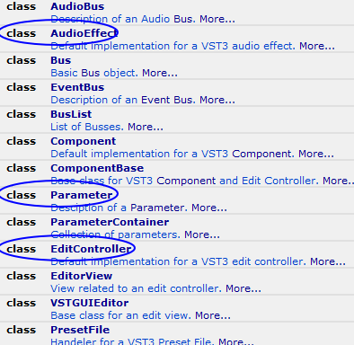
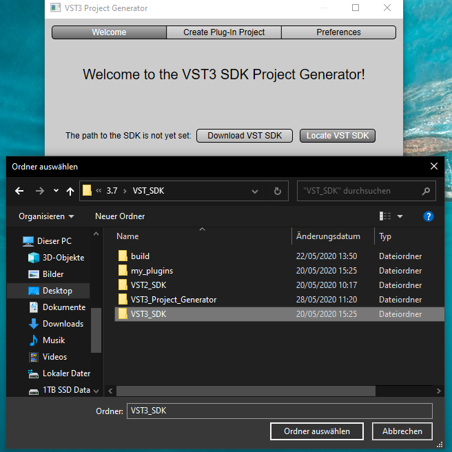
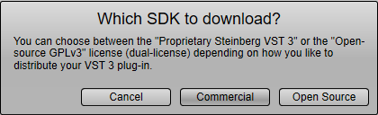
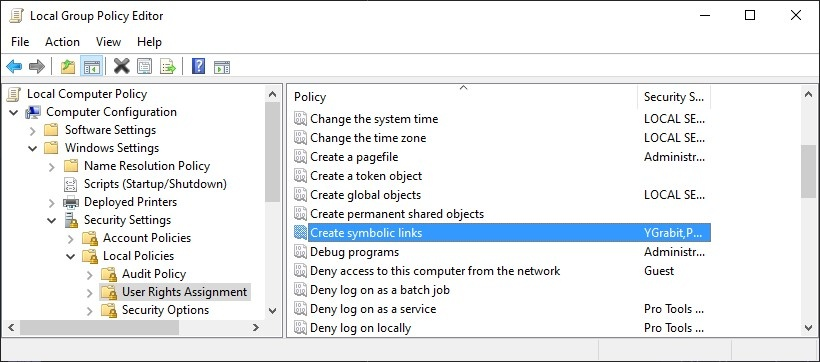
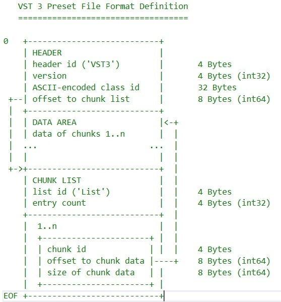
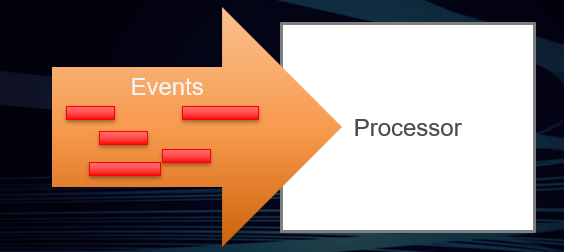
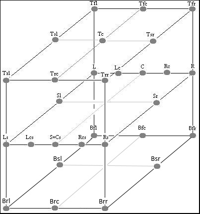
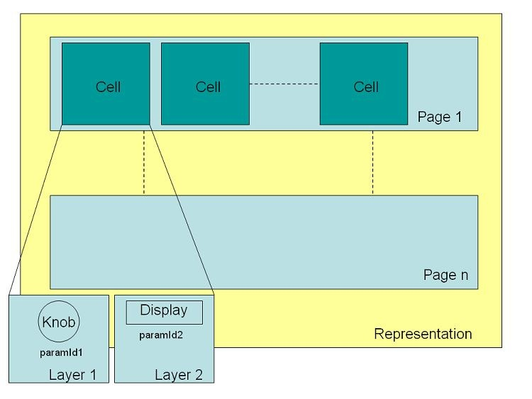
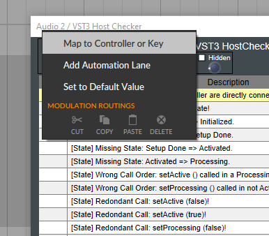
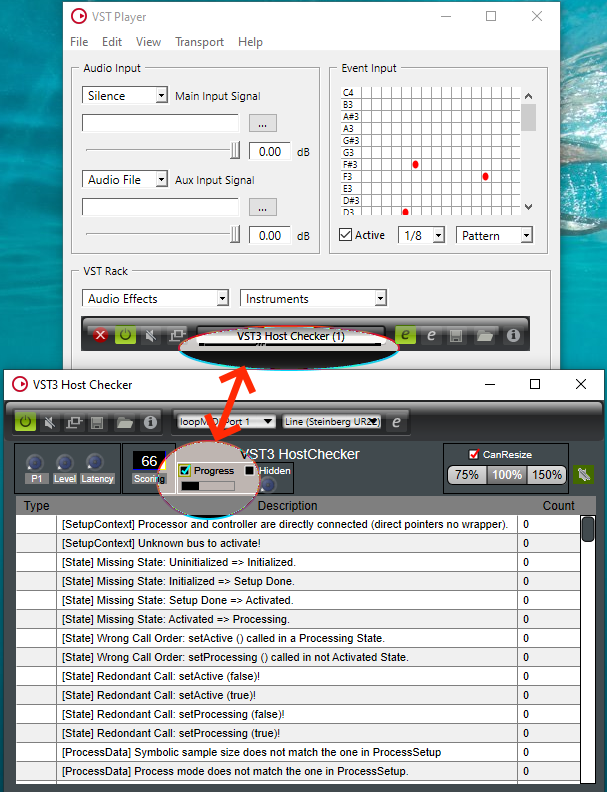

VST Home
Welcome to the world of VST 3

This part of the Steinberg Developer Resource is a portal dedicated to developers of VST 3 plug-ins and VST 3 hosts. Almost everything you need for developing VST 3 plug-ins is explained in the sections below.
What is VST?
Virtual Studio Technology (VST) is an audio plug-in software interface that facilitates the integration of software synthesizers and effects in digital audio workstations (DAW).
Main benefits of VST 3
Here, you can find a non-exhaustive list of VST 3 benefits.
What is the VST 3 SDK?
The VST 3 SDK (Virtual Studio Technology Software Development Kit) is a collection of software development tools included in one package. This allows plug-in developers to create plug-ins in VST 3 format and host developers to load VST 3 plug-ins into a DAW or audio editor.
VST 3 licensing
- Steinberg VST usage guidelines
- What are the licensing options
- Which files fall under which license?
- Developer use cases (FAQs)
Getting Started
- VST 3 Links — Important links you will need for working with VST 3
- How to setup up my system for VST 3 — In order to build VST 3 plug-ins, you need the source code of the VST 3 (API: interface definition), an IDE/compiler, cmake and a VST 3 host application.
- Preparation on Windows — Generated VST 3 Microsoft Visual Studio Projects using the cmake files included in the SDK will create by default symbolic links for each built plug-in in the official VST 3 folder, in order to allow this on Windows you have to adapt the Group Policy of Windows. See Here!
Tutorials
- Building the examples included in the SDK
- Using cmake for building VST 3 plug-ins
- Generate a new plug-in with the Project Generator App
- Code your first plug-in
- Use VSTGUI to design a User Interface
- Advanced VST 3 techniques
- How to use the silence flags
- Guideline for replacing a VST 2 plug-in by a VST 3 plug-in
- Strings Conversion Helper
- Creating a cmake plug-in project from scratch
- Creating a plug-in from the Helloworld template
- Switching to another VSTGUI submodule or branch
VST 3 Forum
Visit Steinberg's VST Developer Forum in order to get help with development, to submit bug reports, to request new features and to connect to other VST 3 developers:
Technical Documentation
Browse the VST 3 SDK's technical documentation. The full VST 3 API reference is only available in the VST 3 Package that you can download or find online here.
Miscellaneous
Copyrights and Glossary
/ VST Home
What is VST?
On this page:
- VST 3: New Standard for Virtual Studio Technology
- About the VST standard
- From the technical point of view
Related pages:
VST 3: New Standard for Virtual Studio Technology
With VST (Virtual Studio Technology), Steinberg established the world’s leading and most widely supported standard for plug-ins and virtual instruments in 1996. With VST 3 Steinberg releases the next major revision of Steinberg’s Virtual Studio Technology to the audio industry. VST 3 marks an important milestone in audio technology with a completely rewritten code base providing not only many new features but also the most stable and reliable VST platform ever. This combination of the latest technology and new features is the result of Steinberg’s twelve years of development experience as the leading plug-in interface provider. VST 3 has been designed to provide a technological and creative basis for many innovative and exciting new products for the audio industry, offering a new world of creative possibilities for instrument and effect plug-in users. The VST 3 SDK is available as a free technology, open in use for any developer.
About the VST standard
The Virtual Studio Technology (VST) interface is nothing short of a revolution in digital audio. Developed by Steinberg and first launched in 1996, VST creates a full, professional studio environment on your computer.VST allows the integration of virtual effect processors and instruments into your digital audio environment. These can be software recreations of hardware effect units and instruments or new creative effect components in your VST system. All are integrated seamlessly into VST compatible host applications like digital audio workstations (DAW). VST also allows easy integration of external equipment, allowing you to put together a system tailor-made to your needs. Being an open standard, the possibilities offered by VST have steadily been growing over the past decade. New virtual effect processors and virtual instruments are constantly being developed by Steinberg and of course dozens of other companies.
From the technical point of view
A VST plug-in is an audio processing component that is utilized within a host application. This host application provides the audio or/and event streams that are processed by the plug-in's code. Generally speaking, a VST plug-in can take a stream of audio data, apply a process to the audio, and return the result to the host application. A VST plug-in normally performs its process using the processor of the computer. The audio stream is broken into a series of blocks. The host supplies the blocks in sequence. The host and its current environment control the block-size. The VST plug-in maintains the status of all its own parameters relating to the running process: The host does not maintain any information about what the plug-in did with the last block of data it processed.
From the host application's point of view, a VST plug-in is a black box with an arbitrary number of inputs, outputs (Event (MIDI) or Audio), and associated parameters. The host needs no implicit knowledge of the plug-in's process to be able to use it. The plug-in process can use whatever parameters it wants, internally to the process, but depending on the capabilities of the host, it can allow the changes to user parameters to be automated by the host.
The source code of a VST plug-in is platform independent, but the delivery system depends on the platform architecture:
- On Windows, a VST plug-in is a multi-threaded DLL (Dynamic Link Library), recently packaged into a folder structure.
- On macOS X, a VST plug-in is a Mach-O Bundle.
- On Linux, a VST plug-in is a package.
Use cases
On this page:
Related pages:
Why use VST 3 SDK?
There are different use cases you can realize by using the VST 3 SDK:
-
You are a plug-in developer and you want to create audio FX or instrument plug-ins which can be included and used in a VST 3 host application.
- an audio FX plug-in is an audio processor effect taking audio as input and creating audio as output: such as Delay, Phaser, Compressor, Reverb, …
- an instrument plug-in is a sound/audio generator, taking as input note events and creating audio as output: such as emulations of well-known hardware synths. There are 2 kinds of instrument plug-ins: virtual sample-based (using audio samples as the basis for sound generation) and virtual synth (using different types of synthesis: physical modelling, additive, subtractive, FM, sample-based, …)
-
You are a host developer and you want to load in your application VST 3 plug-ins:
- audio FX and/or
- instruments plug-ins.
Advantages of using VST 3 SDK
By using VST 3 SDK directly:
- you are sure to be compliant with the VST 3 format.
- developing your plug-in based on the VST 3 format allows you to support easily new VST 3 features that improve the integration of these plug-ins inside a DAW. Some 3rd party SDKs use only a common layer between all plug-in formats, limiting in this way the possibility for a better integration, for example exclusive VST 3 features:
- context menu
- dirty state
- loading differentially a preset or a project
- note expression
- see other benefits of VST 3
- you get optimal integration of the VSTGUI tool with VST 3
- it includes the major plug-in format wrappers: AAX, AUv3, AU, VST 2 (deprecated)
- the included Validator allows you to check your plug-in's conformity to the VST 3 standard
Examples of VST 3 host applications
/ VST Home
Main benefits of VST 3
On this page:
- 1. Improved Performance with the Silence Flag
- 2. Multiple Dynamic I/Os
- 3. Sample-accurate Automation
- 4. Logical Parameter Organization
- 5. Resizeable UI Editor
- 6. Mouse Over Support
- 7. Context Menu Support
- 8. Channel Context Information
- 9. Note Expression
- 10. 3D Audio Support
- 11. Factory Concept
- 12. Support Remote control Representation
- 13. Others
Related pages:
Here, you can find a non-exhaustive list of VST 3 benefits.
VST 3 is a general rework of the long-serving VST plug-in interface (VST 1 & VST 2) . It is not compatible with the older VST (1 & 2) versions, but it includes some new features and possibilities. We have redesigned the API to make it not only far easier and more reliable for developers to work with, but have also provided completely new possibilities for plug-ins. These include:
1. Improved Performance with the Silence Flag
Managing large plug-in sets and multiple virtual instruments on typical studio computer systems can often be difficult because of CPU performance limits. VST 3 helps to improve overall performance by applying processing to plug-ins only when audio signals are present on their respective inputs. Instead of always processing input signals, VST 3 plug-ins can apply their processing economically and only when it is needed.
2. Multiple Dynamic I/Os
VST 3 plug-ins are no longer limited to a fixed number of inputs and outputs, and their I/O configuration can dynamically adapt to the channel configuration. Side-chains are also very easily realizable. This includes the possibility to deactivate unused busses after loading and even reactivate those when needed. This cleans up the mixer and further helps to reduce CPU load.
3. Sample-accurate Automation
VST 3 also features vastly improved parameter automation with sample accuracy and support for ramped automation data, allowing completely accurate and rapid parameter automation changes.
4. Logical Parameter Organization
The VST 3 plug-in parameters are displayed in a tree structure. Parameters are grouped into sections which represent the structure of the plug-in. Plug-ins can communicate their internal structure for the purpose of overview, but also for some associated functionality (e.g. program lists). Parameters like “Cutoff” and “Resonance” could be grouped into a section called “Filter”. This makes searching for a certain parameters easier, such as on an automation track. This also allows for assigning a group of parameters to a specific MIDI Channel input and audio output bus.
5. Resizeable UI Editor
VST 3 introduces a new approach to plug-in GUIs through window resizing, allowing for extremely flexible use of valuable screen space.
6. Mouse Over Support
The host can ask the plug-in which parameter is under the mouse.
7. Context Menu Support
VST 3 defines a way to allow the host to add its own entries in the plug-in context menu of a specific parameter.
8. Channel Context Information
A VST 3 plug-in can access channel information where it is instantiated: name, color, ...
9. Note Expression
VST 3 defines with Note Expression a new way of event controller editing. The plug-in is able to break free from the limitations of MIDI controller events by providing access to new VST 3 controller events that circumvent the laws of MIDI and provide articulation information for each individual note (event) in a polyphonic arrangement according to its noteId.
10. 3D Audio Support
VST 3 supports new speaker configurations like Ambisonic, Atmos, Auro 3D or 22.2.
11. Factory Concept
VST 3 plug-in library could export multiple plug-ins and in this way replaces the shell concept of VST 2 (kPlugCategShell).
12. Support Remote control Representation
Remote controllers for audio and MIDI software applications have become increasingly popular. VST 3 offers far more flexible control of VST plug-ins by remote controllers. Using the knobs and faders on the control surface, parameters can be recorded, renamed and edited in many ways. Parameters that cannot be edited can be routed for display purposes to the control surface, for example, to show Gain Reduction on a compressor.
13. Others
While designing VST 3, we performed a careful analysis of the existing functionality of VST and rewrote the interfaces from scratch. In doing so, we focused a lot on providing clear interfaces and their documentation in order to avoid usage errors from the deepest possible layer. Some more features implemented specifically for developers include:
- More stable technical host/plug-in environment
- Advanced technical definition of the standard
- Modular approach
- Separation of UI and processing
- UTF16 for localized parameter naming
- Advanced preset system
- Multiple plug-ins per library
- VST 3 SDK package:
- Test Host included
- Automated testing environment
- Validator (small command line Test Host)
- Plug-in and host examples code included
- Project Generator
- ...
/ VST Home
What is the VST 3 SDK?
On this page:
- VST 3 SDK explained
- What is included
- VST 3 Plug-ins Examples
- VST 3 Plug-in Test Host
- VST 3 Project Generator
- Validator command line
- AudioHost
- EditorHost
- VST 3 Inspector
- VSTGUI
- AAX, AUv3, AU and VST 2 wrappers
- iOS Inter-App Audio support
- VST 3 Licensing
- System requirements
- Download link
- Change history
VST 3 SDK explained
The VST 3 SDK (Virtual Studio Technology Software Development Kit) is a collection of software development tools included in one package. This allows plug-in developers to create plug-ins in VST 3 format and host developers to load VST 3 plug-ins into a DAW or audio editor.
What is included
The VST 3 SDK package contains:
The VST 3 API
This is a C++ interface defining how a VST 3 plug-in communicates with a host and vice versa. The heart of VST 3.
Check the folder "pluginterfaces/vst" of the SDK!
VST 3 Implementation Helper Classes
Some helper classes are provided, implementing some VST 3 interfaces for hosting and for creating VST 3 plug-ins. Simply derived your plug-in C++ classes from these helper classes.

Check the folder "public.sdk" of the SDK!
VST 3 Plug-ins Examples
The SDK includes some Plug-ins implementation examples.
VST 3 Plug-in Test Host
The SDK provides a test application called VST3PluginTestHost for Apple macOS X (x86_64/M1) and Microsoft Windows (64bits).
VST 3 Project Generator
This open source application (Win/macOS) allows you to generate easily a new VST 3 plug-in project by just entering in a GUI some parameters.
Validator command line
The validator is a small command line host application (source code included) which can be used to check your plug-in for VST 3 conformity.
AudioHost
Simple cross-platform (only tested on Linux) host application allowing you to register a VST 3 plug-in with Jack Server.
EditorHost
Simple cross-platform (Win/macOS/Linux) host application allowing you to open the editor of a VST 3 plug-in.
VST 3 Inspector
Simple cross-platform (Win/macOS/Linux) host application, built with VSTGUI, which scans the VST 3 Folder, collects information from the factory about each VST 3 plug-in and display it in its UI.
VSTGUI
This is a user interface toolkit mainly for audio plug-ins (VST, AudioUnit, etc). Based on the XML definition of the plug-in UI, VSTGUI includes an embedded editor (UIDescription Editor) which allows the developer to create a plug-in UI just by drag & drop of the UI element.
AAX, AUv3, AU and VST 2 wrappers
These wrappers allow you to create versions of your VST 3 plug-in in other plug-in formats with minimum effort.
iOS Inter-App Audio support
iOS InterApp-Audio application out of your VST 3 plug-in
VST 3 Licensing
Please sign this Steinberg VST 3 Plug-In SDK Licensing Agreement if you want to develop, release or host VST 3 plug-Ins.
System requirements
| Operating System | Architecture | Compiler | Notes |
|---|---|---|---|
| Windows 11 | x86, x86_64, arm64, arm64EC | MSVC 2022 | |
| Windows 8.1 -10 | x86, x86_64 | MSVC 2019, MSVC 2022 | |
| macOS 10.13 - 12 | x86, x86_64, Apple Silicon | Xcode 10 - 13.3 | |
| iOS 13 - 15 | arm64 | Xcode 11 - 13.3 | |
| Linux - Raspberry Pi OS (Buster) | arm32 | GCC 8.3 and higher | Visual Studio Code |
| Linux - Ubuntu 22.04 LTS | x86, x86_64 | GCC 11.2 and higher | Visual Studio Code, Qt Creator |
| Linux - Ubuntu 20.04 LTS | x86, x86_64 | GCC 8.3 and higher | Visual Studio Code, Qt Creator |
Download link
Important links you will need for working with VST 3
Change history
All released versions of the VST 3 SDK with changes and dates.
/ VST Home / What is the VST 3 SDK?
VST 3 Plug-in Examples
On this page:
- Introduction
- ADelay
- AGain
- TestChannelContext
- HostChecker
- TestLegacyMIDICCOut
- mda plug-ins
- Note Expression Synth
- Note Expression Text
- Panner
- PitchNames
- Test Prefetchable Support
- Test Multiple Program Changes
- Test Program Change
- Sync Delay
Related pages:
- VST 3 Plug-in Test Host
- AAX, AUv3, AU and VST 2 Wrappers
- Building the examples included in the SDK on Windows
- Building the examples included in the SDK on macOS
- Building the examples included in the SDK on Linux
Introduction
The SDK includes some Plug-ins implementation examples. The Legendary AGain and ADelay, thanks Paul Kellet the Open-source mda Plug-ins, a basic "Note Expression Synth" supporting "Note Expression Event", an example of pitchnames support Plug-in, a VST 3 Host Checker which checks if a host is VST 3 compliant and more...
Check the folder "public.sdk/samples/vst" of the SDK!
ⓘ Note
They use cmake as project generator: Using cmake for building VST 3 plug-ins
In order to add your own Plug-ins check: Generate a new plug-in with the Project Generator App
ADelay
Very simple delay plug-in:
- only one parameter (a delay)
Check the folder "public.sdk/samples/vst/adelay" of the SDK!
Classes:
- ADelayProcessor
- ADelayController
AGain
The SDK includes an AGain plug-in which is a very simple VST 3 plug-in. This plug-in:
- is multichannel compatible
- supports bypass processing
- has an automated gain parameter
- has an Event input bus (allowing to use noteOn velocity to control the gain factor)
- has a VU peak meter
- uses the VSTGUI4 library
- a version of this plug-in with side-chaining is available (showing a plug-in using the same controller and different - components)
- a AAX version is available
- a AUv3 version is available

Check the folder "public.sdk/samples/vst/again" of the SDK!
Classes:
- AGain
- AGainWithSideChain (used for side-chain version)
- AGainController
AGain Sample Accurate
Simple plug-in showing how to achieve sample accurate processing.
Based Check the folder "public.sdk/samples/vst/again_sampleaccurate" of the SDK!
TestChannelContext
Very simple plug-in:
- showing how to use the Steinberg::Vst::ChannelContext::IInfoListener interface
- using a generic UI

Check the folder "public.sdk/samples/vst/channelcontext" of the SDK!
HostChecker
- Instrument, Panner and Fx plug-in checking the VST 3 support of a host.
- It uses VSTGUI
- a AAX version is available

Check the folder "public.sdk/samples/vst/hostchecker" of the SDK!
TestLegacyMIDICCOut
Very simple plug-in:
- showing how to use LegacyMIDICCOutEvent which allow to generate MIDI CC as output event
- VST parameters change which creates LegacyMIDICCOutEvent Event

Check the folder "public.sdk/samples/vst/legacymidiccout" of the SDK!
Classes:
- LegacyMIDICCOut::Plug
mda plug-ins
- Effects (stereo to stereo plug-ins):
- Ambience: Reverb
- Bandisto: Multi-band Distortion
- BeatBox: Drum Replacer
- Combo: Amp and Speaker Simulator
- DeEsser: High frequency Dynamics Processor
- Degrade: Sample quality reduction
- Delay: Simple stereo delay with feedback tone control
- Detune: Simple up/down pitch shifting thickener
- Dither: Range of dither types including noise shaping
- DubDelay: Delay with feedback saturation and time/pitch modulation
- Dynamics: Compressor / Limiter / Gate
- Image: Stereo image adjustment and M-S matrix
- Leslie: Rotary speaker simulator
- Limiter: Opto-electronic style limiter
- Loudness: Equal loudness contours for bass EQ and mix correction
- MultiBand: Multi-band compressor with M-S processing modes
- Overdrive: Soft distortion
- RePsycho!: Drum loop pitch changer
- RezFilter: Resonant filter with LFO and envelope follower
- RingMod: Simple Ring Modulator
- Round Panner: 3D panner
- Shepard: Continuously rising/falling tone generator
- SpecMeter: Stereo 13 Bands spectral Meter
- Splitter: Frequency / level crossover for setting up dynamic processing
- Stereo Simulator: Haas delay and comb filtering
- Sub-Bass Synthesizer: Several low frequency enhancement methods
- TalkBox: High resolution vocoder
- TestTone: Signal generator with pink and white noise, impulses and sweeps
- Thru-Zero Flanger: Classic tape-flanging simulation
- Tracker: Pitch tracking oscillator, or pitch tracking EQ
- Instruments (1 Event input, 1 stereo Audio output):
- DX10: Sounds similar to the later Yamaha DX synths including the heavy bass but with a warmer, cleaner tone.
- EPiano: Simple EPiano
- JX10: The plug-in is designed for high quality (lower aliasing than most soft synths) and low processor usage
- Piano: Not designed to be the best sounding piano in the world, but boasts extremely low CPU and memory usage.
Based on the OpenSource mda plug-ins (http://mda.smartelectronix.com/), this set of plug-ins demonstrates how wrap DS- code in a VST 3 plug-in.
Check the folder "public.sdk/samples/vst/mda-vst3" of the SDK!
Classes:
- BaseProcessor
- BaseController
- BaseParameter
Note Expression Synth
- Instrument plug-in supporting note expression events
- It shows how easy it is to use VSTGUI
- a AUv3 version is available

Check the folder "public.sdk/samples/vst/note_expression_synth" of the SDK!
Classes:
- NoteExpressionSynth::Processor
- NoteExpressionSynth::Controller
- NoteExpressionSynth::Voice
Note Expression Text
- Plug-in visualizing the NoteExpression as Text
- It shows how easy it is to use VSTGUI4
Check the folder "public.sdk/samples/vst/note_expression_text" of the SDK!
Panner
- Simple Panner plug-in showing how to support Panner category (mono to Stereo)
- It shows how easy it is to use VSTGUI

Check the folder "public.sdk/samples/vst/panner" of the SDK!
Classes:
- PlugController
- PlugProcessor
PitchNames
- Instrument plug-in showing PitchNames support
- It shows how easy it is to use VSTGUI

Check the folder "public.sdk/samples/vst/pitchnames" of the SDK!
Classes:
- PitchNamesController
- PitchNamesProcessor
- PitchNamesDataBrowserSource
Test Prefetchable Support
Very simple plug-in:
- showing how to use the Steinberg::Vst::IPrefetchableSupport interface
- using a generic UI

Check the folder "public.sdk/samples/vst/prefetchablesupport" of the SDK!
Test Multiple Program Changes
Very simple plug-in:
- showing how to support multiple ProgramChange parameters: 16 slots with one associated program change parameter and a program list for each slot.
- using a generic UI
Test Program Change
Very simple plug-in:
- showing how to support Program List
- using a generic UI

Sync Delay
Very simple delay plug-in:
- showing how to support IProcessContextRequirements
Check the folder "public.sdk/samples/vst/syncdelay" of the SDK!
/ VST Home / What is the VST 3 SDK?
VST 3 Plug-in Test Host
On this page:
Related pages:
Introduction
The SDK provides a test application called VST3PluginTestHost for Apple macOS X (x86_64/Apple M1) and Microsoft Windows (64bits).
This application allows you to load a plug-in, simulates some inputs (Audio and Event) and acts like a small VST 3 host application based on an ASIO driver.
Included in this application is a test module which allows you to check your plug-in in regard to the VST 3 standard.

Check the folder "bin" of the SDK!
How to use it?
- View -> Open Plug-in Information Window: opens a window showing all registered component and controller VST 3 plug-ins.
- View -> Open Plug-in Unit Tests Window: opens a window where you can test your plug-in with a series of unit tests.
- View -> Open Preset Editor: allows you to open, check and modify VST 3 presets (adding meta attributes like in Instrument/- Style/Character)
- File -> Convert VST 3 Preset to VST 2 preset (fxp or fxb): allow to convert VST 3 Presets to compatible VST 2 Presets.
- File -> Overwrite Plug-in Name in VST 3 Presets: allow to rename the plug-in name in a set of VST 3 Presets.

Dark Mode version
VST Player Window
Audio Input
In this section you can select the audio source of your plug-in for the Main Input Audio Bus and for the Aux Input Audio Bus (Side-chain: if available) between:
- A sine wave
- Noise
- Silence
- ASIO Input (first stereo)
- An Audio File (in this case use the browser (... button) to choose the file (wave, aiff))
A Volume slider allows you to control the level of the source.
Event Input
This section simulates note events sent to the plug-in.
- A pattern could be defined and initialized with randomized, chromatic or manual events. (for Chromatic choose the start note in the pattern and select Chromatic in the pop-up menu).
- Active check box: enable/disable the playback of this pattern.
- You can choose different loop stepping for this pattern (1, 1/2, ...1/32)
VST Rack
This section allows you to load serialized multiple plug-ins. Each plug-in will be loaded in a slot.
- To load a plug-in (Audio or Instrument) click on the associated pop-up menu and select one plug-in.
- To unload a plug-in, click on its associated X button on its slot.
For each loaded plug-in in a slot you can:
- Enable/disable the plug-in with the On button.
- Bypass/process the plug-in with the Byp button (if available as parameter).
- Enable/disable the Side-chain bus with the Aux button (available only if the plug-in has input Side-chain).
- Open its editor with the Edit button.
- Save a Preset with the Store button.
- Load a Preset with the Load button.
- Open the information page of this plug-in with the Info button (see below).
Info Window
- Information window of AGain plug-in showing the Parameters panel:

- Information window of NoteExpressionSynth plug-in showing the Note Expression panel:

- Information window of AGain plug-in showing the Properties panel:

Context Menu
Right click on the opened plug-in opens a context menu which allows to trigger some actions:

- Switch to Generic Editor: open the generic editor instead of the one provided by the plug-in.
- Export Presets Parameters as XML: load automatically all available VST 3 Presets for this plug-in and create a readable XML file for each preset including the parameter states.
Transport
In this section you can:
| • set the gain of the output audio • control the transport state (Loop/Start/Stop/Rewind) • change the tempo and signature |  |
|---|
VST 3 Plug-ins Tests Window

In this window you can select a specific test branch for a specific plug-in. You can navigate in the test tree (left part), then click on the button Run Selected to process only the selected tests.
There are 2 kinds of tests concerning the way the plug-in is instantiated:
- Global Instance: only one instance of the plug-in will be instantiated for all tests.
- Local Instances: for each test a new instance of the plug-in will be instantiated.
We define currently 2 sets of test:
- VST 3 Conformity
- Special Features
You can run all available tests with Run All. It is possible also to disable some tests with the check box in the left view.
Error reports will be displayed in the Errors view. In the Messages View some warnings (or some plug-in limitations), test results and progress are displayed.
In this version of this Plug-in Test Host, the tests are limited to the main VST 3 features, in future version the test coverage will be extended.
Preset Editor

With this editor you can load and modify VST 3 presets created with the Store button of the VST Rack by adding some meta-attributes.
/ VST Home / What is the VST 3 SDK?
VST 3 Project Generator
On this page:
- Introduction
- Start the VST 3 Project Generator Application
- Setting the Preferences
- Setting and creating a plug-in project
- VST3 Project Generator License
Related pages:
Introduction
This open source application (Win/macOS) allows you to generate easily a new VST 3 plug-in project by just entering in a GUI some parameters.

Check the folder "VST3_Project_Generator" of the SDK!
The source code is available at GitHub - steinbergmedia/vst3projectgenerator: VST 3 Project Generator.
Start the VST 3 Project Generator Application

The first time you start the application, you will ask to define 2 folders where are located the VST SDK and the CMake tool. It still possible to change these folders afterward in the Preferences Tab, see Setting the Preferences.
The Visit us menu includes some useful links.
Locate CMake
If you have already downloaded the CMake tool, you just have to indicate the Project Generator where it is located, for this click on Locate CMake and choose with the file selector the cmake.exe file:

If you do not have previously installed the CMake tool, you could download it, just click on Download CMake, an internet browser will open the dedicated CMake webpage, check the Download section and install CMake.

Locate VST SDK
If you have already downloaded the VST 3 SDK, you just have to indicate the Project Generator where it is located, for this click on Locate VST SDK and choose with the folder selector the VST3_SDK folder:

If you do not have previously installed the VST 3 SDK, you could download it, just click on Download VST SDK, a dialog appears:

You have 2 possibilities to download the VST 3 SDK:
- Commercial: by clicking on it you will be redirected to the latest available SDK version to download, including all tools (check What is the VST 3 SDK?), with this variant of the SDK you are able to create and commercialize your plug-ins (See What are the licensing options for VST 3?).
- Open Source: by clicking on it you will be redirected to Steinberg Github where you will be able to clone the VST 3 SDK, this variant does not include all available tools (See What are the licensing options for VST 3?).
VST SDK and cmake successfully located
As soon as the requested 2 locations are founded, the user interface of the application should like this:

The next time you start the Project Generator application you will not asked to relocate them!
Setting the Preferences
Before creating any plug-in project, you have to define some global preferences which will be automatically saved when closing the application.
Company Information
The information included in this subsection will be used for generating Factory information associated to all plug-ins you will generate. This will be read by the host application loading your plug-ins and the host may display it to an user.
- Vendor: this is your Company name: e.g. "Steinberg Media Technologies GmbH"
- E-Mail: your email, which could be used by the host to redirect an user to your support for example: e.g. "mailto:support@steinberg.net"
- URL: the URL of your Company: e.g. "https://www.steinberg.net"
- C++ Namespace: this allows you to predefine a namespace which will be used to surround your plug-in source code: e.g. "MyWantedNamespace":
//...
namespace MyWantedNamespace {
//-----------------------------------------------------------------------
MyPluginController::MyPluginController ()
{
//...
}
} // end namespace
//...
namespace MyWantedNamespace {
Path Preferences
Like mentioned above in the subsection Path Preferences you could change several locations:
- VST 3 SDK Path: the current used VST 3 SDK you have previously downloaded.
- CMake Executable Path: the current used CMake tool
Setting and creating a plug-in project
In this tab you are defining some information for the creation of a new plug-in:

- Name: the name of the plug-in which is displayed in a host: e.g. "AGain"
- Type: this specifies the main VST 3 Sub-Category (PlugType) of your plug-in:
- Audio Effect: (kFx) a simple audio effect Stereo→Stereo
- Instrument: (kInstrument) a simple instrument with 1 Event input and 1 stereo Audio output
- Use VSTGUI: check this if you want to use VSTGUI as UI framework
- macOS Deployment Target: enter here the minimum requested macOS version targeted
- C++ Class Name: this specifies the basename of your plug-in classes: e.g. "AGain"
class AGainProcessor : public AudioEffect
{
//...
};
class AGainController : public EditControllerEx1
{
//...
};
- Bundle ID: this is the ID needed for example for the Info.plist of macOS: e.g. "com.steinberg.again"
- Filename Prefix: (optional) this will be added as file prefix to the created files: e.g. "AGain" => AGainProcessor.cpp / AGainController.h / ...
- Output Directory: you define here in which folder your project will be created
- CMake Generator: CMake tool required to define a generator in order to create configuration files for a specific build system: there are 2 kinds of generators: Command-Line and IDE. Choose the one you need for example:
- on Windows: Visual Studio 17 2022
- on macOS: Xcode
- CMake Platform: you could here define which target platform should be used, i.e x64 or ARM64EC (on Windows)
Once all information is set up, you could click on Create, a script will create and CMake will be used and the chosen IDE will be opened. In the bottom area the script output is displayed, you have the possibility to copy it by using the dedicated button: Copy Script Output To Clipboard.
Example of script Output
C:\Program Files\CMake\bin\CMake.exe C:\Users\YGrabit\Desktop\SDKs\VST3_SDKs\3.7.7\VST_SDK\VST3_Project_Generator\
Windows_x64\Resources\GenerateVST3Plugin.cmake
-DSMTG_VST3_SDK_SOURCE_DIR_CLI="C:/Users/YGrabit/Desktop/SDKs/VST3_SDKs/3.7.6/VST_SDK/vst3sdk"
-DSMTG_GENERATOR_OUTPUT_DIRECTORY_CLI="C:/Users/YGrabit/Desktop/SDKs/VST3_SDKs/3.7.7"
-DSMTG_PLUGIN_NAME_CLI="AGain" -DSMTG_PLUGIN_CATEGORY_CLI="Fx" -DSMTG_CMAKE_PROJECT_NAME_CLI="AGain"
-DSMTG_PLUGIN_BUNDLE_NAME_CLI="AGain" -DSMTG_PLUGIN_IDENTIFIER_CLI="com.steinberg.again"
-DSMTG_MACOS_DEPLOYMENT_TARGET_CLI="10.13" -DSMTG_VENDOR_NAME_CLI="Steinberg"
-DSMTG_VENDOR_HOMEPAGE_CLI="www.steinberg.net" -DSMTG_VENDOR_EMAIL_CLI="info@steinberg.net"
-DSMTG_PREFIX_FOR_FILENAMES_CLI="" -DSMTG_PLUGIN_CLASS_NAME_CLI="AGain" -DSMTG_ENABLE_VSTGUI_SUPPORT_CLI=ON
-P "C:\Users\YGrabit\Desktop\SDKs\VST3_SDKs\3.7.7\VST_SDK\VST3_Project_Generator\
Windows_x64\Resources\GenerateVST3Plugin.cmake"
==================================================
Steinberg Media Technologies GmbH
VST3 Project Generator
==================================================
-- Found Git: C:/Program Files/Git/cmd/git.exe (found version "2.38.1.windows.1")
-- SMTG_CMAKE_SCRIPT_DIR : C:/Users/YGrabit/Desktop/SDKs/VST3_SDKs/3.7.7/VST_SDK/VST3_Project_Generator/Windows_x64/Resources
-- SMTG_ENABLE_VSTGUI_SUPPORT : ON
-- SMTG_GENERATOR_OUTPUT_DIRECTORY : C:/Users/YGrabit/Desktop/SDKs/VST3_SDKs/3.7.7
-- SMTG_TEMPLATE_FILES_PATH : C:/Users/YGrabit/Desktop/SDKs/VST3_SDKs/3.7.7/VST_SDK/VST3_Project_Generator/Windows_x64/Resources/cmake/templates
-- SMTG_VST3_SDK_SOURCE_DIR : C:/Users/YGrabit/Desktop/SDKs/VST3_SDKs/3.7.6/VST_SDK/vst3sdk
-- SMTG_VENDOR_NAME : Steinberg
-- SMTG_VENDOR_HOMEPAGE : www.steinberg.net
-- SMTG_VENDOR_EMAIL : info@steinberg.net
-- SMTG_SOURCE_COPYRIGHT_HEADER: Copyright(c) 2022 Steinberg.
-- SMTG_PLUGIN_NAME : AGain
-- SMTG_PREFIX_FOR_FILENAMES : e.g. myplugincontroller.h
-- SMTG_PLUGIN_IDENTIFIER : com.steinberg.again, used e.g. in Info.plist
-- SMTG_PLUGIN_BUNDLE_NAME : AGain
-- SMTG_CMAKE_PROJECT_NAME : e.g. AGain will output AGain.vst3
-- SMTG_VENDOR_NAMESPACE : e.g. namespace MyCompanyName {...}
-- SMTG_PLUGIN_CLASS_NAME : e.g. class AGainProcessor : public AudioEffect {...}
-- SMTG_PLUGIN_CATEGORY : Fx
-- SMTG_MACOS_DEPLOYMENT_TARGET: 10.13
-- SMTG_Processor_UUID : 0x310DE7F8, 0x10DA54D2, 0x98DE9223, 0xA9933093
-- SMTG_Controller_UUID : 0x80068D40, 0xBA125C34, 0x9B1E857C, 0xC17CD5F3
-- Configured: C:/Users/YGrabit/Desktop/SDKs/VST3_SDKs/3.7.7/AGain/CMakeLists.txt
-- Copied : C:/Users/YGrabit/Desktop/SDKs/VST3_SDKs/3.7.7/AGain/resource/310DE7F810DA54D298DE9223A9933093_snapshot.png
-- Copied : C:/Users/YGrabit/Desktop/SDKs/VST3_SDKs/3.7.7/AGain/resource/310DE7F810DA54D298DE9223A9933093_snapshot_2.0x.png
-- Configured: C:/Users/YGrabit/Desktop/SDKs/VST3_SDKs/3.7.7/AGain/resource/myplugineditor.uidesc
-- Configured: C:/Users/YGrabit/Desktop/SDKs/VST3_SDKs/3.7.7/AGain/resource/win32resource.rc
-- Configured: C:/Users/YGrabit/Desktop/SDKs/VST3_SDKs/3.7.7/AGain/source/version.h
-- Configured: C:/Users/YGrabit/Desktop/SDKs/VST3_SDKs/3.7.7/AGain/source/myplugincids.h
-- Configured: C:/Users/YGrabit/Desktop/SDKs/VST3_SDKs/3.7.7/AGain/source/myplugincontroller.cpp
-- Configured: C:/Users/YGrabit/Desktop/SDKs/VST3_SDKs/3.7.7/AGain/source/myplugincontroller.h
-- Configured: C:/Users/YGrabit/Desktop/SDKs/VST3_SDKs/3.7.7/AGain/source/mypluginentry.cpp
-- Configured: C:/Users/YGrabit/Desktop/SDKs/VST3_SDKs/3.7.7/AGain/source/mypluginprocessor.cpp
-- Configured: C:/Users/YGrabit/Desktop/SDKs/VST3_SDKs/3.7.7/AGain/source/mypluginprocessor.h
C:\Program Files\CMake\bin\CMake.exe -G "Visual Studio 17 2022" -A x64 -S "C:/Users/YGrabit/Desktop/SDKs/VST3_SDKs/3.7.7\AGain" -B "C:/Users/YGrabit/Desktop/SDKs/VST3_SDKs/3.7.7\AGain\build" -DSMTG_ADD_VSTGUI=ON
-- Selecting Windows SDK version 10.0.22000.0 to target Windows 10.0.19045.
-- The C compiler identification is MSVC 19.34.31935.0
-- The CXX compiler identification is MSVC 19.34.31935.0
-- Detecting C compiler ABI info
-- Detecting C compiler ABI info - done
-- Check for working C compiler: C:/Program Files/Microsoft Visual Studio/2022/Professional/VC/Tools/MSVC/14.34.31933/bin/Hostx64/x64/cl.exe - skipped
-- Detecting C compile features
-- Detecting C compile features - done
-- Detecting CXX compiler ABI info
-- Detecting CXX compiler ABI info - done
-- Check for working CXX compiler: C:/Program Files/Microsoft Visual Studio/2022/Professional/VC/Tools/MSVC/14.34.31933/bin/Hostx64/x64/cl.exe - skipped
-- Detecting CXX compile features
-- Detecting CXX compile features - done
-- [SMTG] CMAKE_SOURCE_DIR is set to: C:/Users/YGrabit/Desktop/SDKs/VST3_SDKs/3.7.7/AGain
-- [SMTG] CMAKE_CURRENT_LIST_DIR is set to: C:/Users/YGrabit/Desktop/SDKs/VST3_SDKs/3.7.6/VST_SDK/vst3sdk
-- [SMTG] Disable all VST3 samples
-- [SMTG] SMTG_VSTGUI_SOURCE_DIR is set to: C:/Users/YGrabit/Desktop/SDKs/VST3_SDKs/3.7.6/VST_SDK/vst3sdk/vstgui4
-- Could NOT find EXPAT (missing: EXPAT_LIBRARY EXPAT_INCLUDE_DIR)
-- VSTGUI will use the embedded Expat package!
-- [SMTG] SMTG_AAX_SDK_PATH is not set. If you need it, please download the AAX SDK!
-- Performing Test SMTG_USE_STDATOMIC_H
-- Performing Test SMTG_USE_STDATOMIC_H - Failed
-- [SMTG] Setup running moduleinfotool for AGain
-- [SMTG] Setup running validator for AGain
-- [SMTG] SMTG_PLUGIN_TARGET_PATH is set to: C:\Users\YGrabit\AppData\Local\Programs\Common\VST3
-- Configuring done
-- Generating done
-- Build files have been written to: C:/Users/YGrabit/Desktop/SDKs/VST3_SDKs/3.7.7/AGain/build
That´s it!
You can contribute to this project on https://github.com/steinbergmedia/vst3projectgenerator!
VST3 Project Generator License
BSD style
VST3ProjectGenerator LICENSE
(c) Steinberg Media Technologies, All Rights Reserved
Redistribution and use in source and binary forms, with orwithout modification,
are permitted provided that the following conditions are met:
* Redistributions of source code must retain the abovecopyright notice,
this list of conditions and the following disclaimer.
* Redistributions in binary form must reproduce the abovecopyright notice,
this list of conditions and the following disclaimer inthe documentation
and/or other materials provided with the distribution.
* Neither the name of the Steinberg Media Technologies northe names of its
contributors may be used to endorse or promote productsderived from this
software without specific prior written permission.
THIS SOFTWARE IS PROVIDED BY THE COPYRIGHT HOLDERS ANDCONTRIBUTORS "AS IS" AND
ANY EXPRESS OR IMPLIED WARRANTIES, INCLUDING, BUT NOT LIMITEDTO, THE IMPLIED
WARRANTIES OF MERCHANTABILITY AND FITNESS FOR A PARTICULARPURPOSE ARE DISCLAIMED.
IN NO EVENT SHALL THE COPYRIGHT OWNER OR CONTRIBUTORS BELIABLE FOR ANY DIRECT,
INDIRECT, INCIDENTAL, SPECIAL, EXEMPLARY, OR CONSEQUENTIALDAMAGES (INCLUDING,
BUT NOT LIMITED TO, PROCUREMENT OF SUBSTITUTE GOODS ORSERVICES; LOSS OF USE,
DATA, OR PROFITS; OR BUSINESS INTERRUPTION) HOWEVER CAUSEDAND ON ANY THEORY OF
LIABILITY, WHETHER IN CONTRACT, STRICT LIABILITY, OR TORT (INCLUDING NEGLIGENCE
OR OTHERWISE) ARISING IN ANY WAY OUT OF THE USE OF THISSOFTWARE, EVEN IF ADVISED
OF THE POSSIBILITY OF SUCH DAMAGE.
/ VST Home / What is the VST 3 SDK?
Validator command line
On this page:
Validator command line
As Cross-platform source code: The validator is a small command line host application (source code included) which can be used to check your plug-in for VST 3 conformity. You can also write your own test code and let the validator execute it.
Very nice for automatic build server integration.
/ VST Home / What is the VST 3 SDK?
AudioHost Application
On this page:
AudioHost
As Cross-platform source code: Simple cross-platform (only tested on Linux) host application allowing you to register a VST 3 plug-in with Jack Server. First, you have to download the Jack Audio SDK and application server (http://www.jackaudio.org).
- Windows (not tested):
audiohost.exe "C:\PATH_TO_PLUGIN"
- macOS (not tested)
- Linux:
audiohost PATH_TO_PLUGIN
On Windows and macOS, you can also drag and drop a VST 3 plug-in on the executable via Explorer/Finder.
Check the folder "public.sdk/samples/vst-hosting/audiohost" of the SDK!
/ VST Home / What is the VST 3 SDK?
EditorHost Application
On this page:
EditorHost
As Cross-platform source code: Simple cross-platform (Win/macOS/Linux) host application allowing you to open the editor of a VST 3 plug-in (with HiDPI support on Windows/macOS). Call it from the command line:
- Windows:
editorhost.exe "C:\PATH_TO_PLUGIN"
- macOS/Linux:
editorhost PATH_TO_PLUGIN
On Windows and macOS you can also drag and drop a VST 3 plug-in on the executable via Explorer/Finder.
Check the folder "public.sdk/samples/vst-hosting/editorhost" of the SDK!
/ VST Home / What is the VST 3 SDK?
VST 3 Inspector Application
On this page:
VST 3 Inspector
As Cross-platform source code: Simple cross-platform (Win/macOS/Linux) host application, built with VSTGUI, which scans the VST 3 Folder, collects information from the factory about each VST 3 plug-in and display it in its UI.

Check the folder "public.sdk/samples/vst-hosting/inspectorapp" of the SDK!
/ VST Home / What is the VST 3 SDK?
AAX, AUv3, AU and VST 2 Wrappers
On this page:
- VST 3 - VST 2.x Wrapper
- VST 3 - AAX Wrapper
- VST 3 - Audio Unit v3 Wrapper
- VST 3 - Audio Unit Wrapper
Related pages:
These wrappers allow you to create versions of your VST 3 plug-in in other plug-in formats with minimum effort:
Check the folder "public.sdk/source/vst/aaxwrapper" of the SDK!
VST 3 - VST 2.x Wrapper
Helper Class wrapping a VST 3 plug-in to a VST 2.4 plug-in
VST 3 - AAX Wrapper
Helper Class wrapping a VST 3 plug-in to an AAX plug-in
VST 3 - Audio Unit v3 Wrapper
Helper Class wrapping a VST 3 plug-in to an Audio Unit v3 plug-in
VST 3 - Audio Unit Wrapper
Helper Class wrapping a VST 3 plug-in to an Audio Unit v2 plug-in
/ ... / AAX, AUv3, AU and VST 2 Wrappers
VST 3 - VST 2.x Wrapper
On this page:
Helper Class wrapping a VST 3 plug-in to a VST 2.4 plug-in
Introduction
The VST 3 SDK comes with a helper class which wraps one VST 3 audio processor and edit controller to a VST 2.x plug-in.
How does it work?
You just need to add public.sdk/source/vst/vst2wrapper/vst2wrapper.sdk.cpp to your project and add the following code somewhere in your sources:
//-----------------------------------------------------------------
#include "public.sdk/source/vst/vst2wrapper/vst2wrapper.h"
//-----------------------------------------------------------------
::AudioEffect* createEffectInstance (audioMasterCallback audioMaster)
{
return Steinberg::Vst::Vst2Wrapper::create (GetPluginFactory(), kAudioProcessorCID, kVst2UniqueID, audioMaster);
}
/ ... / AAX, AUv3, AU and VST 2 Wrappers
VST 3 - AAX Wrapper
On this page:
Helper Class wrapping a VST 3 plug-in to a AAX plug-in
Introduction
The VST 3 SDK comes with a helper class which wraps one VST 3 audio processor and edit controller to an AAX plug-in.
How does it work?
- Check the AGainAAX example
- AAX SDK 2.3 or higher is expected in folder external.avid.aax (located at the same level as the folder public.sdk)
- Here is the step based on the AgainAAX example:
- In the cpp file againaax.cpp, you can define the plug-in properties: IO audio, product ID, ...
- On Windows, copy built linker output again_aax.aaxplugin to "c:\Program Files\Common Files\Avid\Audio\Plug-Ins\again_aax.aaxplugin\Contents\x64" (the debug build does this automatically, but needs appropriate access rights (Administrator rights of your visual))
- On OSX, copy built bundle build/Debug/again.aaxplugin to "/Library/Application Support/Avid/Audio/Plug-Ins"
- A developer version of Pro Tools is needed to load the plug-in, the release version of Pro Tools requires plug-ins to be Pace-signed (PACE Anti-Piracy Inc.: https://www.ilok.com)
/ ... / AAX, AUv3, AU and VST 2 Wrappers
VST 3 - AudioUnit v3 Wrapper
On this page:
Related pages:
Helper Class wrapping a VST 3 plug-in to an Audio Unit v3 plug-in
Introduction
The VST 3 SDK comes with a helper class which wraps one VST 3 audio processor and edit controller to an AU v3 plug-in.
The wrapped AudioUnit does support MPE when the VST 3 plug-in has Note Expression support. You need to implement Steinberg::Vst::INoteExpressionPhysicalUIMapping to map your Note Expression to the limited three expressions defined by MPE.
How does it work?
- Structure:
- App (container app which initializes the AU through small Playback Engine)
- Extension (extension which is loaded by hosts, also initializes the AU)
- How to use the VST 3 → AU v3 Wrapper with the sample code:
- make sure you have correct code signing set up
- build & run targets
- How to use the VST 3 → AU v3 Wrapper with your own VST plug-in:
- duplicate either the folder again_auv3 or note_expression_synth_auv3 in public.sdk/samples/vst, rename it and edit CMakelist.txt to add your sources, resources and modified target names etc.
- open audiounitconfig.h and change the definitions in this file.
- also change the other files in that folder to your requirements. Code signing is required, but you can build and test with a developer only identity.
- build & run targets
/ ... / AAX, AUv3, AU and VST 2 Wrappers
VST 3 - AudioUnit v2 Wrapper
On this page:
Related pages:
Helper Class wrapping a VST 3 plug-in to an Audio Unit v2 plug-in
Introduction
The VST 3 SDK comes with an AudioUnit wrapper, which can wrap one VST 3 audio processor and edit controller as an AudioUnit effect/instrument.
The wrapper is a small dynamic library which loads the VST 3 plug-in. As AudioUnits store some important information in their resource fork, this library must be compiled for every VST 3 plug-in.
How does it work?
- You first need to build the SDK (check here) and then you should - have the xcode project.
- You may need to download the CoreAudio SDK from Apple and point cmake to it when building the SDK with it (see here).
- create a copy of the again AU wrapper example project directory (public.sdk/source/vst/auwrapper/again/)
- rename the copy to your needs
- edit the target settings of the project and change
- Product Name
- Library search path so that it points to the directory where libauwrapper.a exists
- architecture setting so that it only includes architectures that the VST 3 plug-in supports
- search in the project for AUWRAPPER_CHANGE and change the settings to your needs, especially in:
- edit audiounitconfig.h, see comments there
- edit Info.plist, see comments there
- edit the "Make Links Script" for easier debugging/development
- build your project
- done ... that is all!
For the release version, you must place a copy or an alias of your VST 3 plug-in in the resource folder of the bundle named "plugin.vst3"
/ VST Home / What is the VST 3 SDK?
iOS Inter-App Audio Support
See [3.6.0] iOS Inter-App Audio
/ VST Home / What is the VST 3 SDK?
VSTGUI
On this page:
Related pages:
Introduction
This is a user interface toolkit mainly for audio plug-ins (VST, AudioUnit, etc). Based on the XML definition of the plug-in UI, VSTGUI includes an embedded editor (UIDescription Editor) which allows the developer to create a plug-in UI just by drag & drop of the UI element.
First developed in-house by Steinberg Media Technologies (around 1998) for their first VST plug-ins. Later added as binary libraries to the official VST SDK. Since May 2003, VSTGUI is open source, and is hosted now at GitHub https://github.com/steinbergmedia/vstgui.
The last official release version of VSTGUI is always included in the VST 3 SDK.

Example of the VSTGUI UIDescription Editor (embedded editing WYSIWYG)
Check the folder vstgui4 of the SDK!
VSTGUI Forum
Visit Steinberg's VST Developer Forum in order to get help with development, submit bug reports, request new features and connect to other VSTGUI developers:

VSTGUI on GitHub

https://github.com/steinbergmedia/vstgui
VSTGUI License
BSD style
VSTGUI LICENSE
(c) Steinberg Media Technologies, All Rights Reserved
Redistribution and use in source and binary forms, with or without modification,
are permitted provided that the following conditions are met:
* Redistributions of source code must retain the abovecopyright notice,
this list of conditions and the following disclaimer.
* Redistributions in binary form must reproduce the above copyright notice,
this list of conditions and the following disclaimer inthe documentation
and/or other materials provided with the distribution.
* Neither the name of the Steinberg Media Technologies northe names of its
contributors may be used to endorse or promote productsderived from this
software without specific prior written permission.
THIS SOFTWARE IS PROVIDED BY THE COPYRIGHT HOLDERS AND CONTRIBUTORS "AS IS" AND
ANY EXPRESS OR IMPLIED WARRANTIES, INCLUDING, BUT NOT LIMITEDTO, THE IMPLIED
WARRANTIES OF MERCHANTABILITY AND FITNESS FOR A PARTICULAR PURPOSE ARE DISCLAIMED.
IN NO EVENT SHALL THE COPYRIGHT OWNER OR CONTRIBUTORS BELIABLE FOR ANY DIRECT,
INDIRECT, INCIDENTAL, SPECIAL, EXEMPLARY, OR CONSEQUENTIAL DAMAGES (INCLUDING,
BUT NOT LIMITED TO, PROCUREMENT OF SUBSTITUTE GOODS ORSERVICES; LOSS OF USE,
DATA, OR PROFITS; OR BUSINESS INTERRUPTION) HOWEVER CAUSEDAND ON ANY THEORY OF
LIABILITY, WHETHER IN CONTRACT, STRICT LIABILITY, OR TORT (INCLUDING NEGLIGENCE
OR OTHERWISE) ARISING IN ANY WAY OUT OF THE USE OF THISSOFTWARE, EVEN IF ADVISED
OF THE POSSIBILITY OF SUCH DAMAGE.
Tutorials for VSTGUI
Use VSTGUI to design a User Interface
This tutorial explains how to use VSTGUI. VSTGUI comes with a WYSIWYG editor that allows you to createstunning user interfaces for your plug-in.
/ VST Home
VST 3 Licensing
Related pages:
- Steinberg VST usage guidelines
- What are the licensing options for VST 3?
- Which files fall under which license?
- Developer use cases (FAQs)
This developer use case guide will help you to decide which VST 3 licensing model to choose. The VST 3 SDK has new Usage Guidelines to follow for all licensing models, please read them carefully!
Steinberg VST usage guidelines
Whenever VST® is used or the SDK has been used to create a product or the SDK is included (Open-source GPLv3 case), it is required to add the reference to Steinberg by using the VST compatible logo as supplied by Steinberg. Included in the VST 3 SDK, the VST compatible logo can be found in the folder VST_SDK/VST3_SDK/vst3_doc/artwork.
What are the licensing options for VST 3?
You can choose between the Proprietary Steinberg VST 3 or the Open-source GPLv3 license (dual-license) depending on how you want to distribute your VST 3 plug-in/host. The License Agreement could be found here and in the VST 3 SDK package.
Which files fall under which license?
All files describing the VST 3 interface, except VST 2 files, located in the folder "pluginterfaces" of the SDK, fall under the dual-license described previously.
Developer use cases (FAQs)
The following use cases support you to choose the right license.
Steinberg VST usage guidelines
On this page:
- 1. Required use of VST Compatible logo
- 2. Use of VST unrelated to the VST Compatible logo
- 3. Use when claiming compatibility
- 4. Use on website
- 5. Use on package
- 6. Use in product name or logo
- 7. Use in company name
- 8. Use in social media
- 9. Use in domain
- 10. Use in logo
- 11. Use in video
- 12. Use in category
- 13. Use in combination or composition
- 14. VST Compatible logo
- 15. General guidelines for using VST trademark
- 16. Questions and suggestions
Related pages:
Whenever VST® is used or the SDK has been used to create a product or the SDK is included (Open-source GPLv3 case), it is required to add the reference to Steinberg by using the VST compatible logo as supplied by Steinberg. Included in the VST 3 SDK, the VST compatible logo can be found in the folder VST_SDK/VST3_SDK/vst3_doc/artwork.
This logo exists in different forms: with and without the trademark text, black on white and white on black. If you choose the logo without the trademark text, you have to include the following statement somewhere:
"VST is a trademark of Steinberg Media Technologies GmbH, registered in Europe and other countries."
1. Required use of VST Compatible logo
Whenever “VST” is used, or the SDK is used to create a product, or when the SDK is included, it is required to add the reference to Steinberg by using the “VST Compatible logo” as supplied by Steinberg on each of the following:
-
on package
-
on website:
The VST Compatible logo must be shown on every webpage that relates to such a product or shows VST. Using e.g. only within the imprint is NOT sufficient. -
all documentation, regardless of the media used, such as PDF manuals, website, printed manuals etc.
On each of the following the logo can be omitted only if not enough space is available. However, in such a case be sure to include Steinberg's copyrights notice:
-
on all advertising materials
-
in the "about box" or similar (e.g. help menu, startup screen) of the product.
2. Use of VST unrelated to the VST Compatible logo
It is allowed for all parties that have entered into the current Steinberg VST Plug-in SDK Licensing Agreement to use “VST” in regular letters to refer to compatibility as long as complying with the Agreement. This can be done on the package/website or even within the name of the product as long as the form of use is in line with the Agreement and the VST Compatible logo is always shown in the context of such. The following shall provide more guidance related to common forms of usage.
3. Use when claiming compatibility
It is allowed to use claims such as “compatible with 64-bit VST” if the VST Compatible logo is placed in context of such claim, e.g. not too far away on the same page, and the product uses or has been created using the SDK and is, in fact, compatible.
4. Use on website
It is not sufficient to include the VST Compatible logo only in the imprint or one other page. All pages that relate to a product using or created using the SDK or showing VST must show the VST Compatible logo.
5. Use on package
The VST Compatible logo must be printed on the package of any product using or created using the SDK or showing VST.
6. Use in product name or logo
Provided that the VST Compatible logo is always displayed in the context of such a product name, “VST” may be added to the basic product name, e.g. like “mycoolEngine for VST”, if set in regular type and not graphically illustrated or integrated into the product name, and if the VST Compatible logo is always shown in direct context to such a product name. It is not allowed to merge the basic product name and VST in any graphical way into one integrated visual. E.g., it is allowed to use like this:

while it is unacceptable to use it like this:

7. Use in company name
It is not allowed to include VST in the company name.
8. Use in social media
It is allowed to use VST in channels and their names/URLs and the like, if a junction is used to denote the compatibility, e.g. in “MycoolEngineForVST”, and if the channels etc. always show the VST Compatible logo.
9. Use in domain
It is allowed to use VST in domains, e.g. second level domains, if a junction is used to denote the compatibility, e.g. in “MycoolEngineForVST.com”, and if any page under such domain shows the VST Compatible logo and the domain only shows products using or created using the SDK.
10. Use in logo
It is not permitted to include VST in a company logo but it is allowed to include VST in a product logo provided that is in conformity with No. 6 (Use in product name or logo).
11. Use in video
It is allowed to use “VST” in the title of a video or in a video, e.g. a tutorial, in a way as named above, e.g. as an addition to a product name or to show the compatibility, if the VST Compatible logo is shown in the video and, if VST is included in the title of the video, on any page that shows the video and/or the title. Provided that a frame of the video is shown as still (e.g. when presenting the video while not playing it) and such frame includes VST, the frame or the direct context of the video needs to show the VST Compatible logo.
12. Use in category
It is allowed to use VST in a category or in a related URL outside of the domain, e.g. in www.myreviews.com/VSTplugins/, if such category is of generic meaning, and if under such category only forms of use and/or products in line with the SDK agreement are listed.
13. Use in combination or composition
It is not allowed to create combinations or compositions like “VSTi” or similar.
14. VST Compatible logo
The current VST Compatible logos are the following:


Minimum printing size = 20 x 18,7 mm


Minimum printing size = 15 x 10 mm
15. General guidelines for using VST trademark
On product documentation and promotional materials, use the registered trademark symbol (®) the first time the VST trademark appears in the text. Also include an attribution of Steinberg's ownership within the credit notice. Attribution:
"VST® is a trademark of Steinberg Media Technologies GmbH, registered in Europe and other countries."
16. Questions and suggestions
Questions and suggestions regarding this guide can be sent to reception@steinberg.de
What are the licensing options
On this page:
Related pages:
You can choose between the Proprietary Steinberg VST 3 or the Open-source GPLv3 license (dual-license) depending on how you want to distribute your VST 3 plug-in/host. The License Agreement could be found here and in the VST 3 SDK package.
Proprietary Steinberg VST 3 license
The "Proprietary Steinberg VST 3" license allows you to distribute your VST 3 plug-in/host in a binary form. However, please note the following requirements:
- You need written permission from Steinberg Media Technologies GmbH in order to distribute your VST 3 plug-in/host (Steinberg will send you the countersigned License agreement included in the SDK that you signed and sent to us).
- You need to mention Steinberg Media Technologies GmbH in the about box and/or documentation of your VST 3 plug-in/host and follow the Steinberg VST usage guidelines.
For more details please read the "Proprietary Steinberg VST 3" license agreement. If you accept it, please enter all required information, sign it and send it back to us, either via land mail (to the Steinberg address mentioned in the license), or via e-mail to reception@steinberg.de or via fax (+49 (0)40 210 35-300). We will countersign the license agreement and send it back to you.
ⓘ As PDF
The License agreement is part of the VST SDK package, too.
Open-source GPLv3 license
The open-source license lets you share the source code of your VST 3 plug-in/host including the VST 3 SDK's sources which are subject to the GPLv3.
ⓘ Note
Note that VST 2 sources are NOT part of the GPLv3!
For more information about GPLv3 check this link. It also permits you to change and modify the VST 3 SDK's sources as long as you share your changes and make them available for everyone (e.g. on an Internet hosting service like GitHub). Note that you have to follow the Steinberg VST usage guidelines.
Steinberg Dual-License file
//----------------------------------------------------------------------------
// LICENSE
// (c) 2022, Steinberg Media Technologies GmbH, All Rights Reserved
//----------------------------------------------------------------------------
This license applies only to files referencing this license,
for other files of the Software Development Kit therespective embedded license text
is applicable. The license can be found at: <http://www.steinberg.net/sdklicenses_vst3>
This Software Development Kit is licensed under the terms ofthe Steinberg VST 3 License,
or alternatively under the terms of the General PublicLicense (GPL) Version 3.
You may use the Software Development Kit according to eitherof these licenses as it is
most appropriate for your project on a case-by-case basis(commercial or not).
a) Proprietary Steinberg VST 3 License
The Software Development Kit may not be distributed in partsor its entirety
without prior written agreement by Steinberg MediaTechnologies GmbH.
The SDK must not be used to re-engineer or manipulate anytechnology used
in any Steinberg or Third-party application or softwaremodule,
unless permitted by law.
Neither the name of the Steinberg Media Technologies GmbH northe names of its
contributors may be used to endorse or promote productsderived from this
software without specific prior written permission.
Before publishing a software under the proprietary license, you need to obtain a copy
of the License Agreement signed by Steinberg MediaTechnologies GmbH.
The Steinberg VST SDK License Agreement can be found at:
<http://www.steinberg.net/en/company/developers.html>
THE SDK IS PROVIDED BY STEINBERG MEDIA TECHNOLOGIES GMBH "ASIS" AND
ANY EXPRESS OR IMPLIED WARRANTIES, INCLUDING, BUT NOT LIMITEDTO, THE IMPLIED
WARRANTIES OF MERCHANTABILITY AND FITNESS FOR A PARTICULARPURPOSE ARE DISCLAIMED.
IN NO EVENT SHALL STEINBERG MEDIA TECHNOLOGIES GMBH BE LIABLEFOR ANY DIRECT,
INDIRECT, INCIDENTAL, SPECIAL, EXEMPLARY, OR CONSEQUENTIALDAMAGES (INCLUDING,
BUT NOT LIMITED TO, PROCUREMENT OF SUBSTITUTE GOODS ORSERVICES; LOSS OF USE,
DATA, OR PROFITS; OR BUSINESS INTERRUPTION) HOWEVER CAUSEDAND ON ANY THEORY OF
LIABILITY, WHETHER IN CONTRACT, STRICT LIABILITY, OR TORT(INCLUDING NEGLIGENCE
OR OTHERWISE) ARISING IN ANY WAY OUT OF THE USE OF THISSOFTWARE, EVEN IF ADVISED
OF THE POSSIBILITY OF SUCH DAMAGE.
b) General Public License (GPL) Version 3
Details of these licenses can be found at: <http://www.gnu.orglicenses/gpl-3.0.html>
//---------------------------------------------------------------------------------
Which files fall under which license?
On this page:
Related pages:
Which files of the VST 3 SDK fall under which license?
All files describing the VST 3 interface, except VST 2 files, located in the folder "pluginterfaces" of the SDK, fall under the dual-license described previously.
Each of these files includes this text:
//----------------------------------------------------------------------------
// This file is part of a Steinberg SDK. It is subject to thelicense terms
// in the LICENSE file found in the top-level directory ofthis distribution
// and at www.steinberg.net/sdklicenses.
// No part of the SDK, including this file, may be copied, modified, propagated,
// or distributed except according to the terms contained inthe LICENSE file.
//----------------------------------------------------------------------------
- for all other files of the VST 3 SDK, the respective embedded license text is applicable, for example:
- all VSTGUI files fall under a BSD style license
- all Helper files (included in base and public.sdk folders) except VST 2 files fall under a BSD style license
- all VST 2 files (included in pluginterfaces and public.sdk folders) fall under the "Proprietary Steinberg VST 2" license
- all mda-vst3 examples (public.sdk/samples/mda-vst3 folder) fall under a BSD style license: Copyright (c) 2008 Paul Kellett
What about VST 2?
The "Proprietary Steinberg VST 2" license, which is the VST 2 license agreement, allows you to distribute your VST 2 plug-in/host in a binary form. However, please note the following requirements:
- You need written permission from Steinberg Media Technologies GmbH in order to distribute your VST 2 plug-in/host (which had to be done before October 2018).
- You need to mention Steinberg Media Technologies GmbH in the about box and/or documentation of your VST 2 plug-in/host and follow the Steinberg VST usage guidelines.
- Note that the "Proprietary Steinberg VST 3" license does not include the "Proprietary Steinberg VST 2" license, you have to sign it separately! It was available in the VST 2 SDK and in the VST 3 SDK old version.
- Note that from the first of October 2018, Steinberg does not accept any more submissions of license agreement for VST 2 plug-in/host! This means:
If you do not have a license agreement signed with Steinberg before October 2018, you are not allowed to distribute VST 2 plug-ins or VST 2 hosts!
Developer use cases (FAQs)
Related pages:
See Frequently Asked Questions: Licensing
/ VST Home
Getting Started
Related pages:
This section provides general information about where to find the VST 3 SDK and how to get it.
VST 3 Links
Important links you will need for working with VST 3.
How to set up my system for VST 3
In order to build VST 3 plug-ins, you need the source code of the VST 3 (interface definition), an IDE/compiler, cmake and a VST 3 host application.
VST 3 Links
On this page:
- Getting VST 3 SDK
- Online Documentation
- VST 3 Forum
- VSTGUI
- External Links to VST 3, DSP, Conferences and Plug-ins development
Related pages:
Important links you will need for working with VST 3.
Getting VST 3 SDK
You have 2 possibilities for getting the VST 3 SDK:
| Component | as zip package | as GitHub repository |
|---|---|---|
| VST 3 API | ✔️ | ✔️ |
| Helpers classes | ✔️ | ✔️ |
| AAX, AUv3, AU and VST 2 wrappers | ✔️ | ✔️ |
| iOS Inter-App Audio support | ✔️ | ✔️ |
| VST 3 Plug-ins Examples | ✔️ | ✔️ |
| Validator command line | ✔️ | ✔️ |
| AudioAudioHost | ✔️ | ✔️ |
| EditorHost | ✔️ | ✔️ |
| VST 3 Inspector | ✔️ | ✔️ |
| VSTGUI | ✔️ | ✔️ |
| VST 3 Project Generator | ✔️ (as exe only) | ✔️ (as source code) |
| VST 3 Plug-in Test Host (exe only) | ✔️ | ❌ |
| VST 3 Licensing | ✔️ Proprietary + GPLv3 | ❌ only GPLv3 |
Download the full VST 3 package as zip file
Download a full VST 3 SDK package which includes everything you need to build a VST 3 plug-in or host. Test your VST 3 plug-in in real-time with the included VST 3 Plug-in Test Host and execute automated tests (See What is the VST 3 SDK?):
https://www.steinberg.net/vst3sdk (direct link to zip file, ~100 MB)
Clone VST 3 repository from GitHub
Clone the VST 3 SDK repository from GitHub for easy integration into your workspace:
ⓘ Note
Independently of the download source of the VST 3 SDK be sure that you follow the license agreement (check What are the licensing options for VST 3?)
Online Documentation
Browse the VST 3 SDK's online documentation including API reference and sample code:
Browse the VST portal for the whole documentation and tutorials:
VST 3 Forum
Visit Steinberg's VST Developer Forum in order to get help with development, submit bug reports, request new features and connect to other VST 3 developers:
VSTGUI
When you download the VST 3 SDK, the last official release version of VSTGUI is included, but you can get it (the release and the development branches) from github:
External Links to VST 3, DSP, Conferences and Plug-ins development
Here you can find some links to external resource about VST 3, DSP and Plug-ins development:
| Category | Links |
|---|---|
| YouTube | • ADC 2020: Support of MIDI2 and MIDI-CI in VST 3 instruments, Arne Scheffler and Janne Roeper  • ADC 2017: VST 3 history, advantages and best practice, Yvan Grabit • ADC 2017: VST 3 history, advantages and best practice, Yvan Grabit  • ADC 2016: The Golden Rules of Audio Programming, Pete Goodliffe • ADC 2016: The Golden Rules of Audio Programming, Pete Goodliffe• How to setup the VST 3 SDK's Sample Plug-in Projects |
| Forums / Mailing List | • KVRAudio Forum: DSP and Plug-in Development • music-dsp mailing list at columbia.edu • music-dsp Web • Sursound mailing list at Virginia Tech • DSP Stack Overflow: DSP Developer community • Stack Overflow: Developer community |
| Tools / Libraries | • MATLAB®: Audio Plug-in Creation and Hosting • Blender: A free and open source 3D creation suite • Armadillo: C++ library for linear algebra & scientific computing • lapack++: Linear Algebra PACKage in C++ • dlib: Dlib is a modern C++ toolkit • Intel MKL: Intel® Math Kernel Library • CMSIS-DSP: CMSIS-DSP is an optimized compute library for Arm CPU (filtering, mathematics,...) |
| Books | • DSP related.com: Articles, news, and blogs about basic and modern DSP topics • Introduction to Signal Processing by Sophocles J. Orfanidis • DSP Guide by Steven W. Smithn (The Scientist and Engineer's Guide to Digital Signal Processing) • Online Books by Julius O. Smith III (Mathematics of the Discrete Fourier Transform (DFT), Introduction to Digital Filters, Physical/Spectral Audio Signal Processing) • Seeing Circles, Sines, and Signals: A visual and interactive introduction to DSP • The ART of VA Filter Design by Vadim Zavalishin (theoretical and practical aspects of the virtual analog filter design in the music DSP context) • Stackoverflow - The Definitive C++ Book Guide and List: Nice list of C++ books (for beginner to advanced levels) |
| Conferences | • ADC: Audio Developer Conference by Roli • DAFx: Digital Audio Effects • ICASSP: International Conference on Acoustics, Speech, and Signal Processing • ISMIR: International Society for Music Information Retrieval |
| Other | • VST on wikipedia • VST Story Interview • Steinberg Media Technologies  |
How to setup up my system for VST 3
On this page:
Related pages:
In order to build VST 3 plug-ins, you need the source code of the VST 3 (interface definition), an IDE/compiler, cmake and a VST 3 host application.
Get the source code
From the downloaded vstsdk.zip file
Download the VST 3 SDK: check VST 3 SDK Download.
Unpack the zip file to a development folder on your computer.
From GitHub:
git clone --recursive https://github.com/steinbergmedia/vst3sdk.git
Get an IDE for development
For Windows
On Windows, we recommend that you to use Visual Studio C++ or Visual Studio Code. You can get it for free here https://visualstudio.microsoft.com/free.
For MacOS
On MacOS, a first choice is Xcode (available here https://developer.apple.com/xcode/).
For Linux
In order to build the SDK successfully, you need an Ubuntu-based Linux distribution. Other distributions might work as well, but are not tested.
- Download Linux: http://www.ubuntu.com or https://www.linuxmint.com
- Install it directly or in a virtual machine like Parallels. We used and tested on Ubuntu 22.04 LTS.
Package Requirements
Building the SDK examples requires installation of several packages:
Required:
sudo apt-get install cmake gcc "libstdc++6" libx11-xcb-dev libxcb-util-dev libxcb-cursor-dev libxcb-xkb-dev libxkbcommon-dev libxkbcommon-x11-dev libfontconfig1-dev libcairo2-dev libgtkmm-3.0-dev libsqlite3-dev libxcb-keysyms1-dev
ⓘ Note
On Raspbian/Debian, replace "libxcb-util-dev" with "libxcb-util0-dev"
Optional:
sudo apt-get install subversion git ninja-build
A recommended IDE (optional): QTCreator
sudo apt-get install qtcreator
ⓘ Note
You can also use the bash file "setup_linux_packages_for_vst3sdk.sh" included in the VST3_SDK/tools folder!
ⓘ Note
- Instead of gcc compiler, a recent version of clang compiler will also work!
- libgtkmm3 is required for VSTGUI and the editorhost example!
- Jack Audio is required for audiohost example!
Get cmake
In order to control the compilation process and create an IDE project, VST 3 SDK uses the open-source and cross-platform tool cmake.
You can download cmake here: https://cmake.org/download/ or use a package manager for your OS (Linux).
You can use it as a command line tool or use the cmake executable with GUI. cmake-gui is included in the cmake package:

Specific on Windows
You have to adapt your Windows right access to allow creation of symbolic links for VST 3 plug-ins: Check HERE!
Get a VST 3 host application
You can use your favorite VST 3 host application, see here for some examples, or you can use the VST 3 Plug-in Test Host application included in the VST 3 SDK.
Preparation on Windows
Generated VST 3 Microsoft Visual Studio Projects using the cmake included in the SDK will create by default symbolic links for each built plug-in in the official VST 3 folder (C:\Program Files\Common Files\VST3). In this folder it is not directly possible to write these symbolic links if you are allowed to do this (not Administrator for example), to solve this problem you have 3 solutions:
Solution 1
If you do not want to create these links, call cmake with this parameter:
-DSMTG_CREATE_PLUGIN_LINK=0
Solution 2
You could choose (which is the default) the new user location for VST 3 plug-ins which should have no right access issue as normal user, call cmake with this parameter:
-DSMTG_PLUGIN_TARGET_USER_PROGRAM_FILES_COMMON=1
Solution 3
In order to allow create these symbolic links on Windows you have to adapt the Group Policy of Windows which is only available by default in Windows Pro but not in Windows Home. In Windows Home you have to install it before changing the right access to this folder (C:\Program Files\Common Files\VST3). For this there are some internet webpages showing you how to do this, for example this one: https://www.itechtics.com/enable-gpedit-msc-windows-11.
As soon as the group Policy editor is available you have to start it by:
- Enter run in the Windows search field and start the run App and enter gpedit.msc
or
- Enter Edit group policy in the Windows search field:

Now the Local Group Policy Editor is started:
- Navigate to:
Computer Configuration => Windows Settings => Security Settings =>Local Policies => User Rights Assignment => Create symbolic links
Here you can set which users can create symbolic links, add your user name.

/ VST Home
Tutorials
On this page:
- Building the examples included in the SDK
- Using cmake for building VST 3 plug-ins
- Generate a new plug-in with the Project Generator App
- Code your first plug-in
- Use VSTGUI to design a User Interface
- Advanced VST 3 techniques
- How to use the silence flags
- Guideline for replacing a VST 2 plug-in by a VST 3 plug-in
- Strings Conversion Helper
- Creating a cmake plug-in project from scratch
- Creating a plug-in from the Helloworld template
- Switching to another VSTGUI submodule or branch
- Tutorials on Youtube from 3rd Party developers
The tutorials explain common techniques and best practices for building your plug-ins. By following the instruction step by step you will learn how to develop VST 3 plug-ins.
ⓘ Note
This section is under construction and will be extended inthe future with new tutorials.
Building the examples included in the SDK
Building the examples included in the SDK on Windows
This tutorial explains how to set up your computer and create an environment for compiling the VST 3 audio plug-in examples provided with the VST 3 SDK.
Building the examples included in the SDK on macOS
This tutorial explains how to set up your computer and create an environment for compiling the VST 3 audio plug-in examples provided with the VST 3 SDK.
Building the examples included in the SDK on Linux
This tutorial explains how to set up your computer and create an environment for compiling the VST 3 audio plug-in examples provided with the VST 3 SDK.
Using cmake for building VST 3 plug-ins
This tutorial explains how to use cmake with VST 3 SDK.
Generate a new plug-in with the Project Generator App
This tutorial explains how to create a new audio plug-in by using the VST 3 Project Generator included in the VST 3 SDK.
Code your first plug-in
Following the previous tutorial Generate a new plug-in with the Project Generator App, this tutorial explains how to code an audio plug-in and how to add some basic features.
Use VSTGUI to design a User Interface
This tutorial explains how to use VSTGUI. VSTGUI comes with a WYSIWYG editor that allows you to create stunning user interfaces for your plug-in.
Advanced VST 3 techniques
In this tutorial you will learn:
- How to add nearly sample accurate parameter changes to an audio effect
- Using C++ templates to write one algorithm supporting 32 bit and 64 bit audio processing
- Setting the state of the audio effect in a thread safe manner
How to use the silence flags
This tutorial explains how to use silence flags.
Guideline for replacing a VST 2 plug-in by a VST 3 plug-in
This guideline explains what could be done for creating a VST 3 plug-in replacing an old VST 2 plug-in.
Strings Conversion Helper
The SDK provides some helpers functions to convert from UTF16 (use in VST 3 interfaces) to UTF8 (used by std::string).
Creating a cmake plug-in project from scratch
This tutorial provides a step-by-step guide for building a VST 3 plug-in's CMakeLists.txt from scratch.
Creating a plug-in from the Helloworld template
This tutorial explains how to create a new audio plug-in from the Helloworld template included in the VST 3 SDK.
Switching to another VSTGUI submodule or branch
Sometimes it is necessary to switch to another VSTGUI submodule or branch for testing purpose. This tutorial explains how to do that.
Tutorials on Youtube from 3rd Party developers
How to setup the VST 3 SDK's Sample Plugin Projects
https://www.youtube.com/watch?v=004zcWwgi1A
VST 3 SDK Tutorial: Create your own VST 3 Synth plug-in
https://www.youtube.com/watch?v=zdgytoRLKj0
Building Your First Audio Plug-in (Windows 10)
https://www.youtube.com/watch?v=4MQZyZKOPPM
Building Your First Audio Plug-in (macOS)
https://www.youtube.com/watch?v=Twcx6Sd6HBw
Building Your First Audio Plug-in (Linux Ubuntu)
https://www.youtube.com/watch?v=jXryyxEsFag
Building the examples included in the SDK
On this page:
- Building the examples included in the SDK on Windows
- Building the examples included in the SDK on macOS
- Building the examples included in the SDK on Linux
Building the examples included in the SDK on Windows
This tutorial explains how to set up your computer and create an environment for compiling the VST 3 audio plug-in examples provided with the VST 3 SDK on Windows.
Building the examples included in the SDK on macOS
This tutorial explains how to set up your computer and create an environment for compiling the VST 3 audio plug-in examples provided with the VST 3 SDK on macOS.
Building the examples included in the SDK on Linux
This tutorial explains how to set up your computer and create an environment for compiling the VST 3 audio plug-in examples provided with the VST 3 SDK on Linux.
/ VST Home / Tutorials / Building the examples
Building the examples included in the SDK on Windows
On this page:
- Goal
- Part 1: Getting and installing the VST 3 SDK
- Part 2: Building the examples on Windows
- Building using cmake-gui
Goal
This tutorial explains how to set up your computer and create an environment for compiling the VST 3 audio plug-in examples provided with the VST 3 SDK. These include plug-ins like simple DSP effects (Gain, compressor, delay, ...), synths instruments and some plug-ins showing how to handle some specific VST 3 features (Note Expression, Program Change, channel info context, ...).
They can be loaded into VST 3 hosts like Cubase, WaveLab, ...
Part 1: Getting and installing the VST 3 SDK
For downloading the SDK, see this section "How to set up my system for VST 3".
Download cmake from: https://cmake.org/download/ or use a package manager for your OS.
Part 2: Building the examples on Windows
- Create a folder for the build and move to this folder (using cd):
mkdir build
cd build
- Generate the solution/projects: specify the path to the project where CMakeLists.txt is located:
cmake.exe -G "Visual Studio 17 2022" -A x64 ../vst3sdk
or without symbolic links
cmake.exe -G "Visual Studio 17 2022" -A x64 ../vst3sdk-DSMTG_CREATE_PLUGIN_LINK=0
ⓘ Note
You can find the string definition for different Visual Studio Generators in the cmake online documentation (https://cmake.org/documentation/)
- You have to adapt your Windows right access to allow creation of symbolic links for VST3 plug-ins: Check HERE!
- Build the plug-in (you can use Visual Studio too):
msbuild.exe vstsdk.sln
(or alternatively for example for release)
cmake --build . --config Release
Building using cmake-gui
- Start the cmake-gui application which is part of the cmake installation (https://cmake.org/download/)

- Browse Source...: select the folder VST3_SDK
- Browse Build...: select a folder where the outputs (projects/...) will be created. Typically a folder named build
- You can check the SMTG Options
- Press Configure and choose the generator in the window that opens: for example "Visual Studio 17 2022"

- Press Generate to create the project
- Open your targeted IDE, and compile the solution/project.
/ VST Home / Tutorials / Building the examples
Building the examples included in the SDK on macOS
On this page:
Goal
This tutorial explains how to set up your computer and create an environment for compiling the VST 3 audio plug-in examples provided with the VST 3 SDK. These include plug-ins like simple DSP effects (Gain, compressor, delay, ...), synths instruments and some plug-ins showing how to handle some specific VST 3 features (Note Expression, Program Change, channel info context, ...).
They can be loaded into VST 3 hosts like Cubase, WaveLab, ...
Part 1: Getting and installing the VST 3 SDK
For downloading the SDK, see this section "How to set up my system for VST 3".
Download cmake from: https://cmake.org/download/ or use a package manager for your OS.
Part 2: Building the examples on macOS
- Create a folder for the build and move to this folder (using cd):
mkdir build
cd build
- Generate the solution/projects: specify the path to the project where CMakeLists.txt is located:
For XCode:
cmake -GXcode ../vst3sdk
Without XCode (here debug variant):
cmake -DCMAKE_BUILD_TYPE=Debug ../
- Build the plug-in (you can use XCode too):
xcodebuild
(or alternatively for example for release)
cmake --build . --config Release
/ VST Home / Tutorials / Building the examples
Building the examples included in the SDK on Linux
On this page:
Goal
This tutorial explains how to set up your computer and create an environment for compiling the VST 3 audio plug-in examples provided with the VST 3 SDK. These include plug-ins like simple DSP effects (Gain, compressor, delay, ...), synths instruments and some plug-ins showing how to handle some specific VST 3 features (Note Expression, Program Change, channel info context, ...).
They can be loaded into VST 3 hosts like Cubase, WaveLab, ...
Part 1: Getting and installing the VST 3 SDK
For downloading the SDK, see this section "How to set up my system for VST 3".
Download cmake from: https://cmake.org/download/ or use a package manager for your OS.
Part 2: Building the examples on Linux
- Install the required packages: Required packages
- Create a folder for the build and move to this folder (using cd):
mkdir build
cd build
- Generate the solution/projects: specify the path to the project where CMakeLists.txt is located:
cmake ../vst3sdk
- Build the plug-in:
make
(or alternatively for example for release)
cmake --build . --config Release
Using cmake for building VST 3 plug-ins
On this page:
- Goal
- CMake for building VST 3 plug-ins
- Command line for Windows
- Command line for macOS
- On Linux with QtCreator
- Use of cmake-gui
- Available SMTG cmake options
- Using your IDE for compiling the examples
Related pages:
- How to set up my system for VST 3
- Building the examples included in the SDK on Windows
- Building the examples included in the SDK on macOS
- Building the examples included in the SDK on Linux
Goal
This tutorial explains how to use cmake with VST 3 SDK.
CMake for building VST 3 plug-ins
The SDK provides a set of cmake files allowing you to compile the included samples and to develop new plug-ins.
- Download cmake from: https://cmake.org or use a package manager for your OS (See How to set up my system for VST 3).
- You can use the command line or the cmake editor (cmake-gui).
Command line for Windows
Example for building Microsoft Studio 17 2022 solution:
// go in to the folder where you extracted the VST 3 SDK
mkdir build
cd build
cmake.exe -G "Visual Studio 17 2022" -A x64 "..\vst3sdk"
// or without symbolic links
cmake.exe -G "Visual Studio 17 2022" -A x64 "..\vst3sdk" -DSMTG_CREATE_PLUGIN_LINK=0
// or with symbolic links but using the user location (enable by default), it does not request admin right
cmake.exe -G "Visual Studio 17 2022" -A x64 "..\vst3sdk" -DSMTG_PLUGIN_TARGET_USER_PROGRAM_FILES_COMMON=1
// note: you can find the string definition for different Visual Studio Generators in the cmake online documentation
Command line for macOS
Example for building Xcode project:
// go in to the folder where you extracted the VST 3 SDK
mkdir build
cd build
/Applications/CMake.app/Content/bin/cmake -G"Xcode" "../vst3sdk"
On Linux with QtCreator
You can use QtCreator 2.3.1 (or higher)
- start QtCreator 2.3.2
- open the CMakeLists.txt located at the top of the VST3_SDK folder
- click on the menu Build->Run CMake
Use of cmake-gui
- start the CMake (cmake-gui) application
- set Where is the source code to the location of the VST3_SDK folder
- set Where to build the binaries to a build folder of yourchoice
- click on Configure
- click on Generate for creating project/solution

Example of cmakegui application on Windows
- Compile with cmake command line
cd build
cmake --build
- Choose a specific compiler with cmake (command line on Linux)
cmake -DCMAKE_C_COMPILER=/usr/bin/clang-DCMAKE_CXX_COMPILER=/usr/bin/clang++
// or
cmake -DCMAKE_C_COMPILER=/usr/bin/gcc-DCMAKE_CXX_COMPILER=/usr/bin/g++
Available SMTG cmake options
- SMTG_AAX_SDK_PATH: Here you can define where the AAX SDK is located (if needed)
- SMTG_ADD_VST3_HOSTING_SAMPLES: Add VST 3 hosting samples to the solution (default ON)
- SMTG_ADD_VST3_PLUGINS_SAMPLES: Add VST 3 plug-in samples to the project (default ON)
- SMTG_ADD_VSTGUI: Add VSTGUI support (default ON)
- SMTG_BUILD_UNIVERSAL_BINARY: Build universal binary (32 & 64 bit) (Mac only)
- SMTG_COREAUDIO_SDK_PATH: Here you can define where the COREAUDIO SDK is located (Mac only, if needed)
- SMTG_CREATE_BUNDLE_FOR_WINDOWS: Create bundle on Windows for the VST 3 plug-ins (new since 3.6.10! Windows only) (default ON)
- SMTG_CREATE_MODULE_INFO: Create the moduleinfo.json file (default ON)
- SMTG_CREATE_PLUGIN_LINK: Create symbolic link for each VST 3 plug-in in ${VST3_FOLDER_NAME} folder (you need to have Administrator rights on Windows or change the Local Group Policy to allow the creation of symbolic links) (default ON)
- SMTG_CREATE_VST2_AGAIN_SAMPLE_VERSION: Allows you to create the VST 2 version of the Sample Plug-in AGain, be sure that you have copied the VST 2 interfaces into the folder VST_SDK/VST3_SDK/pluginterfaces/vst2.x (default OFF)
- SMTG_CUSTOM_BINARY_LOCATION: Customize output location for binaries
- SMTG_CXX_STANDARD: C++ standard version used for plugins: 14, 17, 20
- SMTG_ENABLE_ADDRESS_SANITIZER: Enable Address Sanitizer
- SMTG_ENABLE_TARGET_VARS_LOG: Enables to log target variables for debugging (new since 3.6.11!) (default OFF)
- SMTG_ENABLE_USE_OF_JACK: Allows you to create the audiohost application using Jack (default OFF)
- SMTG_MDA_VST3_VST2_COMPATIBLE: Build the MDA examples as a replacement for their VST 2 counterpart (default ON)
- SMTG_IOS_DEVELOPMENT_TEAM: Needed for building the InterAppAudio and AUv3 examples for iOS (Mac only)
- SMTG_MYPLUGINS_SRC_PATH: Here you can add your VST 3 plug-ins folder
- SMTG_PLUGIN_TARGET_PATH: Here you can redefine the VST 3 plug-ins folder
- SMTG_PLUGIN_TARGET_USER_PROGRAM_FILES_COMMON: use FOLDERID_UserProgramFilesCommon as VST 3 target path (Windows only) (default ON)
- SMTG_RENAME_ASSERT: Rename ASSERT to SMTG_ASSERT to avoid conflicts with 3rd party libraries (default ON)
- SMTG_RUN_VST_VALIDATOR: Run the VST validator on VST 3 plug-ins each time they are built (default ON)
- SMTG_USE_STATIC_CRT: Use static CRuntime on Windows (option /MT) (default OFF: /MD is used) (Windows only)
Using your IDE for compiling the examples
- Solution/project (vstsdk.sln/vstsdk.xcodeproj) is generated in the "build" folder.
- The created plug-ins are located in the "build" folder, in sub-folders /VST3/Release or /VST3/Debug.
- In order to allow a DAW to find these plug-ins you have to create links from the official VST 3 Locations to them.
Generate a new plug-in with the Project Generator App
On this page:
- Goal
- Part 1: Getting and installing the VST 3 SDK
- Part 2: Using the VST 3 plug-in Project Generator application
Goal
This tutorial explains how to create a new audio plug-in by using the VST 3 Project Generator included in the VST 3 SDK and how to add some basic features.
The artifact will be an audio plug-in that can compute a gain to an audio signal and can be loaded into VST 3 hosts like Cubase, WaveLab, ...
Part 1: Getting and installing the VST 3 SDK
For downloading the SDK, see the section "How to set up my system for VST 3".
You have the following possibilities to start a new project:
- You can use the helloworld template included in the VST 3 SDK and duplicate the folder into a new folder. Adapt each file where the comment mentions it.
- Or, which is easier and recommended, you can use the VST 3 Project Generator application included in the VST 3 SDK. The following steps show how to use it.
Part 2: Using the VST 3 plug-in Project Generator application
The VST3 Project Generator application included in the VST 3 SDK is available for Windows and for macOS.
Start the application located in the VST3_Project_Generator folder of the VST 3 SDK.
Check that the Preferences tab has the required information: see Setting the Preferences.
In the Create Plug-in Project tab you have to enter information about the plug-in that you want create:

Check the Create Plug-in Project tab of the VST 3 Project Generator dialog for more detailed documentation.
Once you have entered all information, click Create. A script is started which creates a project with updated files in the Output directory. After this step, the IDE (Visual Studio or XCode) is launched.
Compile the project and test your new plug-in. The plug-in is created in the Output Directory, in order to make it visible to a VST 3 host you may have to copy or symbolic-link it to the official VST 3 Locations / Format.
For example, if you chose Audio Effect as Type, a simple Stereo→Stereo plug-in is created.
A good way to understand how a VST 3 plug-in works is to add breakpoints in each function in the processor and controller files:
tresult PLUGIN_API MyPluginController::initialize (FUnknown*context);
tresult PLUGIN_API MyPluginController::terminate ();
//...
tresult PLUGIN_API MyPluginProcessor::initialize (FUnknown*context);
//...
and start a VST 3 host from the debugger.
That´s it, now you could start to code, see next tutorial Code your first plug-in.
Code your first Plug-in
On this page:
Goal
Following the previous tutorial Generate a new plug-in with the Project Generator App, this tutorial explains how to code an audio plug-in and how to add some basic features.
The artifact will be an audio plug-in that can compute a gain to an audio signal and can be loaded into VST 3 hosts like Cubase, WaveLab, ...
Part 1: Coding your plug-in
Now you have an automatically generated frame for your plug-in. The following sections explain how to add a new parameter, its associated processing algorithm, and other specific features like saving/loading project or presets, creating a dedicated user interface, etc.
A VST 3 plug-in contains two main classes: its PlugProcessor (performing the processing and persistence) and its PlugController (taking care of communication with the DAW, handling parameters and the UI).
Add a parameter: Gain
In this basic plug-in example, we will add a Gain parameter which modifies the volume of the audio going through the plug-in.
For this, each VST 3 parameter requires a unique identifier (a number).
- Open the file plugids.h and enter a new id kParamGainId. In this example, assign the unique number 102 for example.
plugids.h
#include "pluginterfaces/vst/vsttypes.h"
enum GainParams : Steinberg::Vst::ParamID
{
kParamGainId = 102, // should be a unique id...
};
- Open the plugcontroller.cpp file, and add the gain parameter with the parameters.addParameter
plugcontroller.cpp
// Include the file where some ids are defined
#include "plugids.h"
//----------------------------------------------------------------------------
tresult PLUGIN_API PlugController::initialize (FUnknown*context)
{
tresult result = EditController::initialize (context);
if (result != kResultOk)
{
return result;
}
//---Create Parameters------------
parameters.addParameter (STR16 ("Gain"), STR16 ("dB"), 0, .5, Vst::ParameterInfo::kCanAutomate, GainParams::kParamGainId, 0);
return kResultTrue;
}
ⓘ Note
- We add the flag kCanAutomate which informs the DAW/host that this parameter can be automated.
- A VST 3 parameter is always normalized (its value is a floating point value between [0.0, 1.0]), here its default value is set to 0.5.
- Now adapt the processor part for this new parameter. Open the file plugprocessor.h and add a gain value Vst::ParamValue mGain. This value is used for the processing to apply the gain.
plugprocessor.h
// ...
static FUnknown* createInstance (void*)
{
return (Steinberg::Vst::IAudioProcessor*)new PlugProcessor ();
}
protected:
Steinberg::Vst::ParamValue mGain = 1.;
// ...
Add the process applying the gain
- We need to set our internal mGain with its required value from the host. This is the first step of the process method. Parse the parameter change coming from the host in the structure data.inputParameterChanges for the current audio block to process.
ⓘ Be sure to add #include "public.sdk/source/vst/vstaudioprocessoralgo.h at top of the file plugprocessor.cpp!
This includes some helpers to access audio buffer.
plugprocessor.cpp
#include "pluginterfaces/vst/ivstparameterchanges.h"
#include "public.sdk/source/vst/vstaudioprocessoralgo.h"
//----------------------------------------------------------------------------
tresult PLUGIN_API PlugProcessor::process (Vst::ProcessData&data)
{
//--- First: Read inputs parameter changes-----------
if (data.inputParameterChanges)
{
// for each parameter defined by its ID
int32 numParamsChanged = data.inputParameterChanges->getParameterCount ();
for (int32 index = 0; index < numParamsChanged; index++)
{
// for this parameter we could iterate the list of value changes (could 1 per audio block or more!)
// in this example we get only the last value (getPointCount - 1)
Vst::IParamValueQueue* paramQueue = data.inputParameterChanges->getParameterData (index);
if (paramQueue)
{
Vst::ParamValue value;
int32 sampleOffset;
int32 numPoints = paramQueue->getPointCount ();
switch (paramQueue->getParameterId ())
{
case GainParams::kParamGainId:
if (paramQueue->getPoint (numPoints - 1, sampleOffset, value) == kResultTrue)
mGain = value;
break;
}
}
}
}
// ....
}
ⓘ Note
data.inputParameterChanges can include more than 1 change for the same parameter inside a processing audio block. Here we take only the last change in the list and apply it our mGain.
- The real processing part:
plugprocessor.cpp
// ...
//-- Flush case: we only need to update parameter, noprocessing possible
if (data.numInputs == 0 || data.numSamples == 0)
return kResultOk;
//--- Here you have to implement your processing
int32 numChannels = data.inputs[0].numChannels;
//---get audio buffers using helper-functions(vstaudioprocessoralgo.h)-------------
uint32 sampleFramesSize = getSampleFramesSizeInBytes(processSetup, data.numSamples);
void** in = getChannelBuffersPointer (processSetup, data.inputs[0]);
void** out = getChannelBuffersPointer (processSetup, data.outputs[0]);
// Here could check the silent flags
// now we will produce the output
// mark our outputs has not silent
data.outputs[0].silenceFlags = 0;
float gain = mGain;
// for each channel (left and right)
for (int32 i = 0; i < numChannels; i++)
{
int32 samples = data.numSamples;
Vst::Sample32* ptrIn = (Vst::Sample32*)in[i];
Vst::Sample32* ptrOut = (Vst::Sample32*)out[i];
Vst::Sample32 tmp;
// for each sample in this channel
while (--samples >= 0)
{
// apply gain
tmp = (*ptrIn++) * gain;
(*ptrOut++) = tmp;
}
}
//...
- VST 3 includes a way for the host to inform the plug-in that its inputs are silent (using the VST 3 silence flags):
plugprocessor.cpp
// Here could check the silent flags
//---check if silence---------------
// normally we have to check each channel (simplification)
if (data.inputs[0].silenceFlags != 0)
{
// mark output silence too
data.outputs[0].silenceFlags = data.inputs[0].silenceFlags;
// the plug-in has to be sure that if it sets the flags silence that the output buffer are clear
for (int32 i = 0; i < numChannels; i++)
{
// do not need to be cleared if the buffers are the same (in this case input buffer are
// already cleared by the host)
if (in[i] != out[i])
{
memset (out[i], 0, sampleFramesSize);
}
}
// nothing to do at this point
return kResultOk;
}
Add store/restore state
The Processor part represents the state of the plug-in, so it is its job to implement the getState/setState method used by the host to save/load projects and presets. The Controller part gets the Processor state too in its setComponentState method which allows to synchronize its parameters too (used for example by the UI).
- In the file plugprocessor.cpp, add the mGain value to the state stream given by the host in the getState method which will save it as a project or preset.
The helper class IBStreamer could be used for handling the IBStream given by the host.
plugprocessor.cpp
// add this include at the top of the file
#include "base/source/fstreamer.h"
//-----------------------------------------------------------------------
tresult PLUGIN_API PlugProcessor::getState (IBStream* state)
{
// here we need to save the model (preset or project)
float toSaveParam1 = mGain;
IBStreamer streamer (state, kLittleEndian);
streamer.writeFloat (toSaveParam1);
return kResultOk;
}
- In the setState method, the plug-in receives a new state from the host, it is called after a project or preset is loaded.
plugprocessor.cpp
//-----------------------------------------------------------------------
tresult PLUGIN_API PlugProcessor::setState (IBStream* state)
{
if (!state)
return kResultFalse;
// called when we load a preset or project, the model has to be reloaded
IBStreamer streamer (state, kLittleEndian);
float savedParam1 = 0.f;
if (streamer.readFloat (savedParam1) == false)
return kResultFalse;
mGain = savedParam1;
return kResultOk;
}
- In the setComponentState method, the Controller part of the plug-in receives the same state than the one used in PlugProcessor::setState. PlugController::setComponentState is called just after PlugProcessor::setState.
plugcontroller.cpp
// add this include at the top of the file
#include "base/source/fstreamer.h"
//-----------------------------------------------------------------------
tresult PLUGIN_API PlugController::setComponentState (IBStream* state)
{
// Here you get the state of the component (Processor part)
if (!state)
return kResultFalse;
IBStreamer streamer (state, kLittleEndian);
float savedParam1 = 0.f;
if (streamer.readFloat (savedParam1) == false)
return kResultFalse;
// sync with our parameter
if (auto param = parameters.getParameter (GainParams::kParamGainId))
param->setNormalized (savedParam1);
return kResultOk;
}
Part 2: Advanced Steps
Add an Event Input
In our example we want to modify our current Gain factor with the velocity of a played "MIDI" event (noteOn).
- If you need in your plug-in to receive not only audio but events (like MIDI), you have to add an Event input. For this you just have to add the Event input with addEventInput in the initialize method of the processor:
plugprocessor.cpp
//-----------------------------------------------------------------------
tresult PLUGIN_API PlugProcessor::initialize (FUnknown* context)
{
//---always initialize the parent-------
tresult result = AudioEffect::initialize (context);
// if everything Ok, continue
if (result != kResultOk)
{
return result;
}
//....
//---create Event In/Out busses (1 bus with only 1 channel)------
addEventInput (STR16 ("Event In"), 1);
return kResultOk;
}
ⓘ Note
In this example we add 1 input event bus, receiving only on 1 channel. If you need to receive differentiated events, for example, from different channels, just change it like this:addEventInput (STR16 ("Event In"), 4); // here 4 channels
- We create a new internal value mGainReduction (not exported to the host) which is changed by the velocity of a played noteOn, so that the harder you hit the note, the higher is the gain reduction (this is what we want here in this plug-in):
plugprocessor.h
// ...
static FUnknown* createInstance (void*)
{
return (Steinberg::Vst::IAudioProcessor*)new PlugProcessor ();
}
protected:
Steinberg::Vst::ParamValue mGain= 1.;
Steinberg::Vst::ParamValue mGainReduction = 0.;
// ...
- Now we have to receive the event changes in the process method:
plugprocessor.cpp
//-----------------------------------------------------------------------
tresult PLUGIN_API PlugProcessor::process (ProcessData& data)
{
//--- First: Read inputs parameter changes-----------
//...
//---Second: Read input events-------------
// get the list of all event changes
Vst::IEventList* eventList = data.inputEvents;
if (eventList)
{
int32 numEvent = eventList->getEventCount ();
for (int32 i = 0; i < numEvent; i++)
{
Vst::Event event;
if (eventList->getEvent (i, event) == kResultOk)
{
// here we do not take care of the channel info of the event
switch (event.type)
{
//----------------------
case Vst::Event::kNoteOnEvent:
// use the velocity as gain modifier: a velocity max (1) will lead to silent audio
mGainReduction = event.noteOn.velocity; // value between 0 and 1
break;
//----------------------
case Vst::Event::kNoteOffEvent:
// noteOff reset the gain modifier
mGainReduction = 0.f;
break;
}
}
}
}
- Make use of this mGainReduction in our real processing part:
plugprocessor.cpp
//----------------------------------------------------------------------------
tresult PLUGIN_API PlugProcessor::process (Vst::ProcessData&data)
{
//....
float gain = mGain - mGainReduction;
if (gain < 0.f) // gain should always positive or zero
gain = 0.f;
// for each channel (left and right)
for (int32 i = 0; i < numChannels; i++)
{
int32 samples = data.numSamples;
Vst::Sample32* ptrIn = (Vst::Sample32*)in[i];
Vst::Sample32* ptrOut = (Vst::Sample32*)out[i];
Vst::Sample32 tmp;
// for each sample in this channel
while (--samples >= 0)
{
// apply gain
tmp = (*ptrIn++) * gain;
(*ptrOut++) = tmp;
}
}
//...
}
Add a mono audio Side-chain
In our example we want to modulate our main audio input with a Side-chain audio input.
- First add a new side-chain audio input (busType: kAux) in the initialize call of our processor:
plugprocessor.cpp
//-----------------------------------------------------------------------
tresult PLUGIN_API PlugProcessor::initialize (FUnknown*context)
{
//---always initialize the parent-------
tresult result = AudioEffect::initialize (context);
// if everything Ok, continue
if (result != kResultOk)
{
return result;
}
//....
//---create Event In/Out busses (1 bus with only 1 channel)------
addEventInput (STR16 ("Event In"), 1);
// create a Mono SideChain input bus
addAudioInput (STR16 ("Mono Aux In"), Steinberg::Vst::SpeakerArr::kMono, Steinberg::Vst::kAux, 0);
return kResultOk;
}
- We want to be sure that our side-chain is handled as mono input. For this we need to overwrite the AudioEffect::setBusArrangements function:
plugprocessor.h
//-----------------------------------------------------------------------
class PlugProcessor: public AudioEffect
{
public:
PlugProcessor ();
//...
// overwrite this function
Steinberg::tresult PLUGIN_API setBusArrangements (Steinberg::Vst::SpeakerArrangement* inputs,
Steinberg::int32 numIns,
Steinberg::Vst::SpeakerArrangement* outputs,
Steinberg::int32 numOuts) SMTG_OVERRIDE;
//...
};
plugprocessor.cpp
//-----------------------------------------------------------------------
tresult PLUGIN_API PlugProcessor::setBusArrangements(Vst::SpeakerArrangement* inputs, int32 numIns,
Vst::SpeakerArrangement* outputs,
int32 numOuts)
{
// the first input is the Main Input and the second is the SideChain Input
// be sure that we have 2 inputs and 1 output
if (numIns == 2 && numOuts == 1)
{
// we support only when Main input has the same number of channel than the output
if (Vst::SpeakerArr::getChannelCount (inputs[0]) != Vst::SpeakerArr::getChannelCount (outputs[0]))
return kResultFalse;
// we are agree with all arrangement for Main Input and output
// then apply them
getAudioInput (0)->setArrangement (inputs[0]);
getAudioOutput (0)->setArrangement (outputs[0]);
// Now check if sidechain is mono (we support in our example only mono Side-chain)
if (Vst::SpeakerArr::getChannelCount (inputs[1]) != 1)
return kResultFalse;
// OK the Side-chain is mono, we accept this by returning kResultTrue
return kResultTrue;
}
// we do not accept what the host wants: return kResultFalse !
return kResultFalse;
}
- Adapt our process using the side-chain input as modulation:
//-----------------------------------------------------------------------
tresult PLUGIN_API PlugProcessor::process (ProcessData& data)
{
//--- First: Read inputs parameter changes-----------
//...
//---Second: Read input events-------------
//...
float gain = mGain - mGainReduction;
if (gain < 0.f) // gain should always positive or zero
gain = 0.f;
void** auxIn = nullptr;
// Check if the Side-chain input is activated
bool auxActive = false;
if (getAudioInput (1)->isActive ())
{
auxIn = getChannelBuffersPointer (processSetup, data.inputs[1]);
auxActive = true;
}
if (auxActive)
{
// for each channel (left and right)
for (int32 i = 0; i < numChannels; i++)
{
int32 samples = data.numSamples;
Vst::Sample32* ptrIn = (Vst::Sample32*)in[i];
Vst::Sample32* ptrOut = (Vst::Sample32*)out[i];
// Side-chain is mono, so take auxIn[0]: index 0
Vst::Sample32* ptrAux = (Vst::Sample32*)auxIn[0];
Vst::Sample32 tmp;
// for each sample in this channel
while (--samples >= 0)
{
// apply modulation and gain
tmp = (*ptrIn++) * (*ptrAux++) * gain;
(*ptrOut++) = tmp;
}
}
}
else
{
// for each channel (left and right)
for (int32 i = 0; i < numChannels; i++)
{
int32 samples = data.numSamples;
Vst::Sample32* ptrIn = (Vst::Sample32*)in[i];
Vst::Sample32* ptrOut = (Vst::Sample32*)out[i];
Vst::Sample32 tmp;
// for each sample in this channel
while (--samples >= 0)
{
// apply gain
tmp = (*ptrIn++) * gain;
(*ptrOut++) = tmp;
}
}
}
That´s it!
Use VSTGUI to design a User Interface
On this page:
- Goal
- Part 1: Preparation
- Part 2: Open the VSTGUI/WYSWYG editor
- Part 3: Parameter Binding
- Part 4: Creating Custom Views
- Part 5: Showcase
Goal
This tutorial explains how to use VSTGUI. VSTGUI comes with a WYSIWYG editor that allows you to create stunning user interfaces for your plug-in.
Part 1: Preparation
If you have created your project with the VST 3 Project Generator and check the "Use VSTGUI" you can directly jump to Part 2 of this tutorial.
Before using the inline UI editor, you must make sure that you use the Steinberg::Vst::EditController class as a base of your own edit controller and that you have used the Steinberg::Vst::Parameter class or any subclass of it for your parameters. Otherwise the inline UI editor won't work properly.
Next you have to add vstgui to your project. For cmake users, you can just add the vstgui_support library to your target:
target_link_libraries(${target} PRIVATE vstgui_support)
If you are not using cmake, you have to manually include the following source files to your project:
- vstgui/vstgui_[ios/mac/linux/win32].[cpp/mm]
- vstgui/vstgui_uidescription.cpp
- vstgui/plugin-bindings/vst3editor.cpp
After that you have to alter your project settings to add a preprocessor definition to your debug build:
- VSTGUI_LIVE_EDITING=1
With cmake, this would look like this:
target_compile_definitions(${target} PUBLIC$<$<CONFIG:Debug>:VSTGUI_LIVE_EDITING=1>)
Finally, you have to modify your edit controller class to overwrite the createView() method:
#include "vstgui/plugin-bindings/vst3editor.h"
IPlugView* PLUGIN_API MyEditController::createView (FIDStringname)
{
if (strcmp (name, ViewType::kEditor) == 0)
{
return new VSTGUI::VST3Editor (this, "view", "myEditor.uidesc");
}
return 0;
}
Also make sure to include the vst3editor.h header.
Now you can build your plug-in and start your preferred VST 3 host to start designing your user interface.
Part 2: Open the VSTGUI/WYSWYG editor
If you now open your plug-in UI in your host, you will see a blank editor. To enter the UI editor, right-click on it and choose "Open UIDescription Editor".
After your first edits, you have to add the uidesc file you have saved to your project (already done if you have used VST 3 Project Generator). You also have to make sure to always build your project after changes to the uidesc file.
Part 3: Parameter Binding
If you've used the Parameter class provided by the VST 3 SDK, you get automatic parameter bindings between the controls of your editor and the parameters in your VST Edit Controller.
The only thing you need to do is to declare the IDs of the parameters as tags in the Tags editor (or use the 'Sync Parameter Tags' command in the Edit menu of the toolbar) and set the tags of your controls to these IDs. Your VST Edit Controller now receives the beginEdit(...)/performEdit(...)/endEdit(...) calls when the user changes the controls. If the host automates the parameter, the control also reflects these changes.
Additionally, you can modify your VST Edit Controller to return specific parameter objects in the getParameterObject(int32 paramID) method for UI only needs, which are not parameters of your VST audio processor. This way you can store view settings (like the tab which is open when the user closes the editor so that it can be restored when the user opens the editor again). You can look at the sources of the included 'uidescription test' project for more information on how this works.
Part 4: Creating Custom Views
If you need to create custom views, you can implement the VSTGUI::VST3EditorDelegate interface in your edit controller class. The createCustomView method is called if you set the 'custom-view-name' attribute in one of the views.
Another way to use your own views is to register them at runtime with the UIViewFactory. This method requires more work but has the advantage that the view is listed like the built-in views and changing attributes works on the fly. See VSTGUI::IViewCreator.
Part 5: Showcase
Here's an example video recorded while creating the new user interface for the famous Grungelizer plug-in of Cubase after it was ported from VST 2.4 to VST 3.

Create the VST 3 Grungelizer UI in 15 minutes with the UIDescriptionEditor of VSTGUI

Advanced VST 3 techniques
On this page:
- Goal
- Part 1: Sample accurate parameter handling
- Part 2: Adding 32 and 64 bit audio processing
- Part 3: Thread safe state changes
Goal
In this tutorial you will learn:
- How to add nearly sample accurate parameter changes to an audio effect
- Using C++ templates to write one algorithm supporting 32 bit and 64 bit audio processing
- Setting the state of the audio effect in a thread safe manner
Part 1: Sample accurate parameter handling
We will start by looking at this process function:
void MyEffect::process (ProcessData& data)
{
handleParameterChanges (data.inputParameterChanges);
// get the gain value for this block
ParamValue gain = gainParameter.getValue ();
// process audio
AudioBusBuffers* inputs = data.inputs;
AudioBusBuffers* outputs = data.outputs;
for (auto channelIndex = 0; channelIndex < inputs[0].numChannels; ++channelIndex)
{
for (auto sampleIndex = 0; sampleIndex < data.numSamples; ++sampleIndex)
{
auto sample = inputs[0].channelBuffers32[channelIndex][sampleIndex];
outputs[0].channelBuffers32[channelIndex][sampleIndex] = sample * gain;
}
}
}
This is straight and simple, we handle the parameter changes in the function handleParameterChanges, which we will see in a moment. Then we get the last gain parameter value and iterate over the input buffers and copy the samples from there to the output buffers and apply the gain factor.
If we look at the handleParameterChanges function:
void MyEffect::handleParameterChanges (IParameterChanges*changes)
{
if (!changes)
return;
int32 changeCount = changes->getParameterCount ();
for (auto i = 0; i < changeCount; ++i)
{
if (auto queue = changes->getParameterData (i))
{
auto paramID = queue->getParameterId ();
if (paramID == ParameterID::Gain)
{
int32 pointCount = queue->getPointCount ();
if (pointCount > 0)
{
int32 sampleOffset;
ParamValue value;
if (queue->getPoint (pointCount - 1, sampleOffset, value) == kResultTrue)
gainParameter.setValue (value);
}
}
}
}
}
We see that the Gain parameter only uses the last point for the gain value.
If we now want to use all points of the Gain parameter we can use two utility classes from the SDK.
The first one is the ProcessDataSlicer which slices the audio block into smaller peaces.
void MyEffect::process (ProcessData& data)
{
handleParameterChanges (data.inputParameterChanges);
ProcessDataSlicer slicer (8);
auto doProcessing = [this] (ProcessData& data) {
// get the gain value for this block
ParamValue gain = gainParameter.getValue ();
// process audio
AudioBusBuffers* inputs = data.inputs;
AudioBusBuffers* outputs = data.outputs;
for (auto channelIndex = 0; channelIndex < inputs[0].numChannels; ++channelIndex)
{
for (auto sampleIndex = 0; sampleIndex < data.numSamples; ++sampleIndex)
{
auto sample = inputs[0].channelBuffers32[channelIndex][sampleIndex];
outputs[0].channelBuffers32[channelIndex][sampleIndex] = sample * gain;
}
}
}
slicer.process<SymbolicSampleSizes::kSample32> (data, doProcessing);
}
As you see we have moved the algorithm part into a lambda doProcessing which is passed to slicer.process. This lambda is now called multiple times with a maximum of 8 samples per call until the whole buffer is processed. This doesn't give us yet a better parameter resolution, but we can now use the second utility class to handle this.
At first we now look at the type of the gainParameter variable as this is our next utility class:
SampleAccurate::Parameter gainParameter;
We have to change the handleParameterChanges function to:
void MyEffect::handleParameterChanges (IParameterChanges*inputParameterChanges)
{
int32 changeCount = inputParameterChanges->getParameterCount ();
for (auto i = 0; i < changeCount; ++i)
{
if (auto queue = changes->getParameterData (i))
{
auto paramID = queue->getParameterId ();
if (paramID == ParameterID::Gain)
{
gainParameter.beginChanges (queue);
}
}
}
}
in order to delegate the handling of the parameter changes to the gainParameter object.
Now we just need another small change in the process lambda to use the nearly sample accurate gain value. We have to call the gainParameter object to advance the parameter value:
auto doProcessing = [this] (ProcessData& data) {
// get the gain value for this block
ParamValue gain = gainParameter.advance (data.numSamples);
// process audio
AudioBusBuffers* inputs = data.inputs;
AudioBusBuffers* outputs = data.outputs;
for (auto channelIndex = 0; channelIndex < inputs[0].numChannels; ++channelIndex)
{
for (auto sampleIndex = 0; sampleIndex < data.numSamples; ++sampleIndex)
{
auto sample = inputs[0].channelBuffers32[channelIndex][sampleIndex];
outputs[0].channelBuffers32[channelIndex][sampleIndex] = sample * gain;
}
}
}
Finally we have to do some cleanup of the gainParameter at the end of the process function by calling gainParameter.endChanges.
void MyEffect::process (ProcessData& data)
{
handleParameterChanges (data.inputParameterChanges);
ProcessDataSlicer slicer (8);
auto doProcessing = [this] (ProcessData& data) {
// get the gain value for this block
ParamValue gain = gainParameter.advance (data.numSamples);
// process audio
AudioBusBuffers* inputs = data.inputs;
AudioBusBuffers* outputs = data.outputs;
for (auto channelIndex = 0; channelIndex < inputs[0].numChannels; ++channelIndex)
{
for (auto sampleIndex = 0; sampleIndex < data.numSamples; ++sampleIndex)
{
auto sample = inputs[0].channelBuffers32[channelIndex][sampleIndex];
outputs[0].channelBuffers32[channelIndex][sampleIndex] = sample * gain;
}
}
}
slicer.process<SymbolicSampleSizes::kSample32> (data, doProcessing);
gainParameter.endChanges ();
}
Now we have nearly sample accurate parameter changes support in this example. Every 8 samples the gain parameter will be updated to the correct value.
It's very simple to make this 100% sample accurate, check out the AGain sample accurate example in the SDK.
Part 2: Adding 32 and 64 bit audio processing
The example currently only supports 32 bit processing. Now we will add 64 bit processing.
As you may have noticed above the ProcessDataSlicer uses a template parameter for its process function. This template parameter SampleSize defines the bit depth of the audio buffers in the ProcessData structure. This is currently hard-coded to be SymbolicSampleSizes::kSample32.
In order to support SymbolicSampleSizes::kSample64 we only have to make a few changes to the code. First we adopt the algorithm part by introducing a new templated method to our effect:
template <SymbolicSampleSizes SampleSize>
void MyEffect::process (ProcessData& data)
{
}
We mostly just move the code from the original process method to this one except the code for handling parameter changes:
template <SymbolicSampleSizes SampleSize>
void MyEffect::process (ProcessData& data)
{
ProcessDataSlicer slicer (8);
auto doProcessing = [this] (ProcessData& data) {
// get the gain value for this block
ParamValue gain = gainParameter.advance (data.numSamples);
// process audio
AudioBusBuffers* inputs = data.inputs;
AudioBusBuffers* outputs = data.outputs;
for (auto channelIndex = 0; channelIndex < inputs[0].numChannels; ++channelIndex)
{
for (auto sampleIndex = 0; sampleIndex < data.numSamples; ++sampleIndex)
{
auto sample = inputs[0].channelBuffers32[channelIndex][sampleIndex];
outputs[0].channelBuffers32[channelIndex][sampleIndex] = sample * gain;
}
}
}
slicer.process<SampleSize> (data, doProcessing);
}
We just change the template parameter SampleSize of the process method of the ProcessDataSlicer to use the same template parameter as of our own process function.
This will not work correctly yet as we still work with the 32 bit audio buffers in our doProcessing lambda. In order to fix this we have to introduce two more templated functions getChannelBuffers that will choose the correct audio buffers depending on the SampleSize template parameter, which can either be SymbolicSampleSizes::kSample32 or SymbolicSampleSizes::kSample64:
template <SymbolicSampleSizes SampleSize,
typename std::enable_if<SampleSize == SymbolicSampleSizes::kSample32>::type* = nullptr>
inline Sample32** getChannelBuffers (AudioBusBuffers& buffer)
{
return buffer.channelBuffers32;
}
template <SymbolicSampleSizes SampleSize,
typename std::enable_if<SampleSize == SymbolicSampleSizes::kSample64>::type* = nullptr>
inline Sample64** getChannelBuffers (AudioBusBuffers& buffer)
{
return buffer.channelBuffers64;
}
Now we can change our doProcessing algorithm to use these functions:
template <SymbolicSampleSizes SampleSize>
void MyEffect::process (ProcessData& data)
{
ProcessDataSlicer slicer (8);
auto doProcessing = [this] (ProcessData& data) {
// get the gain value for this block
ParamValue gain = gainParameter.advance (data.numSamples);
// process audio
AudioBusBuffers* inputs = data.inputs;
AudioBusBuffers* outputs = data.outputs;
for (auto channelIndex = 0; channelIndex < inputs[0].numChannels; ++channelIndex)
{
auto inputBuffers = getChannelBuffers<SampleSize> (inputs[0])[channelIndex];
auto outputBuffers = getChannelBuffers<SampleSize> (outputs[0])[channelIndex];
for (auto sampleIndex = 0; sampleIndex < data.numSamples; ++sampleIndex)
{
auto sample = inputBuffers[sampleIndex];
outputBuffers[sampleIndex] = sample * gain;
}
}
};
slicer.process<SampleSize> (data, doProcessing);
}
As a final step we now need to call the templated process<...> function from the normal process function:
void MyEffect::process (ProcessData& data)
{
handleParameterChanges (data.inputParameterChanges);
if (processSetup.symbolicSampleSize == SymbolicSampleSizes::kSample32)
process<SymbolicSampleSizes::kSample32> (data);
else
process<SymbolicSampleSizes::kSample64> (data);
gainParameter.endChanges ();
}
Depending on the processSetup.symbolicSampleSize we either call the 32 bit process function or the 64 bit process function.
We just have to inform the host that we can process 64 bit:
tresult PLUGIN_API MyEffect::canProcessSampleSize (int32symbolicSampleSize)
{
return (symbolicSampleSize == SymbolicSampleSizes::kSample32 ||
symbolicSampleSize == SymbolicSampleSizes::kSample64) ?
kResultTrue :
kResultFalse;
}
Now we have sample accurate parameter changes and 32 and 64 bit audio processing.
Part 3: Thread safe state changes
One common issue in this domain is that the plug-in state coming from a preset or a DAW project is set by the host from a non realtime thread.
If we want to change our internal data model to use this state we have to transfer this state to the realtime thread. This should be done in a realtime thread safe manner otherwise the model may not reflect the correct state as parameter changes dispatched in the realtime thread and the state data set on another thread will end in an undefined state.
For this case we have another utility class: RTTransferT
This class expects to have a template parameter StateModel describing the state data. We create a simple struct as data model:
struct StateModel
{
double gain;
};
using RTTransfer = RTTransferT<StateModel>;
We use RTTransfer now as a member for our MyEffect class:
class MyEffect : ....
{
RTTransfer stateTransfer;
};
If we now get a new state from the host, we create a newStateModel and write the stateGain value into model->gain andpass it to the utility class stateTransfer:
tresult PLUGIN_API MyEffect::setState (IBStream* state)
{
double stateGain = ... // read this out of the state stream
StateModel model = std::make_unique<StateModel> ();
model->gain = stateGain;
stateTransfer.transferObject_ui (std::move (model));
return kResultTrue;
}
To get the stateModel into our realtime thread we have to change the process function like this:
void MyEffect::process (ProcessData& data)
{
stateTransfer.accessTransferObject_rt ([this] (const auto& stateModel) {
gainParameter.setValue (stateModel.gain);
});
handleParameterChanges (data.inputParameterChanges);
if (processSetup.symbolicSampleSize == SymbolicSampleSizes::kSample32)
process<SymbolicSampleSizes::kSample32> (data);
else
process<SymbolicSampleSizes::kSample64> (data);
gainParameter.endChanges ();
return kResultTrue;
}
The accessTransferObject_rt function will check if there is a new model state and will call the lambda if it is and then we can set our gainParameter to the value of stateModel.gain.
To free up the memory in the stateTransfer object we have to call the clear_ui method of it. In this case where we only have one double as state model it is OK to hold onto it until the next state is set or the effect is terminated. So we just add it to the terminate method of the plug-in:
tresult PLUGIN_API MyEffect::terminate ()
{
stateTransfer.clear_ui ();
return AudioEffect::terminate ();
}
If the model data uses more memory and you want to get rid of it earlier you have to use a timer or similar to call the clear_ui method a little bit after the setState method was called. But this is not the scope of this tutorial.
And that's it now. The complete source code can be found here:
public.sdk/samples/vst/again_sampleaccurate/source/tutorial.cpp
If you want to use the utility classes, you will find them here:
public.sdk/source/vst/utility/processdataslicer.h
public.sdk/source/vst/utility/sampleaccurate.h
public.sdk/source/vst/utility/rttransfer.h
That´s it!
How to use the silence flags
On this page:
- Goal
- What about Silence flags?
- Plug-in receives a silent audio input
- Plug-in generates silent output
- In bypass
- Plug-in generates audio output
Goal
This tutorial explains how to use silence flags.
What about Silence flags?
It is sometime useful for plug-ins processing to know if the audio inputs really contain audio or only silence (buffer filled with 0!), it is useful too for the host to know if the plug-in will produce silence audio outputs, for example in case of an instrument plug-in which has nothing to play (no input events are coming), then the host will be able to inform following plug-ins in the processing chain this information. This helps to reduce the amount of computing and improve overall performance.
But how does it works? The following part will show you how to get this information in the process call and how to propagate it to the audio outputs of the plug-in.
The silence flags is part of the AudioBusBuffers (silenceFlags) passed from the host to the plug-in and back to the host in the process call.
Plug-in receives a silent audio input
//-----------------------------------------------------------------------
tresult PLUGIN_API AGain::process (ProcessData& data)
{
//...
//---check if silence---------------
// silence flags are a bitmask where each bit corresponds to one channel of a bus
// (for example L and R for stereo bus).
// Here we check only if the whole first input is silent (in case of Stereo: the L and R are silent)
if (data.inputs[0].silenceFlags != 0) // if flags is not zero => then it means that we have silent!
{
// in the example we are applying a gain to the input signal
// As we know that the input is only filled with zero, the output will be then filled with zero too!
for (int32 i = 0; i < numChannels; i++)
{
// do not need to clear the output buffer if they are the same than input buffer,
// as we know that the input are filled with zero, else we need to clear the output buffers
if (in[i] != out[i])
{
memset (out[i], 0, sampleFramesSize); // this is faster than applying a gain to each sample!
}
}
// now we have to inform the host that our output is silent too
// this is done simply by setting the silenceFlags of the output bus:
data.outputs[0].silenceFlags = ((uint64)1 << numChannels) - 1; // which is 3 (in binary 0011) for stereo
// here we are finish we could return
return kResultTrue;
}
ⓘ Note
The host has the responsibility to clear the input buffers (set to something near zero, like 10e-7, to prevent de-normalization issue) when it enables the silence flags (the output silence flags will be set by the host to no silence (=0)).
Plug-in generates silent output
//-----------------------------------------------------------------------
tresult PLUGIN_API AGain::process (ProcessData& data)
{
//...
//---check if silence---------------
// See above
// under certain condition our output buffer could be silent:
// for example here our gain could be set to 0 or smaller than a threshold.
// We have to inform the host that our output is silent too
// this is done simply by setting the silenceFlags of the output bus:
if (gain < 0.0000001)
{
for (int32 i = 0; i < numChannels; i++)
{
// be sure to set to zero our outputs
memset (out[i], 0, sampleFramesSize);
}
// this will set to 1 all channels
data.outputs[0].silenceFlags = ((uint64)1 << numChannels) - 1; // which is 3 (in binary 0011) for stereo
}
else
{
//...
}
ⓘ Note
The plug-in, if it produces silence output, has the responsibility to clear (set to zero) its output buffers and to correctly set the output silence flags.
In bypass
In Bypass mode the plug-in has to be sure that its outputs have the same stand than its inputs:
//-----------------------------------------------------------------------
tresult PLUGIN_API AGain::process (ProcessData& data)
{
//...
//---check if silence---------------
// See above
//---in bypass mode outputs should be like inputs-----
if (bBypass)
{
for (int32 i = 0; i < numChannels; i++)
{
// do not need to be copied if the buffers are the same
if (in[i] != out[i])
{
memcpy (out[i], in[i], sampleFramesSize);
}
}
// the input silence flags has to be forward to the output here!
// very important for the host in order to inform next plug-in in the processing chain
data.outputs[0].silenceFlags = data.inputs[0].silenceFlags;
}
else
{
//...
}
Plug-in generates audio output
//-----------------------------------------------------------------------
tresult PLUGIN_API AGain::process (ProcessData& data)
{
//...
//---check if silence---------------
// See above
//---in bypass mode outputs should be like inputs-----
if (bBypass)
{
//... see above
data.outputs[0].silenceFlags = data.inputs[0].silenceFlags;
}
else
{
// here we will generate an audio output from the input which contains not only zero
// which is the main use case of a plug-in
//...
// then we have to inform the host that our output is not silent
// simply by setting the silenceFlags to zero
data.outputs[0].silenceFlags = 0;
}
//...
Guideline for replacing a VST 2 plug-in by a VST 3 plug-in
On this page:
- Goal
- VST 2 and VST 3 version of your Plug-in have the same UID
- VST 2 and VST 3 version of your Plug-in have not the same UID
- Preset/Project compatibility VST 2 <-> VST 3
- Parameters compatibility
Goal
Here you can find some informations about how to write a VST 3 version of a plug-in which already exists as VST 2 version. How to guaranty that a Host will correctly replace the old VST 2 by the new VST 3 version of your plug-in.
For a VST 3 Host the important information is the UID of your (processor) plug-in, with this information it will find the correct VST 3 version to use.
2 scenarios are possible: The VST 3 and the VST 2 version of your plug-in have the same UID or not.
VST 2 and VST 3 version of your Plug-in have the same UID
It is possible to reuse for a VST 3 plug-in the same generated UID of a VST 2 version (based on 4 characters + its name), this should work with most VST 3 Hosts. Check the function which generates a VST 3 UID from a VST 2 UID here and reuse this value as UID for the VST 3 plug-in (processor component UID)
VST 2 and VST 3 version of your Plug-in have not the same UID
For this use case since VST 3 SDK version 3.7.5 we have 2 possibilities for a VST 3 plug-in to inform the Host about which VST 2 plug-in it could replace:
Using the moduleinfo.json file
The Compatibility json array in the moduleinfo.json allows to list the UIDs which could be replaced by the VST 3 plug-in.
Using the IPluginCompatibility interface
The plug-in should implement this interface (pluginterfaces/base/iplugincompatibility.h) when a moduleinfo.json file cannot be used (when no bundle is available for example). Check here.
Preset/Project compatibility VST 2 <-> VST 3
Check the FAQ here which shows how to use the helper function VST3::tryVst2StateLoad and read a VST 2 state into a VST 3 plug-in.
It is possible to write back for VST 2 backward compatibility by using the helper function VST3::writeVst2State (public.sdk/source/vst/utility/vst2persistence.h).
Parameters compatibility
VST 2 was using index to identify parameter, VST 3 uses an ID. It means that to be compatible the VST 3 parameter ID should be kept to same index value as the VST 2 one (starting from 0).
If the parameter range or behavior is not changed, previously parameter automation in host should be played back correctly.
If you change the meaning of a parameter (range, conversion normalized to plain value), it is recommanded to create a new ID for this parameter.
You could add in the VST 3 plug-in a structure to your parameters by using Unit.
Strings Conversion Helper
On this page:
Goal
The SDK provides some helpers functions to convert from UTF16 (use in VST 3 interfaces) to UTF8 (used by std::string).
Here some code examples:
Convert a String128 string to an UTF-8 string
#include "public.sdk/source/vst/utility/stringconvert.h"
//...
FUnknownPtr<IHostApplication> hostApp (hostContext);
if (hostApp)
{
Vst::String128 name;
if (hostApp->getName (name) == kResultTrue)
{
// Here we convert a Vst::String128 to a std::string (UTF8)
std::string str = VST3::StringConvert::convert (name);
//...
}
}
Convert an UTF-8 string to a String128 string
#include "public.sdk/source/vst/utility/stringconvert.h"
//...
std::string str ("My Title");
Vst::String128 vstStr;
VST3::StringConvert::convert (str, vstStr);
Creating a cmake plug-in project from scratch
On this page:
Goal
This tutorial provides a step-by-step guide for building a VST 3 plug-in's CMakeLists.txt from scratch. It covers the necessary steps, like defining a plug-in version number, adding C++ source files, linking to the sdk target, and setting platform-specific options.
You can also use the
VST 3 project generatorwhich generates theCMakeLists.txt.
Building the CMakeLists.txt
Make a new directory, and name it like your new plug-in, e.g. MyPlugin. Afterwards, create a CMakeLists.txt file inside the new directory, and open it in a text editor. Add the following lines to it.
Set the minimum required version of cmake. In this example, 3.15.0 is sufficient.
cmake_minimum_required(VERSION 3.15.0)
See also: https://cmake.org/cmake/help/latest/command/cmake_minimum_required.html
Name the project MyPlugin, add a VERSION and an optional DESCRIPTION.
project(MyPlugin
VERSION 1.0.0
DESCRIPTION "MyPlugin Effect"
)
See also: https://cmake.org/cmake/help/latest/command/project.html
Set the variable vst3sdk_SOURCE_DIR to the VST 3 SDK's directory. The directory must contain the root CMakeLists.txt of the SDK. Add the SDK as a subdirectory, and call smtg_enable_vst3_sdk right after this.
set(vst3sdk_SOURCE_DIR /path/to/vst3sdk)
add_subdirectory(${vst3sdk_SOURCE_DIR} ${PROJECT_BINARY_DIR}/vst3sdk)
smtg_enable_vst3_sdk()
Add a plug-in library and its source files by using the smtg_add_vst3plugin function.
smtg_add_vst3plugin(MyPlugin
source/version.h
source/myplugin_cids.h
source/myplugin_processor.h
source/myplugin_processor.cpp
source/myplugin_controller.h
source/myplugin_controller.cpp
source/myplugin_entry.cpp
)
Link the VST 3 SDK sdk to the plug-in library.
target_link_libraries(MyPlugin
PRIVATE
sdk
)
Configure the plug-in version by calling smtg_target_configure_version_file. This generates a temporary projectversion.h header, which is automatically included in your project.
smtg_target_configure_version_file(MyPlugin)
Define platform-specific settings.
For macOS, this includes
- setting the
BUNDLE_IDENTIFIERtoorg.mycompany.myplugin, - setting a proper
COMPANY_NAMEtoMy Companyand - an executable
.../VST3PluginTestHost.appto start the plug-in with in debug
For Windows, it needs
- a resource file
resource/win32resource.rc, - setting the
VS_STARTUP_PROJECTtoMyPluginand - an executable
.../VST3PluginTestHost.exeto start the plug-in with in debug
if(SMTG_MAC)
smtg_target_set_bundle(MyPlugin
BUNDLE_IDENTIFIER org.mycompany.MyPlugin
COMPANY_NAME My Company
)
smtg_target_set_debug_executable(MyPlugin
"/Applications/VST3PluginTestHost.app"
"--pluginfolder;$(BUILT_PRODUCTS_DIR)"
)
elseif(SMTG_WIN)
target_sources(MyPlugin
PRIVATE
resource/win32resource.rc
)
if(MSVC)
set_property(DIRECTORY ${CMAKE_CURRENT_SOURCE_DIR} PROPERTY VS_STARTUP_PROJECT MyPlugin)
smtg_target_set_debug_executable(MyPlugin
"$(ProgramW6432)/Steinberg/VST3PluginTestHost/VST3PluginTestHost.exe"
"--pluginfolder \"$(OutDir)/\""
)
endif()
endif()
Add plug-in GUI editor by using VSTGUI
In order to add a VSTGUI editor to the plug-in, link to the vstgui_support target.
target_link_libraries(MyPlugin
PRIVATE
vstgui_support
)
Add a myplugin_editor.uisdesc file as a resource. This file needs to be created manually.
smtg_target_add_plugin_resources(MyPlugin
RESOURCES
"resource/myplugin_editor.uidesc"
)
A plug-in with a basic
*.uidescfile can be created by using theVST 3 project generator.
Creating a plug-in from the Helloworld template
On this page:
Related pages:
Goal
This tutorial explains how to create a new audio plug-in from the Helloworld template included in the VST 3 SDK.
Part 1: Getting and installing the VST 3 SDK
For downloading the SDK, see the section "How to set up my system for VST 3".
You have the following possibilities to start a new project:
- You can use the helloworld template included in the VST 3 SDK and duplicate the folder into a new folder. Adapt each file where the comment mentions it.
- Or, which is easier and recommended, you can use the VST 3 Project Generator application included in the VST 3 SDK. The following steps show how to use it.
Part 2: Using the helloworld template
The SDK provides a HelloWorld example which you can use to create a new VST 3 plug-in:
-
Just copy the folder VST_SDK/my_plugins containing the HelloWorld example into your development folder.
- For example: copy VST_SDK/my_plugins to D:/Users/Me/Desktop/development/my_plugins
-
Now you have to indicate to cmake to add this new location to the projects. There are 3 possibilities:
- Search in VST3_SDK/CMakeLists.txt for the comment "# Here you can add your VST 3 plug-ins folder" and specify the path to the folder, for example:
set(SMTG_MYPLUGINS_SRC_PATH "D:/Users/Me/Desktop/development/my_plugins") -
Or when using the CMake GUI App, you can specify the new location by using the browser for the variable SMTG_MYPLUGINS_SRC_PATH.
-
Or call cmake with the option
- -DSMTG_MYPLUGINS_SRC_PATH=D:/Users/Me/Desktop/development/my_plugins
-
You can duplicate the helloworld folder for your plug-in, for example:
- copy D:/Users/Me/Desktop/development/my_plugins/helloworld to D:/Users/Me/Desktop/development/my_plugins/MyDelayPlugin
-
Adapt the CMakeLists.txt files:
- Open the plug-in CMakeLists.txt file with a text editor: D:/Users/Me/Desktop/development/my_plugins/MyDelayPlugin/CMakeLists.txt
- Change the target name:
- set(target helloworld) => set(target MyDelay)
- Open the folder CMakeLists.txt file located in my_plugins with a text editor in order to add your plug-in to the project:
- D:/Users/Me/Desktop/development/my_plugins/CMakeLists.txt
- Add this entry (your newly created folder):
- add_subdirectory(MyDelayPlugin)
-
Generate the project by using the command line or the cmake editor (cmake-gui) as described here: How to use cmake for building VST 3 plug-ins. Your new plug-in should appear in the project afterwards.
-
Now you have to adapt some uids and naming to make your plug-in unique (and not a duplicate of helloworld!)
-
Rename all strings for your plug-in from HelloWorld to MyDelay for example:
- HelloWorldProcessor::HelloWorldProcessor to MyDelayProcessor::MyDelayProcessor
-
Open the file MyDelayPlugin/include/plugids.h and create new uids for processor and for controller: you can use GUID creator tools like https://www.guidgenerator.com:
static const FUID MyProcessorUID (0x2A0CC26C, 0xBF88964C, 0xB0BFFCB0, 0x554AF523); static const FUID MyControllerUID (0xB9DBBD64, 0xF7C40A4C, 0x9C8BFB33, 0x8761E244);- Open the file version.h and adapt the strings like this:
#define stringPluginName "My First Delay" #define stringOriginalFilename "MyDelay.vst3"- Adapt my_plugins/MyDelayPlugin/resource/info.plist by renaming:
<string>helloworld</string> => <string>mydelay<string> <string>com.steinberg.vst3.helloworld</string> =><string>com.steinberg.vst3.mydelay</string> -
-
Now you can start to code for your effect/instrument (see Generate a new plug-in with Project Generator for a step-by-step explanation)
- Add parameters in plugcontroller.cpp
- Adapt your process algorithm in plugprocessor.cpp
- Add persistence in plugprocessor.cpp
- Add UI (check SDK examples using VSTGUI)
-
Happy coding!
Switching to another VSTGUI submodule or branch
On this page:
Goal
Sometimes it is necessary to switch to another VSTGUI submodule or branch for testing purposes. This tutorial explains how to do that.
Switching to another submodule
Navigate to your local VST 3 SDK checkout, and execute the following command on the command line to switch the submodule:
git submodule set-url vstgui4 /path/to/vstgui/
git submodule sync
git submodule update --init --recursive --remote vstgui4
The path /path/to/vstgui/ should point to a valid VSTGUI repository. Be aware that the set-urlcommand changes the .gitmodules file.
Also use
/as a delimiter on Windows for local paths, e.g. C:/path/to/vstgui/
Switching to another branch
Switch to any other branch by navigating to the VSTGUI submodule, and execute git checkout.
git checkout my_branch
/ VST Home
Technical Documentation
Browse the VST 3 SDK's technical documentation. The full VST 3 API reference is only available in the VST 3 Package that you can download or find online here:

- VST 3 API Documentation
- VST Module Architecture
- Parameters and Automation
- VST 3 Units
- Presets & Program Lists
- Complex Plug-in Structures / Multi-timbral Instruments
- VST 3 Workflow Diagrams
- VST 3 Locations / Format
- About MIDI in VST 3
- [3.0.0] Interfaces supported by the plug-in
- [3.0.0] Multiple Dynamic I/O Support
- [3.0.0] Silence flags
- [3.0.0] Interfaces supported by the host
- [3.0.1] Parameter MIDI Mapping
- [3.0.2] Parameter Finder
- [3.1.0] Audio Presentation Latency
- [3.1.0] UI Group Editing, Dirty State & Open Editor Request
- [3.1.0] KnobMode, Open Help & Open Aboutbox
- [3.5.0] Note Expression
- [3.5.0] Key Switch
- [3.5.0] Remote Presentation of Parameters
- [3.5.0] Context Menu
- [3.5.0] Enhanced Linked Parameters
- [3.6.0] iOS Inter-App Audio
- [3.6.0] Preset Meta-Information
- [3.6.5] Channel Context Info
- [3.6.5] Unit-Bus Assignment Change
- [3.6.5] Prefetchable
- [3.6.5] Automation State
- [3.6.6] PlugView Content Scaling
- [3.6.8] Request Bus Activation
- [3.6.10] UI Snapshots
- [3.6.11] NoteExpression Physical UI Mapping
- [3.6.12] Legacy MIDI CC Out Event
- [3.6.12] MIDI Learn
- [3.6.12] Host Query Interface Support
- [3.6.12] MPE support for Wrappers
- [3.7.0] Parameter Function Name
- [3.7.0] Progress Display
- [3.7.0] Process Context Requirements
- [3.7.0] Control Voltage Bus Flag
- [3.7.5] Module Info
VST 3 API Documentation
The VST 3 API is an interface collection designed for realtime audio processing components. Such a component can be an audio effect or an audio instrument.
VST Module Architecture
VST-MA is a component model system which is used in all Steinberg host applications as the basic layer for plug-in support.
Parameters and Automation
Description of how parameters are defined and used in VST 3
VST 3 Units
A unit is a logical section of the plug-in.
Presets & Program Lists
How presets and program lists are handled in VST 3.
Complex Plug-in Structures / Multi-timbral Instruments
How to handle complex plug-in structures and multi-timbrality.
VST 3 Workflow Diagrams
Some useful graphical call sequences a VST 3 compliant host should follow.
VST 3 Locations / Format
Formats definition of a VST 3 plug-in and its preset and where they are located on different platforms.
About MIDI in VST 3
Unlike in VST 2, MIDI is not included in VST 3.
Host Requirements for VST 3 Support
Minimum Host requirements for VST 3 support.
[3.0.0] Interfaces supported by the plug-in
List of interfaces supported/implemented by the plug-in in VST 3.0.0
[3.0.0] Interfaces supported by the host
List of interfaces supported/implemented by the host in VST 3.0.0
[3.0.1] Parameter MIDI Mapping
How the mapping works between MIDI CCs and parameters.
[3.0.2] Parameter Finder
How the host can retrieve the parameter where the mouse cursor is located.
[3.1.0] Audio Presentation Latency
Inform the plug-in about how long from the moment of generation/acquiring (from file or from Input) it will take for its input to arrive, and how long it will take for its output to be presented (to output or to speaker).
[3.1.0] UI Group Editing, Dirty State & Open Editor Request
Improvement of the plug-in's integration in the host (dirty state, request Open Editor, group editing).
[3.1.0] KnobMode, openHelp & openAboutBox
Extension to allow the host to inform the plug-in about the host knob mode.
[3.5.0] Note Expression
A new way to control / modify / change a specific played note during playback.
[3.5.0] Key Switch
Allows information exchange between the plug-in and host about which key switches are currently used.
[3.5.0] Remote Presentation of Parameters
How to better support remote (UI and hardware) for parameters.
[3.5.0] Context Menu
A plug-in can ask the host to create a context menu for a given exported parameter ID or a generic context menu.
[3.5.0] Enhanced Linked Parameters
This allows the host to start a parameter editing action which can generate other parameter changes (like linked parameters) and this in one session (between a beginEdit and endEdit).
[3.6.0] iOS Inter-App Audio
iOS InterApp-Audio application out of your VST 3 plug-in.
[3.6.0] Preset Meta-Information
Interface to access preset meta information from stream, used, for example, in setState in order to inform the plug-in about the current context in which the preset loading occurs.
[3.6.5] Channel Context Info
Allows the host to inform the plug-in about the context in which the plug-in is instantiated, mainly channel based info (color, name, index, ...).
[3.6.5] Unit-Bus Assignment Change
The plug-in has the possibility to inform the host with notifyUnitByBusChange that something has changed in the bus - unit assignment.
[3.6.5] Prefetchable
Indicates if the plug-in supports prefetch (dynamically).
[3.6.5] Automation State
Hosts can inform the plug-in about its current automation state (Read/Write/Nothing).
[3.6.6] PlugView Content Scaling
This interface communicates the content scale factor from the host to the plug-in view on systems where plug-ins cannot get this information directly like Microsoft Windows.
[3.6.8] Request Bus Activation
Allows the plug-in to request the host to activate or deactivate a specific bus.
[3.6.10] UI Snapshots
A VST 3 bundle can contain pre-rendered snapshot images for a VST 3 host as a visual representation of the plug-in UI.
[3.6.11] NoteExpression Physical UI Mapping
With this plug-in interface, the host can retrieve the preferred physical mapping associated to note expression supported by the plug-in.
[3.6.12] Legacy MIDI CC Out Event
This kind of event is reserved for generating MIDI CC as output event for kEvent Bus during the process call.
[3.6.12] MIDI Learn
If this interface is implemented by the edit controller, the host will call this method whenever there is live MIDI-CC input for the plug-in.
[3.6.12] Host Query Interface Support
Allows a plug-in to ask the host if a given plug-in interface is supported/used by the host.
[3.6.12] MPE support for Wrappers
Implemented on wrappers that support MPE (MIDI Polyphonic Expression) to Note Expression translation.
[3.7.0] Parameter Function Name
This interface allows the host to get a parameter associated to a specific meaning (a functionName) for a given unit
[3.7.0] Progress Display
Allows the plug-in to request the host to create a progress for some specific tasks which take some time.
[3.7.0] Process Context Requirements
To get accurate process context information (Vst::ProcessContext), it is now required to implement this interface.
[3.7.5] Module Info
The moduleinfo.json describes the contents of the plug-in in a JSON5 compatible format.
/ VST Home / Technical Documentation
VST 3 API Documentation
On this page:
- Basic Concept
- The Processing Part
- The Editing Part
- VST 3 threading model
- Communication between the components
Related pages:
The VST 3 API is an interface collection designed for realtime audio processing components. Such a component can be an audio effect or an audio instrument. VST 3 is based on a technology called VST Module Architecture (VST-MA). Please read the VST-MA documentation to find out more about how the plug-in system works in general. The API files belonging to VST 3 are located in the folder "pluginterfaces/vst".
ⓘ If you are looking for the C API of VST 3
see https://github.com/steinbergmedia/vst3_c_api.
Basic Concept
A VST 3 audio effect or instrument basically consists of two parts: a processing part and an edit controller part. The corresponding interfaces are:
- Processor: Steinberg::Vst::IAudioProcessor + Steinberg::Vst::IComponent
- Controller: Steinberg::Vst::IEditController


The design of VST 3 suggests a complete separation of processor and edit controller by implementing two components. Splitting up an effect into these two parts requires some extra implementation efforts. However, this separation enables the host to run each component in a different context, even on different computers. Another benefit is that parameter changes can be separated when it comes to automation. While for processing these changes need to be transmitted in a sample-accurate way, the GUI part can be updated with a much lower frequency and it can be shifted by the amount that results from any delay compensation or other processing offset. A plug-in that supports this separation has to set the Steinberg::Vst::kDistributable flag in the class info of the processor component (Steinberg::PClassInfo2::classFlags). Of course not every plug-in can support this, for example if it depends deeply on resources that cannot be moved easily to another computer. So when this flag is not set, the host must not try to separate the components in any way. Although it is not recommended, it is possible to implement both the processing part and the controller part in one component class. The host tries to query the Steinberg::Vst::IEditController interface after creating an Steinberg::Vst::IAudioProcessor and on success uses it as the controller.
ⓘ Note
A host does not need to instantiate the controller part of a plug-in for processing it.The plug-in should be prepared for processing without having the controller part instantiated.
Initialization
Both Steinberg::Vst::IComponent and Steinberg::Vst::IEditController derive from Steinberg::IPluginBase. The purpose of this basic interface is to initialize the component and to terminate it before it is destroyed.
The context parameter passed to Steinberg::IPluginBase::initialize should implement the interface Steinberg::Vst::IHostApplication. Hosts should not call other functions before initialize is called, with the sole exception of Steinberg::Vst::IComponent::setIoMode which must be called before initialize. Steinberg::Vst::IComponent::getControllerClassId can also be called before (See VST 3 Workflow Diagrams).
How can the plug-in access IHostApplication?
//-----------------------------------------------------------------------
tresult PLUGIN_API MyPluginProcessor::initialize (FUnknown*context)
{
FUnknownPtr<IHostApplication> hostApp (hostContext);
if (hostApp)
{
String128 name;
if (hostApp->getName (name) == kResultTrue)
{
//...
}
}
//...
}
//-----------------------------------------------------------------------
Creation and initialization from Host point of view
Here an example of a host implementation creating the component and its associated controller of a plug-in with a given classID:
//-----------------------------------------------------------------------
Vst::IComponent* processorComponent;
Vst::IEditController* editController;
IPluginFactory* factory;
// ...
// factory already initialized (after the library is loaded,see validator for example)
// ...
// create its component part
tresult result = factory->createInstance (classID,Vst::IComponent::iid, (void**)&processorComponent);
if (processorComponent && (result == kResultOk))
{
// initialize the component with our host context (note: initialize called just after creatInstance)
res = (processorComponent->initialize (gStandardPluginContext) == kResultOk);
// try to create the controller part from the component
// for Plug-ins which did not succeed to separate component from controller :-(
if (processorComponent->queryInterface (Vst::IEditController::iid, (void**)&editController) != kResultTrue)
{
// editController is now created, we have the ownership, which means that we have
// to release it when not used anymore FUID controllerCID;
// ask for the associated controller class ID (could be called before processorComponent->initialize ())
if (processorComponent->getControllerClassId (controllerCID) == kResultTrue && controllerCID.isValid ())
{
// create its controller part created from the factory
result = factory->createInstance (controllerCID, Vst::IEditController::iid, (void**)&editController);
if (editController && (result == kResultOk))
{
// initialize the component with our context
res = (editController->initialize (gStandardPluginContext) == kResultOk);
// now processorComponent and editController are initialized... :-)
}
}
}
}
//-----------------------------------------------------------------------
ⓘ Note
Please be aware that IPluginBase::initialize and IPluginBase::terminate must only be called once per object instance. So if an object implements both IAudioProcessor and IEditController take care to only call them once as in the example above.
Extensions
The functionality of the components implementing these basic interfaces can be extended by a number of optional interfaces that only need to be implemented if this extension is required.
- Processor Extensions:
- Edit Controller Extensions:
Persistence
The host stores and restores the complete state of the processor and of the controller in project files and in preset files:
- Steinberg::Vst::IComponent::getState + Steinberg::Vst::IComponent::setState store and restore the DSP model.
- Steinberg::Vst::IEditController::getState + Steinberg::Vst::IEditController::setState store and restore any GUI settings that are not related to the processor (like scroll positions etc).
- Restore: When the states are restored, the host passes the processor state to both the processor and the controller (Steinberg::Vst::IEditController::setComponentState). A host must always pass that state to the processor first. The controller then has to synchronize its parameters to this state (but must not perform any IComponentHandler callbacks). After restoring a state, the host rescans the parameters (asking the controller) in order to update its internal representation.


See also
- Steinberg::IBStream
- VST 3 Interfaces to be implemented by the Plug-in
- VST 3 Interfaces to be implemented by the Host
The Processing Part

The processing part consists of two related interfaces: Steinberg::Vst::IComponent and Steinberg::Vst::IAudioProcessor. The reason for splitting the two is to use the basic interfaces Steinberg::Vst::IComponent not only for audio plug-ins but also for other kinds of media (e.g. video processing in the future). Hence the Steinberg::Vst::IAudioProcessor interface represents the audio-specific part of a processing component. Let's have a closer look at the concepts.
IComponent
The Steinberg::Vst::IComponent interface allows the host to get information about the plug-in:
-
Edit controller association: In order to enable the host to create the associated edit controller part, the processing component has to provide the matching class-ID. The host uses the module's class factory to create the controller component. See Steinberg::Vst::IComponent::getControllerClassId
-
The host can ask for bus configurations (Steinberg::Vst::BusInfo). See Steinberg::Vst::IComponent::getBusInfo
-
The host can ask for routing information (Steinberg::Vst::RoutingInfo).
-
The host can activate or deactivate a specific bus like side-chain. A deactivated bus should be not processed by the plug-in. See Steinberg::Vst::IComponent::activateBus
-
The host can activate or deactivate the plug-in (On/Off button). See Steinberg::Vst::IComponent::setActive
-
The host can store and restore the state of the plug-in (preset and project persistence). See Steinberg::Vst::IComponent::getState, Steinberg::Vst::IComponent::setState
IAudioProcessor
The Steinberg::Vst::IAudioProcessor interface extends Steinberg::Vst::IComponent by providing a state machine for processing and the process method:
- Setup: The processor must be configured before processing can start. Configurations are only allowed when the processor is inactive (Steinberg::Vst::IComponent::setActive).
- Process setup: The processor is informed about the parameters that cannot be changed while processing is active. (Steinberg::Vst::ProcessSetup).
- Dynamic Speaker Arrangements: The host can try to change the number of channels of an audio bus. By default the speaker arrangement is defined by the plug-in. In order to adjust the plug-in to a context where a different speaker arrangement is used, the host can try to change it using Steinberg::Vst::IAudioProcessor::setBusArrangements
- When the processor is configured, it has to be activated (Steinberg::Vst::IComponent::setActive). The activation call signals that all configurations have been finished.
- In addition to that, the processor has a 'processing state'. Before a host begins to perform processing calls, it has to signal this by calling IAudioProcessor::setProcessing (true). When the host stops processing, it must call IAudioProcessor::setProcessing (false) after the last processing call. Please see also: VST 3 Workflow Diagrams
- Process: Steinberg::Vst::IAudioProcessor::process is the method that implements the actual processing. Any data needed for processing is passed to it as a parameter Steinberg::Vst::ProcessData. This is necessary because processing is often performed in a separate thread and this is a simple way to avoid thread synchronization problems.
-
Block Size: Processing is done in blocks. The maximum number of samples to be processed in one block is set in Steinberg::Vst::IAudioProcessor::setupProcessing. The actual number of samples in a processing block is transmitted in the process call and can be different from call to call, but it must be a value between 1 and maxSamplesPerBlock.
-
Audio Buffers: For any audio bus defined by the plug-in, the host must provide buffer data - even for inactive busses. Busses are addressed by index, so leaving out inactive busses will mix up these indices. The actual data buffer can be null though (see Steinberg::Vst::AudioBusBuffers). Note: The channelBuffers32 (or channelBuffers64) buffer pointers can be the same or different for input and output: this has to be taken into account in the process function (for example not resetting the output before processing if input and output buffers are the same!). It can be the same for multiple inputs or multiple outputs (in the case of instrument plug-ins) all outputs (or inputs) can share the same buffer! Important: The host can call Steinberg::Vst::IAudioProcessor::process without buffers (numInputs and numOutputs of Steinberg::Vst::AudioBusBuffers are zeroed, numSamples too), in order to flush parameters (from host to plug-in). Parameters can only be flushed when the host needs to send parameter changes and no processing is called.
-
Parameters & Automation: Any parameter changes are transmitted in the process call through the interfaces Steinberg::Vst::IParameterChanges and Steinberg::Vst::IParamValueQueue. Simple parameter changes as a result of GUI interaction are transmitted exactly in the same way as automation. (see Parameters and Automation).
-
Context: For each processing block the host should provide information about its state. See Steinberg::Vst::ProcessContext
-
Events: Steinberg::Vst::IEventList
-

The Editing Part

The edit controller is responsible for the GUI aspects ofthe plug-in. Its standard interface is Steinberg::Vst::IEditController. The host has to provide acallback interface for the edit controller named Steinberg::Vst::IComponentHandler. The handler is essentialfor the communication with both the host and the processor.
-
GUI: Optionally, the controller can define an editor view. The method Steinberg::Vst::IEditController::createView allows the host to specify the type of the view by passing an id-string. Currently the only type defined is "editor" (Steinberg::Vst::ViewType::kEditor), but there might be variations in future versions (e.g. "setup"). See also Steinberg::IPlugView.
-
Parameters: The controller is responsible for the management of parameters. Any change to a parameter that is caused by user interaction in the plug-in GUI must be properly reported to the Steinberg::Vst::IComponentHandler. The host is responsible for transmitting the change to the processor. In order to make recording of automation work, it is necessary to call beginEdit, performEdit and endEdit in the expected order! And from the UI-Thread! With the new interface IComponentHandler2 (since VST 3.1), the plug-in (from UI) can group parameters which should use the same time-stamp in host when writing automation, by wrapping a set of beginEdit/performEdit/endEdit functions (see IComponentHandler) with startGroupEdit and finishGroupEdit. More details can be found on the page about Parameters.
-
Plug-in structure: If the plug-in is composed of discrete functional parts, the edit controller should publish this structure and the parameters belonging to each part by implementing the Steinberg::Vst::IUnitInfo interface. More details can be found on the page about VST 3 Units.

VST 3 threading model
The threading model used by VST 3 is quite simple and requires that:
- All initialisation/de-initialisation are done in the UI Thread
- All function exported by the plug-in are called by the host in the UI Thread with the exception of:
- IAudioProcessor→process: which could be called in a Audio Thread (realtime thread), avoid any memory allocation!
- IAudioProcessor→setProcessing: which could be called in a Audio Thread (realtime thread), avoid any memory allocation!
- All function exported by the host are called by the plug-in in the UI Thread
Check the Audio Processor Call Sequence and the Edit Controller Call Sequence
Communication between the components
The two VST 3 components (processor and controller) need a way to communicate. It is the task of the host to handle this.
Standard communication
All standard data (like parameter changes) are transmitted between processor and controller using the basic interfaces listed above.
- After creation of processor and controller, the host sets the controller component state from the processors state. This is a change from the previous SDK, where it was assumed that after creation the controller and the processor are in sync.
- When the host sets a new processor state (Steinberg::Vst::IComponent::setState), this state is always transmitted to the controller as well (Steinberg::Vst::IEditController::setComponentState). The controller then has to synchronize to this state and adjust its parameters.
- When the controller transmits a parameter change to the host, the host synchronizes the processor by passing the new values as Steinberg::Vst::IParameterChanges to the process call.
- The processor can transmit outgoing parameter changes to the host as well. (Steinberg::Vst::ProcessData::outputParameterChanges). These are transmitted to the edit controller by the call of Steinberg::Vst::IEditController::setParamNormalized.

Private communication
Data that is unknown to the host can be transmitted by means of messages. The communication interfaces are
- Steinberg::Vst::IConnectionPoint: The host establishes a connection between processor and controller.
- Steinberg::Vst::IMessage: Represents a message to send to the counterpart.
- Steinberg::Vst::IAttributeList: A list of attributes belonging to a message.
Please note that messages from the processor to the controller must not be sent during the process call, as this would not be fast enough and would break the real time processing. Such tasks should be handled in a separate timer thread.

Initialization of communication from Host point of view
Here an example of host implementation where the component and controller parts are connected and synchronized:
//-----------------------------------------------------------------------
// the component and the controller parts are previously becreated and initialized (see above)
// ...
if (editController)
{
// set the host handler
// the host set its handler to the controller
editController->setComponentHandler (myHostComponentHandler);
// connect the 2 components
Vst::IConnectionPoint* iConnectionPointComponent = nullPtr;
Vst::IConnectionPoint* iConnectionPointController = nullPtr;
processorComponent->queryInterface (Vst::IConnectionPoint::iid, (void**)&iConnectionPointComponent);
editController->queryInterface (Vst::IConnectionPoint::iid, (void**)&iConnectionPointController);
if (iConnectionPointComponent && iConnectionPointController)
{
iConnectionPointComponent->connect (iConnectionPointController);
iConnectionPointController->connect (iConnectionPointComponent);
}
// synchronize controller to component by using setComponentState
MemoryStream stream; // defined in "public.sdk/source/common/memorystream.h"
stream.setByteOrder (kLittleEndian);
if (processorComponent->getState (&stream) == kResultTrue)
{
stream.rewind ();
editController->setComponentState (&stream);
}
// now processorComponent and editController parts are connected and synchronized...:-)
}
ⓘ Note
Please note that you CANNOT rely on the implementation detail that the connection is done directly between the processor component and the edit controller!
/ VST Home / Technical Documentation
VST Module Architecture
On this page:
Related pages:
- How the host will load a VST-MA based Plug-in
- How to derive a class from an interface
- Interface Versions and Inheritance
- VST 3 API Documentation
Introduction
VST-MA is a component model system which is used in all Steinberg host applications as the basic layer for plug-in support.
It is object-oriented, cross-platform and (almost) compiler-independent.
The basics are very much like Microsoft® COM, so if you are familiar with this technology, understanding VST-MA should be quite easy.
VST-MA is provided in C++ only. Interfaces in C++ are expressed as pure virtual class (which is a class with nothing but abstract methods). Unlike COM there is no support for C or other languages yet - simply because there has been no need for this so far. But all VST-MA interfaces can be transformed into different representations in case this should be inevitable some day.
It is currently available for Windows, macOS X and Linux.
The C++ files belonging to VST-MA are located in the following folders:
- pluginterfaces/base
- pluginterfaces/gui
Note: The name 'VST Module Architecture' has only little relation to the 'Virtual Studio Technology' itself.
It describes the basic layer for any plug-in category supported in Steinberg hosts. VST-MA existed long before it was used as a base for VST 3 itself.
Interfaces
FUnknown
Steinberg::FUnknown is the basic interface of VST-MA. All other interfaces are directly or indirectly derived from it.
IID/CID
Each interface has a unique identifier (IID) of type Steinberg::FUID. It is used to retrieve a new interface from another one (Steinberg::FUnknown::queryInterface). It is important to understand the difference between interface identifier and component identifier.
A component-ID or class-ID (CID) is used to identify a concrete implementation class and is usually passed to a class factory in order to create the corresponding component.
So a lot of different classes (with different class identifiers) can implement the same interfaces.
Direction
An interface may have a direction, meaning that the interface is expected to be implemented either in the plug-in or in the host. The nature of an interface is documented like this:
- [host imp]: the host implements the interface
- [plug imp]: the plug-in implements the interface
When neither of these is specified, the interface can be used in both ways.
Versioning and inheritance
Unlike C++ classes, interfaces do not use inheritance to express specializations of objects. Inheritance is used for versioning only. One of the strict rules is that once an interface has been released, it must never change again. Adding new functionality to an interface requires a new version (usually an ordinal number is added to its name in this case, for example IPluginFactory3 adds new features to IPluginFactory2).
A new version inherits the old version(s) of the interface, so the old and the new methods are combined in one interface. This is why specializations need to be modeled as separate interfaces! If a specialized interface were to inherit from the basic interface as well, an implementation class that needs to implement all of these interfaces would inherit the base interface twice, causing the compiler to run into ambiguities. So the specialization relation to a basic interface can only be expressed in the documentation.
- ISpecialInterface [extends IBaseInterface] => means IBaseInterface::queryInterface (ISpecialInterface::iid, ...) can be used to retrieve the derived interface.
You can find some example code here: Interface Versions and Inheritance.
COM Compatibility
The first layer of VST-MA is binary-compatible to COM. The Vtable and interface identifier of Steinberg::FUnknown match with the corresponding COM interface IUnknown. The main difference is the organization and creation of components/plug-ins by a host application. VST-MA does not require any Microsoft® COM source file. You can find information about COM on pages like:
Basic Interfaces
Helper Classes
See also "How to derive a class from an interface".
Plug-ins
Module Factory
A module (Windows: Dynamic Link Library, macOS: Mach-O Bundle, Linux: package) contains the implementation of one or more components (e.g. VST 3 effects). A VST-MA module must contain a class factory where meta-data and create-methods for the components are registered.
The host has access to this factory through the Steinberg::IPluginFactory interface. This is the anchor point for the module and it is realized as a C-style export function named GetPluginFactory. You can find an export definition file in the SDK - public.sdk/source/main/winexport.def (public.sdk/source/main/macexport.exp) which can be used to export this function or you could use the macro SMTG_EXPORT_SYMBOL directly in cpp file (check public.sdk/source/main/dllmain.cpp for example).
GetPluginFactory is declared as follows:
SMTG_EXPORT_SYMBOL IPluginFactory* PLUGIN_API GetPluginFactory ();
In addition to the GetPluginFactory function the plug-in may has to export additional entry/exit functions depending on the platform:
On Windows
On Windows the entry/exit functions are named InitDll / ExitDll and are optional!A Plug-In can export these functions and a host has to call the InitDll function directly after loading the plug-in via LoadLibrary and before calling GetPluginFactory. The ExitDll function must be called before the plug-in is unloaded via FreeLibrary or on program termination without FreeLibrary.
As Windows already has this feature (see DllMain in Microsofts documentation) the above functions are optional.
On macOS
On macOS the entry/exit functions are named BundleEntry / BundleExit and are required!A plug-in must export these functions and a host has to call the BundleEntry function directly after loading the plug-in via CFBundleLoadExecutable and before calling GetPluginFactory.
The BundleExit function must be called before the plug-in is unloaded or on program termination.
As macOS does not have a standard entry function when loading a bundle the above functions are required and a host has to reject plug-ins not exporting these functions.
On Linux
On Linux the entry/exit functions are named ModuleEntry / ModuleExit and are required!A plug-in must export these functions and a host has to call the ModuleEntry function directly after loading the plug-In via dlopen and before calling GetPluginFactory.
The ModuleExit function must be called before the plug-in is unloaded via dlclose or on program termination.
As Linux does not have a standard entry function when loading a dynamic library, the above functions are required and a host has to reject plug-ins not exporting these functions.
The entry function is intended for providing the plug-in with the platform specific instance handle which are needed for many platform APIs.
Plug-in developers should use these functions instead of using platform functions to get the instance handle.
Here an example when using def/exp files instead of SMTG_EXPORT_SYMBOL:
winexport.def file on Windows
EXPORTS
GetPluginFactory
InitDll
ExitDll
macexport.exp file on mac
_GetPluginFactory
_bundleEntry
_bundleExit
Locations
Component modules do not require registration like DirectX. The host application expects component modules to be located in predefined folders of the file system. These folders and their subfolders are scanned for VST-MA modules during application startup. Each folder serves a special purpose:
- The application's Components subfolder (e.g. "C:\Program Files\Steinberg\Cubase 12\Components") is used for components tightly bound to the application. No other application should use it.
- Components that are shared between all Steinberg hosts are located at:
- Win: "/Program Files/Common Files/Steinberg/Shared Components"
- Mac: "/Library/Application Support/Steinberg/Components/"
- For special purpose plug-in types, additional locations are defined. Please refer to the corresponding documentation to find out if additional folders are used and where to find them. For VST 3, see VST 3 Locations/Format.
Categories
Any class that the factory can create is assigned to a category. It is this category that tells the host the purpose of the class (and gives a hint of which interfaces it might implement).
A class is also described with a name and it has a unique id.
- For example, the category for import/export filters is "Project Filter" and for VST 3 audio plug-ins it is "Audio Module Class".
- "Service" is a special category. The purpose of a class of this category is completely unknown to the host. It is loaded automatically during program start (provided that the user did not deactivate it).
- Since the factory can create any number of classes, one component library can contain multiple components of any type.
IPluginBase
The entry-point interface for any component class is Steinberg::IPluginBase. The host uses this interface to initialize and to terminate the plug-in component. When the host initializes the plug-in, it has to pass a so called context. This context contains any interface to the host that the plug-in will need to work.
Purpose-specific interfaces
Each plug-in category (VST 3 Effects, Project import/export Filters, Audio Codecs, etc...) defines its own set of purpose-specific interfaces. These are not part of the basic VST-MA layer.
Unicode
Beginning with version 5 of Cubase and Nuendo, the internal structure of the host was modified for better support of internationalization. Therefore, string handling was changed to utilize Unicode strings whenever strings are passed around. As a consequence, all the interfaces to plug-ins have changed from using ASCI to Unicode strings for call and return parameters. So in turn, all plug-ins must be adapted to support Unicode. This has major consequences in that:
- Unicode hosts (Cubase 5 or later) will only work with Unicode plug-ins. When loading a plug-in, a Unicode host checks the plug-in's type and will not load any non-Unicode plug-ins.
- Unicode plug-ins will not load in non-Unicode hosts. When loading, a Unicode plug-in requests information from the host and will not load if no Unicode host is detected. Therefore, if a plug-in is supposed to work with both older and newer hosts, it is best to provide two versions of the plug-in.
Plug-ins for Unicode hosts
Writing plug-ins that are supposed to work only with Unicode hosts is easy. Use a current version of this SDK and develop a plug-in as usual. Make sure that you only ever pass Unicode UTF-16 strings to interfaces that have strings as call parameters and also be prepared that strings returned by these interfaces are always UTF-16. Therefore, to make things easier, it is recommended that Unicode strings are used throughout the plug-in's implementation, in order to avoid back and forth conversions. Also, use the Steinberg::String and Steinberg::ConstString classes from the Base module, as they have been designed to work universally on both Mac and Win.
Migrating from non-Unicode to Unicode
In Steinberg SDKs released before Cubase 5, the interface functions were using pointers of type char for passing strings to and from the host. These have been changed now to using Steinberg's defined type tchar which is equivalent to char16, i.e. 16 bit character. In theory, there are many ways for representing 16 bit characters, but we chose to use the industry standard Unicode, so strings are expected to be encoded in UTF-16.
Accordingly, also the implementation of a plug-in needs to be adapted to deal correctly with Unicode-encoded strings, as well as only ever passing Unicode strings to the host.
ⓘ Note
Changing a function from using 8 bit to 16 bit character pointers may seem as only a minor modification, but in interface design this is a major intrusion, because an interface is a contract to the outside world that is never to be changed. Therefore, classes that are changed to use Unicode strings are distinguished and also receive a new unique class ID.
SDK backward compatibility
Even with the current SDK it is still possible to develop non-Unicode plug-ins. In the file pluginterfaces/base/ftypes.h, the line "#define UNICODE_OFF" is commented out, but by uncommenting it you can revert all interfaces to using single byte ASCII strings. Alternatively, you can also specify UNICODE_OFF as a preprocessor definition in your project file.
Also, the plug-in's factory info now does not define the Unicode flag anymore, so a Unicode host sees the compiled plug-in as non-Unicode. Also, when reverting to single byte strings the plug-in's implementation also has to be changed to behave correctly.
ⓘ Note
When undefining Unicode, the class IDs also revert to the old ones.
/ ... / VST Module Architecture
How the host will load a VST-MA based Plug-in
Related pages:
Check the included cpp files showing how to load such Component/plug-in:
- public.sdk/source/vst/hosting/module.h
and - for each platform public.sdk/source/vst/hosting/module_win32.cpp, ...
Here below you could found a basic implementation on Windows showing how to load the library and get pointer to the wanted exported functions:
HMODULE hModule = LoadLibrary ("SomePlugin.dll");
if (hModule)
{
InitModuleProc initProc = (InitModuleProc)GetProcAddress (hModule, "InitDll");
if (initProc) // this entry function is optional on Windows, not on MacOS and Linux!
{
if (initProc () == false)
{
FreeLibrary (module);
return false;
}
}
GetFactoryProc proc = (GetFactoryProc)GetProcAddress (hModule, "GetPluginFactory");
IPluginFactory* factory = proc ? proc () : nullptr;
if (factory)
{
for (int32 i = 0; i < factory->countClasses (); i++)
{
PClassInfo ci;
factory->getClassInfo (i, &ci);
FUnknown* obj;
factory->createInstance (ci.cid, FUnknown::iid, (void**)&obj);
...
obj->release ();
}
factory->release ();
}
ExitModuleProc exitProc = (ExitModuleProc)GetProcAddress (hModule, "ExitDll");
if (exitProc) // This exit function is optional on Windows, not on MacOS and Linux!
exitProc ();
FreeLibrary (hModule);
}
/ ... / VST Module Architecture
Hot to derive a class from an interface
Related pages:
In the first example we derive a class directly from FUnknown, using some of the helper macros provided by the SDK.
class CMyClass: public FUnknown
{
public:
CMyClass ();
virtual ~CMyClass ();
DECLARE_FUNKNOWN_METHODS // declares queryInterface, addRef and release
};
CMyClass::CMyClass ()
{
FUNKNOWN_CTOR // init reference counter, increment global object counter
}
CMyClass::~CMyClass ()
{
FUNKNOWN_DTOR // decrement global object counter
}
IMPLEMENT_REFCOUNT (CMyClass) // implements reference counting
tresult CMyClass::queryInterface (const char* iid, void** obj)
{
QUERY_INTERFACE (iid, obj, ::FUnknown::iid, CMyClass)
return kNoInterface;
}
Developing a class with more than one interface is done by multiple inheritance. Additionally you have to provide an appropriate cast for each interface in the queryInterface method.
class CMyMultiClass : public Steinberg::IPluginBase,
public Steinberg::IPlugController,
public Steinberg::IEditorFactory
{
public:
DECLARE_FUNKNOWN_METHODS
// declare the methods of all inherited interfaces here...
};
IMPLEMENT_REFCOUNT (CMyMultiClass) // implements referencecounting
tresult CMyMultiClass::queryInterface (const char* iid, void** obj)
{
QUERY_INTERFACE (iid, obj, Steinberg::FUnknown::iid, IPluginBase)
QUERY_INTERFACE (iid, obj, Steinberg::IPluginBase::iid, IPluginBase)
QUERY_INTERFACE (iid, obj, Steinberg::IPlugController::iid, IPlugController)
QUERY_INTERFACE (iid, obj, Steinberg::IEditorFactory::iid, IEditorFactory)
*obj = 0;
return kNoInterface;
}
/ ... / VST Module Architecture
Interface Versions and Inheritance
Related pages:
Unlike C++ classes, VST-MA interfaces do not use inheritance to express specializations of objects. Usually all interfaces are derived from FUnknown. This is because interfaces must never change after they have been released. The VST Module Architecture Interfaces use inheritance only for versioning! All specializations will be modeled as separate interfaces!
For example the C++ classes:
class Shape
{
public:
void setPosition (long x, long y);
protected:
long x;
long y;
};
class Rect : public Shape
{
public:
void setDimension (long width, long height);
protected:
long width;
long height;
};
expressed in VST-MA, define an interface for each inheritance level:
class IShape : public FUnknown
{
public:
virtual void setPosition (long x, long y) = 0;
};
class IRect : public FUnknown
{
public:
virtual void setDimension (long width, long height) = 0;
};
In the next program version there need to be changes to the Shape class that look like this:
class Shape
{
public:
void setPosition (long x, long y);
void setColor (Color color);
protected:
long x;
long y;
Color color;
};
The VST-MA representation now reflect the changes to Shape by adding a new interface that inherits from IShape and looks like the following code, while the former interface definitions remain the same:
class IShape2 : public IShape
{
public:
virtual void setColor (Color color) = 0;
};
/ VST Home / Technical Documentation
Moduleinfo
An optional moduleinfo.json file can be part of the module file package.
The file contains the same information as the Module Factory, plus an optional list of compatible classes. The file is encoded in json5 format.
The Compatibility json array is used to declare a class to be treated as a replacement for another class or classes.
When used this way, the host does not need to load the component to know which classes the module provides.
SDK
The VST 3 SDK contains a command-line utility called moduleinfotool that is used to create and validate the moduleinfo.json file from a VST plug-in. See public.sdk/vst-utilities/moduleinfotool.
The moduleinfotool uses the ModuleInfoLib which can be used by hosts to read and parse the moduleinfo.json file. See public.sdk/source/vst/moduleinfo
For plug-ins built with the VST 3 SDK, the moduleinfo.json file will be automatically created during the build process.
Example
An example moduleinfo.json looks like this:
{
"Name": "helloworld",
"Version": "3.7.5.0",
"Factory Info": {
"Vendor": "Steinberg Media Technologies",
"URL": "http://www.steinberg.net",
"E-Mail": "mailto:info@steinberg.de",
"Flags": {
"Unicode": true,
"Classes Discardable": false,
"Component Non Discardable": false,
},
},
"Classes": [
{
"CID": "BD58B550F9E5634E9D2EFF39EA0927B1",
"Category": "Audio Module Class",
"Name": "Hello World",
"Vendor": "Steinberg Media Technologies",
"Version": "1.0.0.1",
"SDKVersion": "VST 3.7.5",
"Sub Categories": [
"Fx",
],
"Class Flags": 1,
"Cardinality": 2147483647,
"Snapshots": [
{
"Scale Factor": 1,
"Path": "Contents/Resources/Snapshots/BD58B550F9E5634E9D2EFF39EA0927B1_snapshot.png",
},
{
"Scale Factor": 2,
"Path": "Contents/Resources/Snapshots/BD58B550F9E5634E9D2EFF39EA0927B1_snapshot_2.0x.png",
},
],
},
{
"CID": "A0B1A6F4005D9B47967177E37A671891",
"Category": "Component Controller Class",
"Name": "Hello WorldController",
"Vendor": "Steinberg Media Technologies",
"Version": "1.0.0.1",
"SDKVersion": "VST 3.7.5",
"Class Flags": 0,
"Cardinality": 2147483647,
"Snapshots": [
],
},
],
"Compatibility": [
{
"New": "BD58B550F9E5634E9D2EFF39EA0927B1",
"Old": [
"AAAAAAAAAAAAAAAAAAAAAAAAAAAAAAAA",
"BBBBBBBBBBBBBBBBBBBBBBBBBBBBBBBB",
],
},
],
}
Check here to learn how to create UID for old VST 2 plug-in.
/ VST Home / Technical Documentation
Parameters and Automation
On this page:
Related pages:
Description of how parameters are defined and used in VST 3
Parameters
A plug-in requires parameters in order to control its DSP algorithm, for example, a Frequency parameter for a filter. The plug-in can export these parameters in order to make them visible to the host and allow the host to control/change/automate/remote/visualize them. Some parameters can be defined for private use only (not visible to the user) or as read-only, such as parameters associated to VU Meters.
Steinberg::Vst::IEditController::getParameterCount allows the host to identify the number of parameters that are exported by the plug-in. The plug-in must assign a unique 32-bit identifier (ID) to each exported parameter.
ⓘ Note
Up to 2^31 parameters can be exported with ID range [0, 2.147.483.648] (the range [2.147.483.649, 4.294.967.296] is reserved for host application).
Please note that it is not allowed to change this assignment at any time. In particular, a plug-in must not perform any reconfigurations that lead to a different set of automatable parameters. The only allowed variation is the adding or removing of parameters in a future plug-in version. However, keep in mind that automation data can get lost when parameters are removed.
Usually, the host is unaware of a parameter's semantics. However, there are a few important exceptions that the controller must announce using the Steinberg::Vst::ParameterInfo::flags:
-
kCanAutomate: This means that this parameter can be automated by the host using its automation track. [SDK 3.0.0]
-
kIsBypass: If the plug-in performs bypass processing itself, it must export the corresponding parameter and flag it with kIsBypass. It is highly recommended that this bypass parameter is provided by the effect plug-in. If the plug-in does not export a bypass parameter, the host can perform bypass processing and the plug-in process call will be discontinued. Only one bypass parameter is allowed. The plug-in should save the state of this bypass parameter like other parameters (when getState and setState are used). If the plug-in does not need a bypass (like Instrument) this flag should be not used. Check this FAQ in order to understand how bypass processing works. [SDK 3.0.0]
-
kIsReadOnly: This means that this parameter cannot be changed from outside the plug-in, this requires that kCanAutomate is NOT set. [SDK 3.0.0]
-
kIsWrapAround: When a UI control created by the host for this parameter attempts to set its value out of the limits, this UI control will make a wrap around (useful for parameters like 360 degree rotation). [SDK 3.0.2]
-
kIsList: This means that the host will display this parameter as list in a generic editor or automation editing. [SDK 3.1.0]
-
kIsHidden: This means that this parameter will NOT be displayed and cannot be changed from outside the plug-in. This requires that kCanAutomate is NOT set and kIsReadOnly is set. [SDK 3.7.0]
-
kIsProgramChange: If the plug-in supports program lists (see VST 3 Units, Program Lists), each 'unit' of the plug-in needs to export a program selector parameter. Such a parameter is not allowed to be automated when the affected parameters are flagged as automatable as well. A host can display program parameters at dedicated locations of its GUI. [SDK 3.0.0]
The controller must support the conversion to a string for any exported parameter. The conversion method Steinberg::Vst::IEditController::getParamStringByValue must provide a result for any possible normalized parameter value.
⚠️ Warning
Parameter values are always transmitted in a normalized floating point (64bit double) representation [0.0, 1.0].
Representation of parameter values
A plug-in parameter usually has more than one representation. The GUI of a plug-in can display something that appears to be a single parameter, but might control multiple processing parameters at the same time. Or the GUI representation displays a scale-transformed representation of a DSP-Parameter.
Somewhere on the way from the GUI to the DSP algorithm, this transformation has to be performed. The host does not need information about DSP parameters, but it is responsible for reporting parameter changes to the processor. According to this, the processor is the only place where a transformation can happen and all parameters always have to match the GUI representation.
Does this fit into the idea of separating GUI and processing? No problem so far
- it is a separation of duties, nothing more. The processor component and the controller component have to work on the same internal plug-in model. The controller knows how this model has to be presented in the GUI. The processor knows how the model has to be translated into DSP parameters.
The VST 3 interfaces suggest a normalized value representation for a part of this model (the part that is exported as parameters). This means every value has to be inside the range from 0.0 to 1.0.
Parameter styles / 'Step Count'
Although values are transmitted in a normalized format, the host needs to know some details of the parameter's displayed GUI representation. When editing automation data, for example, the host must know the nature of a parameter expressed in its 'step count' (see Steinberg::Vst::ParameterInfo::stepCount).
Step count semantics:
- 0: A continuous parameter. Any normalized value has an exact mapping (0 = there are no steps between the values)
- 1: A discrete parameter with 2 states like (on/off) (yes/no) etc. (1 = there is one step between these states)
- 2: A discrete parameter with 3 states (0,1,2) or (3,5,7) (2 = there are two steps between these states)
- 3: etc...
Conversion of normalized values
The controller and the processor have to work with normalized parameter values.
-
Step count 0: Continuous parameters simply need to be mapped accordingly
-
Step count n: Discrete parameters need a little bit more care
- Discrete Value => Normalize
double normalized = discreteValue / (double)stepCount;- Normalize => Discrete Value (Denormalize)
int discreteValue = min (stepCount, normalized *(stepCount + 1));
Example: Step Count 3

Automation
A host that supports parameter automation is dependent on a proper cooperation of the component owning these parameters. One intention in the design of the VST 3 interfaces was to reduce the amount of possible mistakes for an implementation. The separation of processor and controller enforces that all parameter changes have to be handled by the host in a defined way. Additionally, this allows the host to store the changes as automation data. Nevertheless, there are some more things to consider:
No automated parameter must influence another automated parameter!
The prime example for this is the automation of preset changes. A preset change can lead to the change of all 'normal' parameters. So if automation data already has been recorded for these parameters and the preset change is recorded as well: who wins? This question cannot be answered and the problem can only be resolved by avoiding it. This is why automation of preset changes is not allowed by default.
Problems
A fix value range from 0.0 to 1.0 simplifies the handling of parameters in some ways, but there are problems:
-
Non-linear scaling
If the DSP representation of a value does not scale in a linear way to the exported normalized representation (which can happen when a decibel scale is used, for example), the edit controller must provide a conversion to a plain representation. This allows the host to move automation data (being in GUI representation) and keep the original value relations intact. (Steinberg::Vst::IEditController::normalizedParamToPlain / Steinberg::Vst::IEditController::plainParamToNormalized). -
Changes in future plug-in versions
Take a discrete parameter, for example, that controls an option of three choices. If the host stores normalized values as automation data and a new version of a plug-in invented a fourth choice, the automation data will be invalid now. So either the host has to store denormalized values as automation or it must recalculate the automation data accordingly.
Automation Recording
Automation recording is performed by the host. In doing so, it is essential for the host to know the start and the end of a manipulation. Therefore, the plug-in must operate the Steinberg::Vst::IComponentHandler interface in the following way and in the UI Thread!:
-
The begin of a manipulation must be signaled via Steinberg::Vst::IComponentHandler::beginEdit
-
Changes of parameters are reported via Steinberg::Vst::IComponentHandler::performEdit
-
The end of a manipulation must be signaled via Steinberg::Vst::IComponentHandler::endEdit
The plug-in must stick to the order of these callbacks. Otherwise, automation recording cannot work correctly. However, the implementation can bring up difficulties. Each type of GUI control and the way it is operated along with the nature of the controlled parameter requires specific considerations. To address the most common cases:
Sliders & Knobs
This kind of controls usually control continuous parameters and they are usually operated with the mouse. This common case is the most simple to handle: On mouse-click-down call beginEdit (followed by performEdit when the control allows a jump), on mouse-drag call performEdit and on mouse-click-up call endEdit.
Trouble starts with the mouse wheel: There simply is nothing like a defined start or end when the wheel is operated - each wheel event arrives 'out of the blue'. The only way to enable proper automation recording in this case is the usage of a timer.
- A plug-in implementation should call beginEdit when the first wheel event is handled and start a timer (followed by the first call to performEdit). Further wheel events that arrive inside of the timeout interval are reported with performEdit and the timer is restarted. When the timeout period has passed without further events, endEdit should be called and the timer can be removed.
- But since it is the host's task to record automation data, one could argue that it should be the host's task to take care of the timer in this case. This is the reason for the following exception to the rule:
- Mouse wheel events can be reported without beginEdit and endEdit to the host. The host must be prepared to receive a performEdit without a previous call of beginEdit for a parameter and handle the timeout itself.
Buttons / Radio Groups / Pop-up Menus
This kind of controls usually control discrete parameters and simply switch the state of something. A proper handling is to call beginEdit, performEdit and endEdit in a row. The affected parameter has to be exported to the host with the correct step count because discrete parameters are handled differently than continuous parameters in regard to automation.
Mouse wheel handling usually is not supported for buttons, but sometimes for pop-up menus. Discrete parameters do not require the usage of a timer in order to be recorded correctly.
So the plug-in should call the 3 functions in a row for each wheel event - again, the other option is to omit beginEdit and endEdit, but in this case, be sure to report the discrete nature of the parameter to the host correctly.
Text Input
For reporting the results of a text input value change for a continuous or a discrete parameter, always call beginEdit, performEdit and endEdit in a row.
Automation Playback
In VST 3, automation playback is the task of the plug-in and it is the host's task to provide the automation data. The only way for a parameter change to arrive in the processor is the processing call. Receiving parameter changes from the edit controller and playing back automation data is one and the same thing.
The need to perform all transformations, from the normalized GUI representation to the DSP representation, produces some overhead. Performing sample accurate automation requires even more overhead, because the DSP value must be calculated for each single sample. While this cannot be avoided entirely, it is the choice of the plug-in implementation how much processing time to spend on automation accuracy. The host always transmits value changes in a way that allows a sample accurate reconstruction of the underlying automation curve. The plug-in is responsible for the realization.

The processor gets the automation data in the processing call by using queue of parameter changes for each parameter having automation data:
A IParameterChanges has some IParamValueQueues (for a specific parameter ID) which has some Automation Points.
⚠️ Warning
- A parameter (ID) is present only one time in the IParameterChanges list!
- Automation Points inside a IParamValueQueues are sorted per offset (position inside the audio block)!
GUI playback
The host is responsible for updating the plug-in GUI when automation data is transmitted to the processor. This is realized by frequent calls of Steinberg::Vst::IEditController::setParamNormalized in the UI Thread.
See also Steinberg::Vst::IParameterChanges, Steinberg::Vst::IParamValueQueue
Informing the host about changes
Parameter titles, default values or flags have changed
If something happens, user interaction for example, which change the parameter styles (ParameterFlags) or title or default value of one or multiple parameters, the plug-in must call
IComponentHandler::restartComponent (kParamTitlesChanged);
to inform the host about this change (in the UI Thread). The host rescans the ParameterInfos with getParameterInfo.
Multiple parameter values have changed
As result of a program change for example, the plug-in must call:
IComponentHandler::restartComponent (kParamValuesChanged);
to inform the host about this change (in the UI Thread). The host invalidates all caches of parameter values and asks the edit controller for the current values.
If only some values have changed (less than 10) the plug-in should use the Steinberg::Vst::IComponentHandler::performEdit interface (Show the right use when automation are used: Automation Recording)
ⓘ Note
If the plug-in needs to inform the host about changes containing parameter title, default or flags and values (of multiple parameters), it could combine the restartComponent flags:
IComponentHandler::restartComponent (kParamValuesChanged|kParamTitlesChanged);
/ VST Home / Technical Documentation
VST 3 Units
On this page:
Related pages:
A unit is a logical section of the plug-in.
Introduction
For example, an EQ section can be a unit. The purposes of units are:
- Reveal the internal logical structure of the plug-in
- Organize parameters by associating them with units
- Support program lists
- Support handling of Complex Plug-in Structures / Multi-timbral Instruments
- Multiple program lists (associated with a unit)
- Access to program list data
- Associations of MIDI tracks and units
- Synchronization of plug-in GUI and host GUI
Unit details
-
The plug-in can define any number and any kind of units. The semantics of a unit is not important.
-
Units are organized in a hierarchical way. Each unit can contain sub-units.
-
The root unit of this hierarchy is always present (explicit or implicit) and has ID '0'. A plug-in that does not define any further units simply consist of unit '0'.
-
The plug-in has to assign a unique ID to each further unit it defines and must provide a suitable name for it to be shown in the GUI (Steinberg::Vst::UnitInfo).
-
Each unit can 'contain' parameters. All parameters of the plug-in are managed and published by the Steinberg::Vst::IEditController, but each parameter can be associated with a unit. (Steinberg::Vst::ParameterInfo::unitId). A host can organize the list of parameters in a tree view reflecting the unit hierarchy as nodes.
-
Each unit can be associated with a program list. (See Complex Plug-in Structures / Multi-timbral Instruments)
-
A unit can be associated with specific busses. There can be any kind of combination, but the VST 3 interfaces only define queries for special situations. (See Units and Tracks)

Most things of interest in regard to units are GUI related, so the access interface Steinberg::Vst::IUnitInfo needs to be implemented as extension of the edit controller.
See also Steinberg::Vst::IUnitInfo, Presets & Program Lists
Examples
-
Example of a plug-in (MultibandCompressor from Cubase pluginset) with structured parameters list that can be used by the host, here in Cubase for selecting a parameter to automate:

-
Example of a plug-in (VST Amp Rack from Cubase pluginset) with structured parameters list visualized in the Parameters tab of the PluginTestHost application:

-
Example of using the unit structure of HALion Sonic SE inside Cakewalk for automation selection:

/ VST Home / Technical Documentation
Presets & Program Lists
On this page:
Related pages:
How presets and program lists are handled in VST 3
See VST 3 Locations / Format for preset format definition.
Simple Plug-ins

For a simple plug-in, the data of a preset is nothing more than its state. In this case:
-
It is the job of the host to manage the preset handling for the plug-in.
-
The plug-in itself does not need to provide any means in its GUI for loading presets at all and it does not need to define any program lists.
-
Factory presets must be installed as files at the required location (See Preset Locations).
The host has to provide the GUI for loading and saving preset files. These files contain data that the plug-in has filled into the stream in Steinberg::Vst::IComponent::getState. VST 3 defines dedicated locations in the OS file system (see Preset Locations), so the host does not need to display a file selector dialog. It knows where to search for preset files of a specific plug-in and where to create them. So it can create a pop-up list for selecting a preset or any other GUI of its choice. After loading a preset, the host is responsible to rescan the parameters values (from the controller part). Therefore, the controller must be sure that it gets the correct parameter states when loading a preset (which is done with Steinberg::Vst::IEditController::setComponentState).
See also Communication between the components and Persistence.
Program Lists
If a plug-in uses a large pool of programs that require some kind of caching or that need to be preloaded, using preset files may not be a sufficient choice. In this case, the plug-in can define a program list. For this purpose, the edit controller has to be extended by the interface Steinberg::Vst::IUnitInfo.
-
If the plug-in defines a program list to be used as pool of factory presets, it must not allow the user to change these presets by the means of parameter editing. Instead, it should load the corresponding data into a kind of working memory and store possible modifications as component state. In addition, the user can be allowed to store the modifications as preset file.
-
If the plug-in defines a program list to be used as a pool of user presets that are initially in an 'empty' state, modifications can be applied to the list items directly. This way of using program lists should only be chosen if programs do require a lot of resources that need to be cached in order to achieve fast program changes (good examples for this are sample-based plug-ins).

-
The plug-in can provide GUI for the selection of programs, but it must enable the host to display the list and the selected program as well. The index of the selected program in the list must be exported as program selection parameter. (Steinberg::Vst::ParameterInfo::kIsProgramChange)
-
The plug-in can allow the host to read and write the program data of a list item. To support this, the plug-in must implement the Steinberg::Vst::IProgramListData interface as an extension of the component part.
Structure of Program Lists
All programs are always transmitted as a flat list to the host. But the plug-in can assign a number of attributes to each program of the list. This enables the host to organize and filter them in a very flexible way. Attribute values are queried via Steinberg::Vst::IUnitInfo::getProgramInfo. The possible attribute identifiers are defined in namespace Steinberg::Vst::PresetAttributes. The attribute identifier specifying a program category, for example, is Steinberg::Vst::PresetAttributes::kInstrument. Although the name suggests that it should be used for instruments only, it can be used for any kind of audio plug-in. The value for an instrument category of a program is "Piano" for example. But it is possible to specify a subcategory like "Acoustic Piano" as well. In this case, the strings need to be chained like this:
"Piano|Acoustic Piano". This allows the host to organize presets in a category tree view, for example.
Pitch Names
Pitch names are intended to be used with drum kit programs where the different drum sounds are addressed by note pitches. In order to display the name of the drum instrument assigned to a pitch in a drum editor, for example, the host calls Steinberg::Vst::IUnitInfo::hasProgramPitchNames to determine if pitch names are supported and Steinberg::Vst::IUnitInfo::getProgramPitchName to query the pitch name of a single note.
See also VST 3 Units Multi-timbral Program Lists and check out the pitchnames VST 3 plug-in example.
/ VST Home / Technical Documentation
Complex Plug-in Structures / Multi-timbral Instruments
On this page:
Related pages:
How to handle complex plug-in structures and multi-timbrality.
The Problem
A simple VST effect plug-in usually does not cause the host too many problems. It has only one audio input and output bus and a defined set of parameters that control aspects of its sound. But a VST plug-in can be a lot more complex than this. When the plug-in implements a multi-timbral musical instrument, the host is confronted with a range of problems regarding the integration of this plug-in in its GUI. To mention a few of them:
-
The plug-in can define multiple event input and multiple audio outputs. How can the host know on which output a sound will emerge when a note-event is transmitted to the plug-in?
- This may be of interest for the host in order to link a MIDI track to the corresponding audio channel.
-
The plug-in can define a list of programs that the user can load from the plug-in GUI. In a multi-timbral instrument, a program only affects a certain part of the plug-in (we call this part a 'unit'). How can the host know about these parts and about the plug-in defined programs that can be loaded?
- This may be of interest for a host in order to provide shortcuts for this functionality in its own GUI.
Since a VST plug-in unlike a hardware MIDI instrument is more than only a black box, a complex plug-in should help its host to provide a more convenient GUI integration than it is possible with hardware instruments. VST 3 uses the concept of units to describe the internal structure of the plug-in (see VST 3 Units) and a multi-timbral instrument is supposed to support the respective interfaces. But the preferred solution in VST 3 is a reduction of this complexity with the 'simple mode'.
The Simple Mode
The 'VST 3 simple mode' has the (selfish) background to support the so-called "simple instrument tracks" of Cubase. These tracks combine a MIDI track and VST audio channel (without the need to make any further assignments such as the choice of a MIDI output port or a MIDI channel). This mode is defined as 'only one input and only one output'. In 'simple mode', only MIDI channel 0 is used. Therefore, an instrument has to be mono-timbral.
The host will now work with multiple instances of the plug-in rather than using the same instance in a way that it contains multiple internal sections of the same kind. The VST-MA component model supports shared resources between multiple instances of a plug-in because usually the same module instance (dll/bundle) is used for each plug-in instance.
Yet, a plug-in has the option to support both the simple and the advanced mode with the same implementation. The host tests the general ability to support the 'simple mode' by checking the processor's class flags (Steinberg::PClassInfo2::classFlags) for the Steinberg::Vst::kSimpleModeSupported flag. If the plug-in is to be used in an instrument track (or whenever a host regards it more suitable) the Steinberg::Vst::IComponent::setIoMode method is called (before any other call!) to configure the plug-in. A mono-timbral plug-in should set this flag as well and does not need to take into account the setIoMode call.
Multi-timbral Program Lists
For a multi-timbral instrument plug-in, preset handling can be a lot more complex. In this case:
-
The plug-in can define any number of program lists.
-
Each unit can reference one program list (this reference must not change).
-
Each unit that uses a program list references one list item.
-
For each unit referencing a program list, a program selection parameter has to be exported (Steinberg::Vst::ParameterInfo::kIsProgramChange).
-
The plug-in can provide GUI for the selection of programs, but it must synchronize the corresponding program selection parameter.
-
A host may want to show the program list of the active unit in the same way as it shows the presets of a simple plug-in (usually in a separate control area at the top or the bottom of the window). The host must be able to display the correct list and the correct program name for the unit that has got the focus in the plug-in GUI.
To make this all work correctly, the plug-in must supply a valid implementation of Steinberg::Vst::IUnitInfo and it must operate the callback interface Steinberg::Vst::IUnitHandler accordingly.
Similar to the simple case, the host may want to save and load preset files. The component state of the plug-in is not useful here. A preset of a complex plug-in can be:
-
The state of a plug-in unit
- To support this, the plug-in must implement the Steinberg::Vst::IUnitData interface in its component part.
-
The contents of an item in the program list
- To support this, the plug-in must implement the Steinberg::Vst::IProgramListData interface in its component part.
A plug-in can support unit presets and program list presets.

See also Presets & Program Lists, Steinberg::Vst::IProgramListData, Steinberg::Vst::IUnitData
Units and Tracks
A unit can be associated with busses (or channels of busses). In particular, a unit can have a fixed and unique connection to an input MIDI channel. For a host, it might be useful to know about this connection and which unit can be associated with a specific MIDI track as a result of this. Often, the GUI of a multi-timbral plug-in does not show the settings of all similar units at the same time. Instead, there is some kind of unit selection. The idea is to be able to synchronize the selection of units in a plug-in to the selection of tracks in the host (in both ways).
When a plug-in GUI is organized in the described way, it should support the described behavior by implementing
-
Steinberg::Vst::IUnitInfo::getUnitByBus: find out the track - unit relations
-
Steinberg::Vst::IUnitInfo::getSelectedUnit: let the host know which track to select
-
Steinberg::Vst::IUnitInfo::selectUnit: cause the plug-in to select its unit
and by calling
- Steinberg::Vst::IUnitHandler::notifyUnitSelection: trigger the host to synchronize its GUI
Routing
For a host, it may be interesting to know which VSTi channel in the mixer is the output of a specific MIDI track if the plug-in defines multiple audio output busses (represented as VSTi mixer channels in the host). In general, the host needs to know about any input to output routing of the plug-in. So if an unambiguous relation exists between a plug-in input and an output, the following method should be implemented:
- Steinberg::Vst::IComponent::getRoutingInfo: find out the output of a given input

/ VST Home / Technical Documentation
VST 3 Workflow Diagrams
Some useful graphical call sequences a VST 3 compliant host should follow.
Audio Processor Call Sequence
Edit Controller Call Sequence
Get Latency Call Sequence
Resize View Call Sequence
Bus Arrangement Setting Sequence
/ ... / VST 3 Workflow Diagrams
Audio Processor Call Sequence
Related pages:
stateDiagram State0: Factory State1: Created State2: Initialized State25: Connected (optional) State3: Setup Done State4: Activated State5: Processing State1: IComponent->setIoMode State1: IComponent->getControllerClassID State2: IComponent->setState State2: IComponent->getState State2: ---------------------------------------------- State2: IConnectionPoint->connect State2: ---------------------------------------------- State2: IAudioProcessor->setBusArrangement State2: IAudioProcessor->getBusArrangement State2: IAudioProcessor->canProcessSampleSize State25: IComponent->setState State25: IComponent->getState State25: ---------------------------------------------- State25: IConnectionPoint->disconnect State25: IConnectionPoint->notify State25: ---------------------------------------------- State25: IAudioProcessor->setBusArrangement State25: IAudioProcessor->getBusArrangement State25: IAudioProcessor->canProcessSampleSize State3: IComponent->getBusCount State3: IComponent->getBusInfo State3: IComponent->getRoutingInfo State3: IComponent->activateBus State3: IComponent->setState State3: IComponent->getState State3: ---------------------------------------------- State3: IConnectionPoint->connect State3: IConnectionPoint->disconnect State3: IConnectionPoint->notify State3: ---------------------------------------------- State3: IAudioProcessor->getLatencySamples State3: IAudioProcessor->getTailSamples State3: IAudioProcessor->setBusArrangement State3: IAudioProcessor->getBusArrangement State3: IAudioProcessor->canProcessSampleSize State3: IAudioProcessor->setupProcessing State3: ---------------------------------------------- State3: IProcessContextRequirements->getProcessContextRequirements State4: IComponent->getBusCount State4: IComponent->getBusInfo State4: IComponent->getRoutingInfo State4: IComponent->setState State4: IComponent->getState State4: ---------------------------------------------- State4: IConnectionPoint->notify State4: ---------------------------------------------- State4: IAudioProcessor->getLatencySamples State4: IAudioProcessor->getTailSamples State4: IAudioProcessor->getBusArrangement State4: IAudioProcessor->canProcessSampleSize State4: ---------------------------------------------- State4: IAudioPresentationLatency->setAudioPresentationLatency State5: ---[Processing Thread]------------------------------- State5: IAudioProcessor->process State5: ---[UI Thread]--------------------------------------- State5: IComponent->getBusCount State5: IComponent->getBusInfo State5: IComponent->getRoutingInfo State5: IComponent->setState State5: IComponent->getState State5: ---[UI Thread]--------------------------------------- State5: IConnectionPoint->notify State5: ---[UI Thread]--------------------------------------- State5: IAudioProcessor->getLatencySamples State5: IAudioProcessor->getTailSamples State5: IAudioProcessor->getBusArrangement State5: IAudioProcessor->canProcessSampleSize State0 --> State1: createInstance State1 --> State0: release State1 --> State2: initialize State2 --> State25: connect State25 --> State2: disconnect State2 --> State1: terminate State2 --> State3: setupProcessing State25 --> State3: setupProcessing State3 --> State1: terminate State3 --> State4: setActive(true) State4 --> State3: setActive(false) State4 --> State5: setProcessing(true) State5 --> State4: setProcessing(false)
⚠️ Warning
Note about IAudioProcessor->setProcessing
- transition between Activated and Processing state
- may be called from real-time Processing Thread (must be lock-free and without memory allocation!)
- plug-in has to reset its inner processing state (for example to clean its delay buffers in order to have a defined state when the processing starts again).
/ ... / VST 3 Workflow Diagrams
Edit Controller Call Sequence
Related pages:
stateDiagram State0: Factory State1: Created State2: Initialized State3: Connected State2: IEditController->setComponentHandler State3: IConnectionPoint->notify State3: ---------------------------------------------- State3: IEditController->setComponentState State3: IEditController->getTailSamples State3: IEditController->getParameterCount State3: IEditController->getParameterInfo State3: IEditController->getParamValueByString State3: IEditController->normalizedParamToPlain State3: IEditController->plainParamToNormalized State3: IEditController->getParamNormalized State3: IEditController->setParamNormalized State3: IEditController->createView State3: ---------------------------------------------- State3: IEditController2 ... State3: ---------------------------------------------- State3: IMidiMapping ... State3: ---------------------------------------------- State3: IEditControllerHostEditing ... State3: ---------------------------------------------- State3: INoteExpressionController ... State3: ---------------------------------------------- State3: IKeyswitchController ... State3: ---------------------------------------------- State3: IXmlRepresentationController ... State0 --> State1: createInstance State1 --> State0: release State1 --> State2: initialize State2 --> State1: terminate State2 --> State3: IConnectionPoint->connect State3 --> State1: terminate
ⓘ Note
All Edit Controller methods must be called from the UI Thread
/ ... / VST 3 Workflow Diagrams
Get Latency Call Sequence
On this page:
Initiated from AudioProcessor
sequenceDiagram
participant AP as AudioProcessor
participant H as Host
participant EC as EditController
autonumber
AP->>+H: sendMessage/latency changed
H-->>-AP: return
H->>+EC: notify
EC->>+H: restatComponent
H-->>-EC: return
EC-->>-H: return
H->>+AP: setProcessing (false)
AP-->>-H: return
H->>+AP: setActive (false)
AP-->>-H: return
H->>+AP: setActive (true)
AP->>AP: Change/adapt internal processing Algo
AP-->>-H: return
H->>+AP: getLatency
AP-->>-H: return
H->>+AP: setProcessing (true)
AP-->>-H: return
Initiated from EditController/UI
sequenceDiagram
participant AP as AudioProcessor
participant H as Host
participant EC as EditController
autonumber
EC->>+H: sendMessage/latency changed
H->>+AP: notify
AP-->>-H: return
H-->>-EC: return
EC->>+H: restatComponent
H-->>-EC: return
H->>+AP: setProcessing (false)
AP-->>-H: return
H->>+AP: setActive (false)
AP-->>-H: return
H->>+AP: setActive (true)
AP->>AP: Change/adapt internal processing Algo
AP-->>-H: return
H->>+AP: getLatency
AP-->>-H: return
H->>+AP: setProcessing (true)
AP-->>-H: return
without EditController
sequenceDiagram
participant AP as AudioProcessor
participant H as Host
autonumber
H->>+AP: setupProcessing
AP-->>-H: return
H->>+AP: setState
AP-->>-H: return
H->>+AP: setActive (true)
AP->>AP: Change/adapt internal processing Algo
AP-->>-H: return
H->>+AP: getLatency
AP-->>-H: return
H->>+AP: setProcessing (true)
AP-->>-H: return
/ ... / VST 3 Workflow Diagrams
Resize View Call Sequence
On this page:
Initiated from Plug-In
sequenceDiagram
participant P as PlugView
participant H as Host resp. IPlugFrame
autonumber
Note left of P: Press e.g. "Large" button on plug-in GUI
P->>+H: resizeView(size)
H->>+P: getSize
P-->>-H: return
Note right of H: Still returns the "old" size
H->>H: resize frame
H->>+P: onSize
P->>P: resize view
P-->>-H: return
H->>+P: getSize
P-->>-H: return
Note right of H: Now returns the "new" size
H-->>-P: return
Initiated from Host
User drags window frame in order to resize
sequenceDiagram
participant P as PlugView
participant H as Host resp. IPlugFrame
autonumber
Note right of H: User drags window frame
Note right of H: in order to resize
H->>+P: checkSizeContraints(size)
P-->>-H: return
H->>+H: resize frame to [size]
H->>+P: onSize(size)
P->>P: resize view
P-->>-H: return
Moving window to other screen
sequenceDiagram
participant P as IPlugViewContentScaleSupport
participant H as Host resp. IPlugFrame
autonumber
Note right of H: Move window to other screen
H->>+P: setContentScaleFactor(factor)
P-->>-H: return
Note right of H: From here, same sequence
Note right of H: than "Initiated from Plug-In"
P->>+H: resizeView(size)
H-->>-P: return
/ ... / VST 3 Workflow Diagrams
Bus Arrangement Setting Sequence
On this page:
- Plug-In does accepts what the host wants as Bus Arrangements
- Plug-In does not accept what the host wants as Bus Arrangements
- Check FAQ for some use case!
Plug-In does accepts what the host wants as Bus Arrangements
sequenceDiagram
participant H as Host
participant P as Plug-in: IAudioProcessor
autonumber
H->>+P: setProcessing (false)
P-->>-H: return
H->>+P: setActive (false)
P-->>-H: return
H->>+P: setBusArrangements (req. Ins, req. Outs)
P-->>P: adapt its arrangements if needed
P-->>-H: return kResultTrue
H->>+P: setActive (true)
P-->>-H: return
H->>+P: setProcessing (true)
P-->>-H: return
Plug-In does not accept what the host wants as Bus Arrangements
sequenceDiagram
participant H as Host
participant P as Plug-in: IAudioProcessor
autonumber
H->>+P: setProcessing (false)
P-->>-H: return
H->>+P: setActive (false)
P-->>-H: return
H->>+P: setBusArrangements (req. Ins, req. Outs)
P-->>P: Adapt its buses according to the requested ones if possible
P-->>P: return kResultFalse if not match.
P-->>-H: return kResultFalse
H->>+P: for each Bus: getBusArrangement ()
P-->>-H: return kResultTrue
H->>+P: setActive (true)
P-->>-H: return
H->>+P: setProcessing (true)
P-->>-H: return
Check FAQ for some use case!
/ VST Home / Technical Documentation
VST 3 Locations / Format
On this page:
- Plug-in Format Structure
- Plug-in Locations
- Preset Format
- Preset Locations
- Snapshots
- Remote Representation Locations
Formats definition of a VST 3 plug-in and its preset and where they are located on different platforms.
Plug-in Format Structure
This section explains how a VST 3 plug-in is structured as files and folders.
Plug-in Locations
This section explains where VST 3 plug-in are located on the different supported platforms.
Preset Format
This section explains the VST 3 format for preset file.
Preset Locations
This section explains where VST 3 preset files are located on the different supported platforms.
Snapshots
Since VST 3.6.10, a VST 3 bundle can contain pre-rendered snapshot images for VST 3 host as visual representation of the plug-in UI.
Remote Representation Locations
This section explains where VST XMLs files (Remote Presentation of Parameters) are located on the different supported platforms.
/ ... / VST 3 Locations / Format
Plug-in Format Structure
On this page:
Related pages:
For the macOS platform
On the macOS platform, VST 3 plug-in is a standard macOS bundle, its file extension is ".vst3" and has the following folder structure:
| Folder | Description |
|---|---|
| MyPlugin.vst3/Contents/Resources/ | folder contains all additional resource files useful for the plug-in |
| MyPlugin.vst3/Contents/MacOS/ | folder contains the plug-in’s macOS universal binary (Mach-O) |
| MyPlugin.vst3/Contents/moduleinfo.json | the plug-in’s moduleinfo |
| MyPlugin.vst3/Contents/Info.plist | the plug-in’s property list |
| MyPlugin.vst3/Contents/PkgInfo | specifies the type and creator codes of the bundle (optional) |
For the Windows platform
On the Windows platform, a VST 3 plug-in is organized as a bundle like package format (simple folder), its file extension is ".vst3" and has the following folder structure:
| Folder | Description |
|---|---|
| MyPlugin.vst3/Contents/Resources/ | folder contains all additional resource files useful for the plug-in |
| MyPlugin.vst3/Contents/x86-win/MyPlugin.vst3 | folder contains the plug-in binary (32 bit dll for i386 architecture) |
| MyPlugin.vst3/Contents/x86_64-win/MyPlugin.vst3 | folder contains the plug-in binary (64 bit dll for x86_64 architecture) |
| MyPlugin.vst3/Contents/arm64ec-win/MyPlugin.vst3 | folder contains the plug-in binary (64 bit dll for Arm64EC architecture). Recommended archi for Windows on Arm64! |
| MyPlugin.vst3/Contents/arm-win/MyPlugin.vst3 | folder contains the plug-in binary (32 bit dll for Arm classic architecture) |
| MyPlugin.vst3/Contents/arm64-win/MyPlugin.vst3 | folder contains the plug-in binary (64 bit dll for Arm64 classic architecture) |
| MyPlugin.vst3/Contents/moduleinfo.json | the plug-in’s moduleinfo |
| MyPlugin.vst3/desktop.ini | used to set custom icon in Windows Explorer |
| MyPlugin.vst3/Plugin.ico | customized plug-in icon |
ⓘ Note
In previous SDKs, the VST 3 plug-in was defined as a single dll file with the .vst3 extension. This is deprecated since VST 3.6.10.
The file desktop.ini should contain:
desktop.ini
[.ShellClassInfo]
IconResource=Plugin.ico,0
and you should then change their attributes with this command line (s for system to make sure that Windows will use it for the folder/bundle, r for read-only and h for hidden (optional)):
attrib +s +r +h desktop.ini
attrib +r +h Plugin.ico
Limitation for loading Plug-in DLL in a Host (inside the same process)
See Microsoft Blogs about this:
| OS | PC Architecture | Host Process App | Compatible Plug-in Architectures |
|---|---|---|---|
| Windows 10 | Intel x86 | Intel x86 | Intel x86 |
| Windows 10/11 | Intel x64 | Intel x64 | Intel x64* |
| Windows 10/11 | Intel x64 | Intel x86 | Intel x86 |
| Windows 10/11 | Arm64 | Arm64 Classic | Arm64 Classic |
| Windows 11 | Arm64 | Arm64EC | Arm64EC, Intel x64 |
| Windows 11 | Arm64 | Intel x64 | Arm64EC, Intel x64 |
"TLDR: Please offer both Arm64EC and x64 versions of your DAWs and plug-ins, and please stay up to date with the latest developer tooling and SDKs." (Pete Brown (Microsoft))
ⓘ Note
With out of process (Inter-Process Commnunication) a Host could overriden these limitations, by allowing for example a Host Arm64 Classic to handle an Arm64EC Plug-in.
For the Linux platform
On Linux, a VST 3 plug-in is organized as a bundle like package format, its file extension is ".vst3", it follows this folder structure:
| Folder | Description |
|---|---|
| MyPlugin.vst3/Contents/Resources/ | folder contains all additional resource files useful for the plug-in |
| MyPlugin.vst3/Contents/i386-linux | folder contains the plug-in binary (32 bit shared library .so for Kernel Architecture i386) |
| MyPlugin.vst3/Contents/x86_64-linux | folder contains the plug-in binary (64 bit shared library .so for Kernel Architecture x86_64) |
| MyPlugin.vst3/Contents/XXX-linux | with XXX the architecture name based on the output of command-line "uname -m" (machine hardware) + "-linux" for example: • armv3l-linux • armv4b-linux • armv4l-linux • armv5tel-linux • armv5tejl-linux • armv6l-linux • armv7l-linux • armv8l-linux |
| MyPlugin.vst3/Contents/moduleinfo.json | the plug-in’s moduleinfo |
Merged Bundle
Note that all the bundles can be merged to one, which allows to have a cross-platform bundle/folder.
For example:
MyPlugin.vst3/
|_ Contents/
| |__ Resources/
| | |__ Documentation/
| | | |__ Manual.pdf
| | | |__ WhatsNew.pdf
| | |__ Help/
| | | |__ helpdoc.xml
| | |__ Snapshots/
| | | |__ 84E8DE5F92554F5396FAE4133C935A18_snapshot.png
| | | |__ 84E8DE5F92554F5396FAE4133C935A18_snapshot_2.0x.png
| | |__ VST XMLs
| | | |__ AGain/
| | | |__84E8DE5F92554F5396FAE4133C935A18/
| | | |__Generic 8 Cells.xml
| | | |__WK-Audio ID 8 Cells.xml
| | |__ MyPlugin.srf
| |
| |__ armv7l-linux/
| | |__ MyPlugin.so
| |
| |__ i686-linux/
| | |__ MyPlugin.so
| |
| |__ i386-linux/
| | |__ MyPlugin.so
| |
| |__ x86_64-linux/
| | |__ MyPlugin.so
| |
| |__ MacOS/
| | |__ MyPlugin
| |
| |__ x86_64-win/
| | |__ MyPlugin.vst3
| |
| |__ arm_64_ec-win/
| | |__ MyPlugin.vst3
| |
| |__ moduleinfo.json
| |__ Info.plist (macOS Only)
| |__ PkgInfo (macOS Only)
|
|____desktop.ini (Windows only)
|___ Plugin.ico (Windows only)
/ ... / VST 3 Locations / Format
Plug-in Locations
On this page:
Related pages:
Introduction
A VST 3 plug-in should be installed at specific folder location, the following tables specify these predefined locations for different operating system.
ⓘ Note
VST 3 doesn't require a plug-in registration like it is used with DirectX.
⚠️ Warning
Links, Symbolic links or Shortcuts could be used from these predefined folders.
3 levels of folder location are defined:
- User: available only for the current logged user
- Global: available for all users of the system
- Application: available only inside a specific Audio Application (local plug-ins)
ⓘ Note
The host should scan at first higher level of priority, first found plug-in (for a given Processor UID) has to be used.
On macOS platform
On the macOS platform, the host application expects VST 3 plug-ins to be located in:
| Prio | Location | Path |
|---|---|---|
| 1 | User | /Users/$USERNAME/Library/Audio/Plug-ins/VST3/ |
| 2 | Global | /Library/Audio/Plug-ins/VST3/ |
| 3 | Global | /Network/Library/Audio/Plug-ins/VST3/ |
| 4 | Application | $APPFOLDER/Contents/VST3/ |
ⓘ Note
The host recursively scans these folders at startup in this order (Global/Application).
On Windows platform
On the Windows platform, the host application expects VST 3 plug-ins to be located in:
| Prio | Location | Path | Comment |
|---|---|---|---|
| 1 | User | %LOCALAPPDATA%/Programs/Common/VST3/ | FOLDERID_UserProgramFilesCommon native bitdepth: • 32bit Plug-in on 32bit OS, • 64bit on 64bit OS Mainly used for development use case. example: C:\Users\MyUserName\AppData\Local\Programs\Common\VST3 |
| 2 | Global | /Program Files/Common Files/VST3/ | FOLDERID_ProgramFilesCommon native bitdepth: • 32bit Plug-in on 32bit OS, • 64bit on 64bit OS |
| 2 | Global | /Program Files (x86)/Common Files/VST3/ | 32bit Plug-ins on 64bit Windows |
| 3 | Application | $APPFOLDER/VST3/ |
ⓘ Note
The host recursively scans these folders at startup in this order (Global/Application).
On Linux platform
On the Linux platform, the host application expects VST 3 plug-ins to be located in:
| Prio | Location | Path |
|---|---|---|
| 1 | User | $HOME/.vst3/ |
| 2 | Global | /usr/lib/vst3/ |
| 3 | Global | /usr/local/lib/vst3/ |
| 4 | Application | $APPFOLDER/vst3/ |
ⓘ Note
The host recursively scans these folders at startup in this order (User/Global/Application).
/ ... / VST 3 Locations / Format
Preset Format
Related pages:
The file extension has to be .vstpreset, for example: myBestDefault.vstpreset
Specification of a VST 3 Preset file:

Check the Steinberg::Vst::PresetFile source code which allows to read and write such presets.
/ ... / VST 3 Locations / Format
Preset Locations
On this page:
Related pages:
Introduction
VST 3 presets are located at predefined locations on the computer, depending on the operating system.
- 3 levels of preset scope are defined:
- User: available only for the current logged user
- Public: available for all users of the system
- Apps: available only inside a specific audio application
- 4 types of preset are defined:
- User: presets created by the user
- User_Factory: like User type, but more hidden
- Shared_Factory: factory presets installed by the plug-in installer
- App_Factory: presets installed by an audio application installer, only visible for this specific audio application
⚠️ Warning
$COMPANY and $PLUGIN-NAME folder names contain only allowed characters for file naming (replace characters "\*?/:<>|"by "_").
ⓘ Note
Each path defined below should be scanned in the given priority, presets extracted and added to the preset list.
For Mac platform
| Prio | Type | Scope | Write | Path | Comment |
|---|---|---|---|---|---|
| 1 | User | User | X | Users/$USERNAME/Library/Audio/Presets/$COMPANY/$PLUGIN-NAME/ | |
| 2 | Shared_Factory | Public | - | Library/Audio/Presets/$COMPANY/$PLUGIN-NAME/ | Computer shared FactoryROM |
| 3 | Shared_Factory | Public | - | Network/Library/Audio/Presets/$COMPANY/$PLUGIN-NAME/ | Network shared FactoryROM |
| 4 | App_Factory | Apps | - | [$APPFOLDER]/VST3 Presets/$COMPANY/$PLUGIN-NAME/ | Host Application (Cubase, ...) |
For Windows XP/2000 platform
| Prio | Type | Scope | Write | Path | Comment |
|---|---|---|---|---|---|
| 1 | User | User | X | [My Documents]/VST3 Presets/$COMPANY/$PLUGIN-NAME/ | csidl_personal |
| 2 | User_Factory | User | X | [Documents and Settings/$USERNAME/Application Data]/VST3 Presets/$COMPANY/$PLUGIN-NAME/ | csidl_appdata |
| 3 | Shared_Factory | Public | - | [Documents and Settings/$ALLUSERS/Application Data]/VST3 Presets/$COMPANY/$PLUGIN-NAME/ | csidl_common_appdata |
| 4 | App_Factory | Apps | - | [$APPFOLDER]/VST3 Presets/$COMPANY/$PLUGIN-NAME/ | Host Application (Cubase, ...) |
For Windows Vista/7/8/10
| Prio | Type | Scope | Write | Path | Comment |
|---|---|---|---|---|---|
| 1 | User | User | X | [Users/$USERNAME/Documents]/VST3 Presets/$COMPANY/$PLUGIN-NAME/ | FOLDERID_Documents |
| 2 | User_Factory | User | X | [Users/$USERNAME/AppData/Roaming]/VST3 Presets/$COMPANY/$PLUGIN-NAME/ | FOLDERID_RoamingAppData |
| 3 | Shared_Factory | Public | - | [ProgramData]/VST3 Presets/$COMPANY/$PLUGIN-NAME/ | FOLDERID_ProgramData |
| 4 | App_Factory | Apps | - | [$APPFOLDER]/VST3 Presets/$COMPANY/$PLUGIN-NAME/ | Host Application (Cubase, ...) |
For Linux platform
| Prio | Type | Scope | Write | Path | Comment |
|---|---|---|---|---|---|
| 1 | User | User | X | $HOME/.vst3/presets/$COMPANY/$PLUGIN-NAME/ | |
| 2 | Shared_Factory | Public | - | /usr/share/vst3/presets/$COMPANY/$PLUGIN-NAME/ | |
| 3 | Shared_Factory | Public | - | /usr/local/share/vst3/presets/$COMPANY/$PLUGIN-NAME/ | |
| 4 | App_Factory | Apps | - | [$APPFOLDER]/vst3/presets/$COMPANY/$PLUGIN-NAME/ | Host Application |
/ ... / VST 3 Locations / Format
Snapshots
On this page:
Related pages:
/ VST Home / Technical Documentation
About MIDI in VST 3
On this page:
- Related Concepts in MIDI and VST 3
- MIDI 2.0 Per-Note Controllers
- MIDI 2.0 Increased Resolution, compared to MIDI 1.0
Related pages:
- [3.0.1] Parameter MIDI Mapping
- [3.5.0] Note Expression
- [3.5.0] Key Switch
- [3.6.11] NoteExpression Physical UI Mapping
- [3.6.12] Legacy MIDI CC Out Event
- [3.6.12] MPE support for Wrappers
Unlike in VST 2, MIDI is not included in VST 3.
But VST 3 offers suitable concepts that can be translated to and from MIDI using Event:

Related Concepts in MIDI and VST 3
Relationship of concepts in MIDI 1.0 to VST 3
| MIDI 1.0 | VST 3 | Defined in |
|---|---|---|
| Port | Bus of Steinberg::Vst::MediaType, Steinberg::Vst::MediaTypes::kEvent | ivstcomponent.h |
| Channel | Channel of a Bus, Unit by Bus and Channel | ivstcomponent.h, ivstunits.h |
| Note-On | Steinberg::Vst::NoteOnEvent | ivstevents.h |
| Note-Off | Steinberg::Vst::NoteOffEvent | ivstevents.h |
| Poly Key Pressure | Steinberg::Vst::PolyPressureEvent | ivstevents.h |
| Control Change | Parameter, IMidiMapping | ivstcomponent.h, ivstmidicontrollers.h |
| Channel Pressure | Parameter, IMidiMapping | ivstcomponent.h, ivstmidicontrollers.h |
| Pitch Bend | Parameter, IMidiMapping | ivstcomponent.h, ivstmidicontrollers.h |
| Program Change | Parameter, kIsProgramChange, Steinberg::Vst::ProgramListInfo | ivstcomponent.h, ivstunits.h |
| MPE (MIDI Polyphonic Expression) | NoteExpression, PhysicalUI | ivstnoteexpression.h, ivstphysicalui.h |
| System Exclusive | Steinberg::Vst::DataEvent of Type Steinberg::Vst::DataEvent::kMidiSysEx | ivstevents.h |
Additional relationships of concepts introduced in MIDI 2.0 (https://www.midi.org/) to VST 3
| MIDI 2.0 | VST 3 | Defined in/Comments |
|---|---|---|
| Group (of Channels) | Bus of Steinberg::Vst::MediaType, Steinberg::Vst::MediaTypes::kEvent | ivstcomponent.h |
| Registered Per-Note Controller | NoteExpression, PhysicalUI | ivstnoteexpression.h, ivstphysicalui.h |
| Assignable Per-Note Controller | NoteExpression | ivstnoteexpression.h |
| System Exclusive 8-Bit | indirect support | The host can translate to 7-Bit, Steinberg::Vst::DataEventof Type Steinberg::Vst::DataEvent::kMidiSysEx |
| Registered Controller | not supported | The host can do detailed tuning via NoteExpression |
| Assignable Controller | not supported | The host should offer mapping to parameters |
| Relative Registered Controller | not supported | The host is free to translate this to parameters |
| Relative Assignable Controller | not supported | The host is free to translate this to parameters |
| Per-Note Pitch Bend | not supported | The host can do detailed tuning via NoteExpression |
| Mixed Data Set | not supported | not supported |
MIDI 2.0 Per-Note Controllers
There are many subtle differences between MIDI 2.0 Per-Note Controllers and VST 3 NoteExpression. The good thing is that plug-in developers do not have to do anything about it. It is the host's duty to translate from MIDI 2.0 to VST 3.
MIDI 2.0 Increased Resolution, compared to MIDI 1.0
MIDI 2.0 achieved a significant increase in resolution of many important values, like Velocity, Pressure, and Controllers compared to MIDI 1.0. Nevertheless, VST 3 still has superior resolution than MIDI 2.0. Plug-ins and hosts supporting VST 3 should make use of these capabilities and should not stick to a 0-127 mindset.
See the following tables to compare the resolution of specific values in MIDI 1.0, MIDI 2.0, and VST 3.
| Value | MIDI 1.0 | MIDI 2.0 | VST 3 |
|---|---|---|---|
| Velocity (On & Off) | 7 Bit integer | 16 Bit integer | 32 Bit float |
| Poly Pressure | 7 Bit integer | 32 Bit integer | 32 Bit float |
| Channel Pressure / Parameters | 7 Bit integer | 32 Bit integer | 64 Bit float |
| Controllers / Parameters | 7-14 Bit integer | 32 Bit integer | 64 Bit float |
| Pitch Bend / Parameters | 14 Bit integer | 32 Bit integer | 64 Bit float |
| Note Attribute Tuning | not available | 16 Bit fixed point (7.9) | 32 Bit float |
| Per-Note Controllers / NoteExpression | not available | 32 Bit integer | 64 Bit float |
/ VST Home / Technical Documentation
Minimum Host requirements for VST 3 support
VST 3 Interfaces to be implemented by a VST 3 host:
- [3.0.0] Interfaces supported by the host.
- If MIDI is supported: [3.6.12] MIDI Learn.
- [3.6.12] Host Query Interface support.
- If a plug-in implements IPluginViewContentScaleSupport, the host should follow the [3.6.6] PlugView Content Scaling requirements.
Features History
- [3.0.0] Interfaces supported by the plug-in
- [3.0.0] Multiple Dynamic I/O Support
- [3.0.0] Silence flags
- [3.0.0] Interfaces supported by the host
- [3.0.1] Parameter MIDI Mapping
- [3.0.2] Parameter Finder
- [3.1.0] Audio Presentation Latency
- [3.1.0] Dirty State, Open Editor Request and UI Group Editing Support
- [3.1.0] KnobMode, Open Help & Open Aboutbox
- [3.5.0] Note Expression
- [3.5.0] Key Switch
- [3.5.0] Remote Presentation of Parameters
- [3.5.0] Context Menu
- [3.5.0] Enhanced Linked Parameters
- [3.6.0] iOS Inter-App Audio
- [3.6.0] Preset Meta-Information
- [3.6.5] Channel Context Info
- [3.6.5] Unit-Bus Assignment Change
- [3.6.5] Prefetchable
- [3.6.5] Automation State
- [3.6.6] PlugView Content Scaling
- [3.6.8] Request Bus Activation
- [3.6.10] UI Snapshots
- [3.6.11] NoteExpression Physical UI Mapping
- [3.6.12] Legacy MIDI CC Out Event
- [3.6.12] MIDI Learn
- [3.6.12] Host Query Interface support
- [3.6.12] MPE support for Wrappers
- [3.7.0] Parameter Function Name
- [3.7.0] Progress display
- [3.7.0] Process Context Requirements
- [3.7.0] Control Voltage Bus Flag
- [3.7.5] Module Info and Plug-in Compatibility
/ VST Home / Technical Documentation
[3.0.0] Interfaces supported by the plug-in
On this page:
- IComponent
- IAudioProcessor
- IEditController
- IConnectionPoint
- IUnitInfo
- IProgramListData
- IUnitData
- IPlugView
Related pages
List of interfaces supported/implemented by the plug-in in VST 3.0.0
IComponent
Component base interface.
- [plug imp]
- [released: 3.0.0]
- [mandatory]
This is the basic interface for a VST component and must always be supported. It contains the common parts of any kind of processing class. The parts that are specific to a media type are defined in a separate interface. An implementation component must provide both the specific interface and IComponent.
See also IPluginBase
IAudioProcessor
Audio processing interface.
- [plug imp]
- [extends IComponent]
- [released: 3.0.0]
- [mandatory]
This interface must always be supported by audio processing plug-ins.
IEditController
Edit controller component interface.
- [plug imp]
- [released: 3.0.0]
- [mandatory]
The controller part of an effect or instrument with parameter handling (export, definition, conversion...).
See also IComponent::getControllerClassId, IMidiMapping
IConnectionPoint
Connect a component with another one.
- [plug imp]
- [host imp]
- [released: 3.0.0]
- [mandatory]
This interface is used for the communication of separate components. Note that some hosts will place a proxy object between the components so that they are not directly connected.
See also Communication between the components
IUnitInfo
Edit controller extension to describe the plug-in structure.
- [plug imp]
- [extends IEditController]
- [released: 3.0.0]
- [optional]
IUnitInfo describes the internal structure of the plug-in.
- The root unit is the component itself, so getUnitCount must return 1 at least.
- The root unit id has to be 0 (kRootUnitId).
- Each unit can reference one program list - this reference must not change.
- Each unit that uses a program list references one program of the list.
See also VST 3 Units, IUnitHandler
IProgramListData
Component extension to access program list data.
- [plug imp]
- [extends IComponent]
- [released: 3.0.0]
- [optional]
A component can support program list data via this interface or/and unit preset data (IUnitData).
See also IUnitData, Complex Plug-in Structures / Multi-timbral Instruments
IUnitData
Component extension to access unit data.
- [plug imp]
- [extends IComponent]
- [released: 3.0.0]
- [optional]
A component can support unit preset data via this interface or program list data (IProgramListData).
See also Presets & Program Lists
IPlugView
Plug-in definition of a view.
- [plug imp]
- [released: 3.0.0]
Sizing of a view
After the creation of a IPlugView, the plug-in must make sure that it returns the correct size if the host asks for it (IPlugView::getSize ()).
Usually, the size of a plug-in view is fixed. But both the host and the plug-in can cause a view to be resized:
-
Host: If IPlugView::canResize () returns kResultTrue, the host will set up the window so that the user can resize it. While the user resizes the window, IPlugView::checkSizeConstraint () is called, allowing the plug-in to change the size to a valid supported rectangle size. The host then resizes the window to this rect and has to call IPlugView::onSize ().
-
Plug-in: The plug-in can call IPlugFrame::resizeView () and cause the host to resize the window. Afterwards, in the same callstack, the host has to call IPlugView::onSize () if a resize is needed (size was changed).
ⓘ Note
Note that if the host calls IPlugView::getSize () before calling IPlugView::onSize () (if needed), it will get the old size, not the current one!
Here the calling sequence:
- plug-in->host: IPlugFrame::resizeView (newSize)
- host->plug-in (optional): IPlugView::getSize () returns the currentSize (not the newSize!)
- host->plug-in: if newSize is different from the current size: IPlugView::onSize (newSize)
- host->plug-in (optional): IPlugView::getSize () returns the newSize
ⓘ Note
Please only resize the platform representation of the view when IPlugView::onSize() is called.
Keyboard handling
The plug-in view receives keyboard events from the host. A view implementation must not handle keyboard events by the means of platform callbacks, but let the host pass them to the view. The host depends on a proper return value when IPlugView::onKeyDown is called, otherwise the plug-in view may cause a malfunction of the host's key command handling.
See also IPlugFrame, Platform UI Types
/ VST Home / Technical Documentation
[3.0.0] Multiple Dynamic I/O Support
On this page:
- Introduction
- Multiple Input or Output busses
- Information about busses
- Activation of busses
- What is a Side-Chain?
- How can I implement a Side-chain path into my plug-in?
- Audio bus Channel Configuration
- How are the different Speakers located?
- My plug-in is capable of processing all possible channel configurations
- How are speaker arrangement settings handled for FX plug-ins?
- How report to the host that the plug-in Arrangement has changed?
- My plug-in has mono input and stereo output. How does VST 3 handle this?
Related pages
- Audio Processor Call Sequence
- Bus Arrangement Setting Sequence
- Complex Plug-in Structures / Multi-timbral Instruments
Introduction
VST 3 plug-ins are no longer limited to a fixed number of inputs and outputs, and their I/O configuration can dynamically adapt to the channel configuration. Side-chains are also very easily realizable. This includes the possibility to deactivate unused busses after loading and even reactivate those when needed. This cleans up the mixer and further helps to reduce CPU load.
A bus can be understood as a "collection of data channels" belonging together:
- it describes a data input (kInput) or a data output (kOutput) of the plug-in.
- 2 types of bus is supported: kAudio and kEvent
- a VST component can define any desired number of busses.
- a bus could be defined a main bus (kMain) or auxiliary bus (kAux) for sidechaining (The kMain busses have to place before any others kAux busses in the exported busses list)
- a host that can handle multiple busses, allows the user to activate busses which are initially all inactive.
Multiple Input or Output busses
A plug-in could have different reason to define multiple event input busses, for examples:
- in case of complex multitimbral instrument supporting more than 16 loaded sub-instruments at the same time by adding a kind of structure in its inputs from host perspective (simulating a kind of number of "MIDI Port" having its sub-MIDI channels)
- in case to different inputs meaning, which are distinctly visible and selectable in the host:
- one input for playing event
- one input for modulation event
A plug-in could have different reason to define multiple event output busses, for example:
- in case of a main event output for played event from the UI and one event output for internally generated events from an arpeggiator.
A plug-in could decide to export more than one audio input by adding a second audio input (Side-chains, see below) or more.
A typical use case for multiple audio outputs is instrument plug-ins, for examples:
- with one main audio output and some auxiliary audio outputs for FX Returns or FX Sends.
- with one main audio output for each internally loaded instrument.
Example
//------------------------------------------------------------------------
tresult PLUGIN_API MyPlugin::initialize (FUnknown* context)
{
//---always initialize the parent-------
tresult result = AudioEffect::initialize (context);
// if everything Ok, continue
if (result != kResultOk)
{
return result;
}
//---create Audio In/Out busses------
// we want a stereo Input and a Stereo Output
addAudioInput (STR16 ("Stereo In"), SpeakerArr::kStereo, kMain, BusInfo::kDefaultActive);
addAudioOutput (STR16 ("Stereo Out"), SpeakerArr::kStereo, kMain, BusInfo::kDefaultActive);
//---create Main Event In bus (1 bus with only 16 channel)------
addEventInput (STR16 ("Event In"), 16, kMain, BusInfo::kDefaultActive);
//---create Aux Event In bus (1 bus with only 1 channel)------
addEventInput (STR16 ("Mod In"), 1, kAux, 0); // not default activated wanted
//---create Event out bus (1 bus with only 1 channel)------
addEventOutput (STR16 ("Arpeggiator"), 1, kAux, 0); // not default activated wanted
return kResultOk;
}
Information about busses
In order to get the number and information about busses exported by the plug-in, the host uses this interface IComponent with these functions:
/** Called after the plug-in is initialized. */
virtual int32 PLUGIN_API getBusCount (MediaType type, BusDirection dir) = 0;
/** Called after the plug-in is initialized. */
virtual tresult PLUGIN_API getBusInfo (MediaType type, BusDirection dir, int32 index, BusInfo& bus /*out*/) = 0;
BusInfo contains information like:
- name,
- number of channel,
- ...
- and the some flags indicating:
- kDefaultActive: The bus should be activated by the host per default on instantiation (activateBus call is requested). By default a bus is inactive. Note that if a host offers the possibility to activate/deactivate busses to the user later on, it may not follow this flag kDefaultActive and let some busses deactivated on instantiation.
- kIsControlVoltage: The bus does not contain ordinary audio data, but data used for control changes at sample rate.
- The data is in the same format as the audio data [-1.0, 1.0].
- A host has to prevent unintended routing to speakers to prevent damage.
- Only valid for audio media type busses.
Activation of busses
Dynamic usage of busses is handled in the host by activating and deactivating busses. All busses are initially inactive.
The plug-in has to define which of them have to be activated by default after instantiation of the plug-in, this is only a wish, the host is allowed to not follow it, and only activate the first bus for example.
// here default activation is wanted (but not guaranteed)
addAudioInput (STR16 ("SideChain"), SpeakerArr::kStereo, kAux, BusInfo::kDefaultActive);
In order to be use each Input bus and Output bus have to be activated, this is done by the host by using this interface implemented by the plug-in (IComponent):
//------------------------------------------------------------------------
tresult PLUGIN_API Component::activateBus (MediaType type, BusDirection dir, int32 index, TBool state)
{
// ...
Deactivated busses do not need to be processed by the plug-in, which allows to reduce the CPU load.
Check the workflow diagrams in order to understand when this is called:
What is a Side-Chain?
In audio applications, some plug-ins allow for a secondary signal to be made available to the plug-in and act as a controller of one or more parameters in the processing. Such a signal is commonly called a Side-chain Signal or Side-chain Input.
Examples:
If a recorded kick drum is considered well played, but the recording of the bass player's part shows that he regularly plays slightly ahead of the kick drum, a plug-in with a 'Gating' function on the bass part can use the kick drum signal as a side-chain to 'trim' the bass part precisely to that of the kick.
Another application is to automatically lower the level of a musical background when another signal, such as a voice, reaches a certain level. In this case a plug-in with a 'Ducking' function would be used - where the main musical signal is reduced while the voice signal is applied to the side-chain input.
A delay's mix parameter can be controlled by a side-chain input signal - to make the amount of delay signal proportional to the level of another.
The side-chain can be used as an additional modulation source instead of cyclic forms of modulation. From the plug-in's perspective, side-chain inputs and/or outputs are additional inputs and outputs which can be enabled or disabled by the host.
The host (if supported) will provide to the user a way to route some signal paths to these side-chain inputs or from side-chain outputs to others signal inputs.

What is Side-Chaining and How to Use It | Music Production For Beginners

Here an example of Side-Chaining for a Instrument in Cubase
How can I implement a Side-chain path into my plug-in?
In AudioEffect::initialize (FUnknown* context) you must add the required bus- and speaker configuration of your plug-in. For example, if your plug-in works on one input and one output bus, both stereo, the appropriate code snippet would look like this:
addAudioInput (USTRING ("Stereo In"), SpeakerArr::kStereo);
addAudioOutput (USTRING ("Stereo Out"), SpeakerArr::kStereo);
// In addition, adding a stereo side-chain bus would look like this:
addAudioInput (USTRING ("Aux In"), SpeakerArr::kStereo, kAux, 0); // 0 here means not activated by default wanted
Audio bus Channel Configuration
Each audio bus has its channel configuration which is a Speaker Arrangement:
Stereo (L+R)
const SpeakerArrangement kStereo = kSpeakerL | kSpeakerR;
How are the different Speakers located?
Here's an overview of the main defined speaker locations (Check enum Speakers and namespace SpeakerArr). A SpeakerArrangement is a bitset combination of speakers.
For example:
const SpeakerArrangement kStereo = kSpeakerL | kSpeakerR; // => representing in hexadecimal 0x03 and in binary 0011.

My plug-in is capable of processing all possible channel configurations
What type of speaker arrangement should I select when adding busses?
Take the configuration your plug-in is most likely to be used with. For a 5.1-surround setup that would be the following:
addAudioInput (USTRING ("Surround In"), SpeakerArr::k51);
addAudioOutput (USTRING ("Surround Out"), SpeakerArr::k51);
But when the host calls Vst::IAudioProcessor::setBusArrangements the host is informing your plug-in of the current speaker arrangement of the track it was selected in. You should return kResultOk, in the case you accept this arrangement, or kResultFalse, in case you do not.
ⓘ Note
If you reject a Vst::IAudioProcessor::setBusArrangements by returning kResultFalse, the host calls Vst::IAudioProcessor::getBusArrangement where you have the chance to give the parameter 'arrangement' the value of the speaker arrangement your plug-in does accept for this given bus.Afterward the host can recall Vst::IAudioProcessor::setBusArrangements with the plug-in wanted Arrangements then the plug-in should return kResultOk.
How are speaker arrangement settings handled for FX plug-ins?
After instantiation of the plug-in, the host calls Vst::IAudioProcessor::setBusArrangements with a default configuration (depending on the current channel configuration), if the plug-in accepts it (by returning kResultOK), it will continue with this configuration. If not (by returning kResultFalse), the host asks the plug-in for its wanted configuration by calling Vst::IAudioProcessor::getBusArrangement (for Input and Output) and then recall Vst::IAudioProcessor::setBusArrangements with the final wanted configuration. Check Bus Arrangement Setting Sequences workflow.
// Example of a Plug-in supporting only symmetric Input-Output Arrangements:
host -> plug-in: setBusArrangements (monoIN, stereoOUT)
plug-in return: kResultFalse
host -> plug-in: getBusArrangement (IN) => return Stereo;
host -> plug-in: getBusArrangement (OUT) => return Stereo;
host -> plug-in: setBusArrangements (stereoIN, stereoOUT)
plug-in return: kResultOk
// Example of a Plug-in supporting only asymmetric Input-Output Arrangements (mono->stereo):
host -> plug-in: setBusArrangements (stereoIN, stereoOUT)
plug-in return: kResultFalse
host -> plug-in: getBusArrangement (IN) => return Mono;
host -> plug-in: getBusArrangement (OUT) => return Stereo;
host -> plug-in: setBusArrangements (MonoIN, stereoOUT)
plug-in return: kResultOk
// Example of a Plug-in supporting only asymmetric Input-Output Arrangements (mono-> stereo to up 5.1):
host -> plug-in: setBusArrangements (5.1IN, 5.1OUT)
plug-in return: kResultFalse
host -> plug-in: getBusArrangement (IN) => return Mono;
host -> plug-in: getBusArrangement (OUT) => return 5.1;
host -> plug-in: setBusArrangements (MonoIN, 5.1OUT)
plug-in return: kResultOk
// Host -> Plug-in: setBusArrangements (QuadroIN, QuadroOUT)
plug-in return: kResultFalse
host -> plug-in: getBusArrangement (IN) => return Mono;
host -> plug-in: getBusArrangement (OUT) => return Quadro;
host -> plug-in: setBusArrangements (MonoIN, QuadroOUT)
plug-in return: kResultOk
// Example of a Plug-in supporting only symmetric Input-Output Arrangements and Side-chain Input always mono:
host -> plug-in: getBusArrangements (IN) => Input Main:Mono / Input Side-chain:Mono
host -> plug-in: getBusArrangements (OUT) => Output: mono
host -> plug-in: setBusArrangements (Input Main:stereo / Input Side-chain:Mono, Output: stereo)
plug-in return: kResultTrue
or
host -> plug-in: getBusArrangements (IN) => Input Main:Mono / Input Side-chain:Mono
host -> plug-in: getBusArrangements (OUT) => Output: mono
host -> plug-in: setBusArrangements (Input Main:stereo / Input Side-chain:stereo, Output: stereo)
plug-in return: kResultFalse // because we want mono for Side-chain
host -> plug-in: getBusArrangement (IN) => return Input Main:stereo / Input Side-chain:mono;
host -> plug-in: getBusArrangement (OUT) => return Stereo;
host -> plug-in: setBusArrangements (Input Main:stereo / Input Side-chain:mono, Output: stereo)
plug-in return: kResultOk
// Example of a Plug-in supporting only symmetric Input-Output Arrangements and Side-chain Input following the Main Input Arrangement:
host -> plug-in: getBusArrangements (IN) => Input Main:Mono / Input Side-chain:Mono
host -> plug-in: getBusArrangements (OUT) => Output: mono
host -> plug-in: setBusArrangements (Input Main:stereo / Input Side-chain:Mono, Output: stereo)
plug-in return: kResultFalse // because we want the same arrangement for Input Main and Side-chain
host -> plug-in: getBusArrangement (IN) => return Input Main:stereo / Input Side-chain:stereo;
host -> plug-in: getBusArrangement (OUT) => return Stereo;
host -> plug-in: setBusArrangements (Input Main:stereo / Input Side-chain:stereo, Output: stereo)
plug-in return: kResultOk
How report to the host that the plug-in Arrangement has changed?
When loading a preset or with an user interaction, the plug-in wants to change its IO configuration. In this case the plug-in should call from the editController its component handler with flag kIoChanged:
componentHandler->restartComponent (kIoChanged);
The host will call Vst::IAudioProcessor::getBusArrangement (for Input and Output) in order to check the new requested arrangement and then the host will call Vst::IAudioProcessor::setBusArrangements (called in suspend state: setActive (false)) to confirm the requested arrangement.
My plug-in has mono input and stereo output. How does VST 3 handle this?
There are two ways to instantiate a plug-in like this.
- Way 1
In AudioEffect::initialize (FUnknown* context) you add one mono and one stereo bus.
//---------------------------------------------------------------
tresult PLUGIN_API AGain::initialize (FUnknown* context)
{
//---always initialize the parent-------
tresult result = AudioEffect::initialize (context);
// if everything Ok, continue
if (result != kResultOk)
{
return result;
}
addAudioInput (USTRING ("Mono In"), SpeakerArr::kMono);
addAudioOutput (USTRING ("Stereo Out"), SpeakerArr::kStereo);
//...
In case of Cubase/Nuendo being the host, the plug-in, afterbeing inserted into a stereo track, gets the left channel ofthe stereo input signal as its mono input. From this signalyou can create a stereo output signal.
- Way 2
In AudioEffect::initialize (FUnknown* context) you add one stereo input and one stereo output bus.
//---------------------------------------------------------------
tresult PLUGIN_API AGain::initialize (FUnknown* context)
{
//---always initialize the parent-------
tresult result = AudioEffect::initialize (context);
// if everything Ok, continue
if (result != kResultOk)
{
return result;
}
addAudioInput (USTRING ("Stereo In"), SpeakerArr::kStereo);
addAudioOutput (USTRING ("Stereo Out"), SpeakerArr::kStereo);
//...
For processing, the algorithm of your plug-in takes the left channel only, or creates a new mono input signal, by adding the samples of the left and right channels.
/ VST Home / Technical Documentation
[3.0.0] Silence flags
On this page:
Related pages
Introduction
Managing large plug-in sets and multiple virtual instruments on typical studio computer systems can often be difficult because of CPU performance limits. VST 3 helps to improve overall performance by applying processing to plug-ins only when audio signals are present on their respective inputs. Instead of always processing input signals, VST 3 plug-ins can apply their processing economically and only when it is needed.
The feature is supported by the IAudioProcessor interface of the plug-in.
The silence flags is part of the AudioBusBuffers (silenceFlags) passed from the host to the plug-in and back to the host in the process call:
- MyPluginProcessor::process (ProcessData& data)
- for the inputs: check this flag: data.inputs[0]silenceFlags
- for the outputs: set this when the plug-in generates or notsilence: data.outputs[0].silenceFlags
The silence flags are a bitmask where each bit corresponds to one channel of a bus (for example L and R for stereo bus).
ⓘ Note
The host has the responsibility to clear the input buffers (set to something near zero, like 10e-7, to prevent de-normalization issue) when it enables the silence flags (the output silence flags will be set by the host to no silence (=0)), on the other side the plug-in, if it produces silence output, has the responsibility to clear (set to zero) its output buffers and to correctly set the output silence flags.
Check tutorial about How to use the silence flags.
/ VST Home / Technical Documentation
[3.0.0] Interfaces supported by the host
On this page:
- IAttributeList
- IComponentHandler
- IEventList
- IUnitHandler
- IHostApplication
- IMessage
- IParamValueQueue
- IParameterChanges
- IPlugFrame
Related pages
List of interfaces supported/implemented by the host in VST 3.0.0
IAttributeList
Attribute list used in IMessage and IStreamAttributes.
- [host imp]
- [released: 3.0.0]
- [mandatory]
An attribute list associates values with a key (id: some predefined keys can be found in Predefined Preset Attributes).
IComponentHandler
Host callback interface for an edit controller.
- [host imp]
- [released: 3.0.0]
- [mandatory]
Allow transfer of parameter editing to component (processor) via host and support automation. Cause the host to react on configuration changes (restartComponent).
See also IEditController
IEventList
List of events to process.
- [host imp]
- [released: 3.0.0]
- [mandatory]
See also ProcessData, Event
IUnitHandler
Host callback for unit support.
- [host imp]
- [extends IComponentHandler]
- [released: 3.0.0]
- [optional]
Host callback interface, used with IUnitInfo. Retrieve via queryInterface from IComponentHandler.
See also VST 3 Units, IUnitInfo
IHostApplication
Basic host callback interface.
- [host imp]
- [passed as 'context' in to IPluginBase::initialize]
- [released: 3.0.0]
- [mandatory]
Basic VST host application interface.
IMessage
Private plug-in message.
- [host imp]
- [create via IHostApplication::createInstance]
- [released: 3.0.0]
- [mandatory]
Messages are sent from the processor component to then controller component and vice versa.
See also IAttributeList, IConnectionPoint, Communication between the components
IParamValueQueue
Queue of changes for a specific parameter.
- [host imp]
- [released: 3.0.0]
- [mandatory]
The change queue can be interpreted as segment of an automation curve. For each processing block, a segment with the size of the block is transmitted to the processor. The curve is expressed as sampling points of a linear approximation of the original automation curve. If the original already is a linear curve, it can be transmitted precisely. A non-linear curve has to be converted to a linear approximation by the host. Every point of the value queue defines a linear section of the curve as a straight line from the previous point of a block to the new one. So the plug-in can calculate the value of the curve for any sample position in the block.
Implicit Points:
In each processing block, the section of the curve for each parameter is transmitted. In order to reduce the amount of points, the point at block position 0 can be omitted.
-
If the curve has a slope of 0 over a period of multiple blocks, only one point is transmitted for the block where the constant curve section starts. The queue for the following blocks will be empty as long as the curve slope is 0.
-
If the curve has a constant slope other than 0 over the period of several blocks, only the value for the last sample of the block is transmitted. In this case, the last valid point is at block position -1. The processor can calculate the value for each sample in the block by using a linear interpolation:
double x1 = -1; // position of last point related to current buffer double y1 = currentParameterValue; // last transmitted value int32 pointTime = 0; ParamValue pointValue = 0; IParamValueQueue::getPoint (0, pointTime, pointValue); double x2 = pointTime; double y2 = pointValue; double slope = (y2 - y1) / (x2 - x1); double offset = y1 - (slope * x1); double curveValue = (slope * bufferTime) + offset; // bufferTime is any position in buffer
Jumps:
A jump in the automation curve has to be transmitted as two points: one with the old value and one with the new value at the next sample position.

See also IParameterChanges, ProcessData
IParameterChanges
All parameter changes of a processing block.
- [host imp]
- [released: 3.0.0]
- [mandatory]
This interface is used to transmit any changes to be applied to parameters in the current processing block. A change can be caused by GUI interaction as well as automation. They are transmitted as a list of queues (IParamValueQueue) containing only queues for parameters that actually did change.
See IParamValueQueue, ProcessData
IPlugFrame
Callback interface passed to IPlugView.
- [host imp]
- [released: 3.0.0]
- [mandatory]
Enables a plug-in to resize the view and cause the host to resize the window.
/ VST Home / Technical Documentation
[3.0.1] Parameter MIDI Mapping
On this page:
Related pages
Introduction
How the mapping works between MIDI CCs and parameters.
MIDI Mapping Interface: Vst::IMidiMapping
- [plug imp]
- [extends IEditController]
- [released: 3.0.1]
- [optional]
MIDI controllers are not transmitted directly to a VST component. MIDI as hardware protocol has restrictions that can be avoided in software. Controller data in particular come along with unclear and often ignored semantics. On top of this, they can interfere with regular parameter automation and the host is unaware of what happens in the plug-in when passing MIDI controllers directly.
So any functionality that is to be controlled by MIDI controllers must be exported as regular parameter. The host will transform incoming MIDI controller data using this interface and transmit them as regular parameter change. This allows the host to automate them in the same way as other parameters. CtrlNumber can be a typical MIDI controller value extended to some others values like pitchbend or aftertouch (see ControllerNumbers). If the mapping has changed, the plug-in must call IComponentHandler::restartComponent (kMidiCCAssignmentChanged) to inform the host about this change.
Example
In myeditcontroller.h
//--------------------------------------
class MyEditController: public EditControllerEx1, public IMidiMapping
{
//...
//---IMidiMapping---------------------------
tresult PLUGIN_API getMidiControllerAssignment (int32 busIndex, int16 channel, CtrlNumber midiControllerNumber, ParamID& id) SMTG_OVERRIDE;
//---Interface---------
OBJ_METHODS (MyEditController, EditControllerEx1)
DEFINE_INTERFACES
DEF_INTERFACE (IMidiMapping)
END_DEFINE_INTERFACES (MyEditController)
REFCOUNT_METHODS (MyEditController)
};
In myeditcontroller.cpp
//--------------------------------------
tresult PLUGIN_API MyEditController::getMidiControllerAssignment (int32 busIndex, int16 midiChannel, CtrlNumber midiControllerNumber, ParamID& tag)
{
// for my first Event bus and for MIDI channel 0 and for MIDI CC Volume only
if (busIndex == 0 && midiChannel == 0 && midiControllerNumber == kCtrlVolume)
{
tag = kGainId;
return kResultTrue;
}
return kResultFalse;
}
/ VST Home / Technical Documentation
[3.0.2] Parameter Finder
On this page:
Introduction
How the host can retrieve the parameter where the mouse cursor is located.Extension for IPlugView to find view parameters (lookup value under mouse support): Vst::IParameterFinder
- [plug imp]
- [extends IPlugView]
- [released: 3.0.2]
- [optional]
It is highly recommended to implement this interface. A host can implement important functionality when a plug-in supports this interface.
Examples
For example, all Steinberg hosts require this interface in order to support the AI Knob.

/ VST Home / Technical Documentation
[3.0.1] Parameter MIDI Mapping
On this page:
Introduction
Extended IAudioProcessor interface for a component: Vst::IAudioPresentationLatency.
- [plug imp]
- [extends IAudioProcessor]
- [released: 3.1.0]
- [optional]
Inform the plug-in about how long from the moment of generation/acquiring (from file or from Input) it will take for its input to arrive, and how long it will take for its output to be presented (to output or to speaker).Note for Input Presentation Latency: when reading from file, the first plug-in will have an input presentation latency set to zero. When monitoring audio input from an audio device, the initial input latency is the input latency of the audio device itself.
Note for Output Presentation Latency: when writing to a file, the last plug-in will have an output presentation latency set to zero. When the output of this plug-in is connected to an audio device, the initial output latency is the output latency of the audio device itself.
A value of zero either means no latency or an unknown latency.
Each plug-in adding a latency (returning a none zero value for IAudioProcessor::getLatencySamples) will modify the input presentation latency of the next plug-ins in the mixer routing graph and will modify the output presentation latency of the previous plug-ins.

/ VST Home / Technical Documentation
[3.1.0] Dirty State, Open Editor Request and UI Group Editing Support
On this page:
Improvement of the plug-in's integration in the host (dirty state, request Open Editor, group editing)
Introduction
Extended host callback interface Vst::IComponentHandler2 for an edit controller.
- [host imp]
- [extends IComponentHandler]
- [released: 3.1.0]
- [optional]
Dirty State Support
This allows the plug-in to tell the host that its internal state is dirty or not, if set to true it means that something besides parameters has changed since last save, then the host should apply a save before quitting.
void MyPluginController::informHostAboutMyDirtyState (bool dirty)
{
FUnknownPtr<IComponentHandler2> componentHandler2 (componentHandler);
if (componentHandler2)
componentHandler2->setDirty (dirty);
}
Open Editor Request Support
Requesting the host to open the plug-in´s editor the next time it's possible. You should use this instead of showing an alert and blocking the program flow (especially on loading projects).
void MyPluginController::requestHostToOpenEditor()
{
FUnknownPtr<IComponentHandler2> componentHandler2 (componentHandler);
if (componentHandler2)
componentHandler2->requestOpenEditor ();
}
UI Group Editing
This part handles parameter group editing from the plug-in UI. It wraps a set of IComponentHandler::beginEdit / Steinberg::Vst::IComponentHandler::performEdit / Steinberg::Vst::IComponentHandler::endEdit functions (see IComponentHandler) which should use the same timestamp in the host when writing automation. This allows for better synchronizing of multiple parameter changes at once.
Examples of different use cases
//--------------------------------------
// we are in the editcontroller...
// in case of multiple switch buttons (with associated ParamID 1 and 3)
// on mouse down:
hostHandler2->startGroupEdit ();
hostHandler->beginEdit (1);
hostHandler->beginEdit (3);
hostHandler->performEdit (1, 1.0);
hostHandler->performEdit (3, 0.0); // the opposite of paramID 1 for example
//....
// on mouse up:
hostHandler->endEdit (1);
hostHandler->endEdit (3);
hostHandler2->finishGroupEdit ();
//....
//....
//--------------------------------------
// in case of multiple faders (with associated ParamID 1 and 3)
// on mouse down:
hostHandler2->startGroupEdit ();
hostHandler->beginEdit (1);
hostHandler->beginEdit (3);
hostHandler2->finishGroupEdit ();
//....
// on mouse move:
hostHandler2->startGroupEdit ();
hostHandler->performEdit (1, x); // x the wanted value
hostHandler->performEdit (3, x);
hostHandler2->finishGroupEdit ();
//....
// on mouse up:
hostHandler2->startGroupEdit ();
hostHandler->endEdit (1);
hostHandler->endEdit (3);
hostHandler2->finishGroupEdit ();
See also IComponentHandler, IEditController
/ VST Home / Technical Documentation
[3.1.0] KnobMode, Open Help & Open Aboutbox
On this page:
Introduction
Edit controller component interface extension: Vst::IEditController2
- [plug imp]
- [extends IEditController]
- [released: 3.1.0]
- [optional]
Extension to allow the host to inform the plug-in about the host knob mode (setKnobMode), and to open the plug-in's about box (openAboutBox) or help documentation (openHelp).
Example
In mycontroller.h
class MyEditController : public ComponentBase, public IEditController, public IEditController2
{
public:
//...
//---from IEditController2-------
tresult PLUGIN_API setKnobMode (KnobMode mode) SMTG_OVERRIDE { hostKnobMode = mode; return kResultTrue; }
tresult PLUGIN_API openHelp (TBool /*onlyCheck*/) SMTG_OVERRIDE;
tresult PLUGIN_API openAboutBox (TBool /*onlyCheck*/) SMTG_OVERRIDE {return kResultFalse;}
//...
DEFINE_INTERFACES
DEF_INTERFACE (IEditController)
DEF_INTERFACE (IEditController2)
END_DEFINE_INTERFACES (ComponentBase)
};
In mycontroller.cpp
tresult PLUGIN_API MyEditController::openHelp (TBool onlyCheck)
{
if (onlyCheck)
{
// the host just wants to know if i have a help documentation
return kResultTrue;
}
// here i can open my documentation
// could in my UI documentation or external pdf file
return kResultTrue;
}
See also IEditController, EditController
/ VST Home / Technical Documentation
[3.5.0] Note Expression
On this page:
Related pages:
A new way to control / modify / change a specific played note during playback.
Introduction
Edit controller component interface extension: Vst::INoteExpressionController
- [plug imp]
- [extends IEditController]
- [released: 3.5.0]
- [optional]
Note Expression is a new way of event controller editing in hosts supporting this VST 3.5 feature (in Cubase since version 6).


With VST 3 Note Expression, the plug-in is able to break free from the limitations of MIDI controller events by providing access to new VST 3 controller events that provide articulation information for each individual note (event) in a polyphonic arrangement according to its noteId.
A major limitation of MIDI is the nature of controller information; controllers are only channel messages (Pitchbend, Modulation, ...) and cannot be assigned to a specific playing note, with the exception of poly pressure (polyphonic aftertouch), which allows change only for a given pitch (not a given note!).
Articulating each note in a chord individually creates a much more natural feel, just like multiple players playing the same instrument at the same time but each adding their own personality to the notes played.
For example Cubase 6 introduces the first VST 3 Note Expression compatible virtual instrument: HALion Sonic SE. HALion Sonic SE not only supports "standard" note expression control for Tuning (Pitch), Volume and Pan, it also offers additional custom pre-assigned note expression types of event (kCustomStart in Steinberg::Vst::NoteExpressionTypeIDs).
How does it work?
The best way to understand how to support note expression from the plug-in side is to check out the step by step implementation example below. For more details, check out the Note Expression Synth example included in the SDK.
Step by Step: We want a mono-timbral (1 channel) instrument plug-in with 1 event bus and support for the detune (kTuningTypeID) note expression:
- The instrument Plug-in must have at least one input event bus:
//------------------------------------------------------------------
tresult PLUGIN_API MyExampleProcessor::initialize (FUnknown* context)
{
//---always initialize the parent-------
tresult result = AudioEffect::initialize (context);
if (result == kResultTrue)
{
// we want a Stereo Output
addAudioOutput (STR16 ("Stereo Output"), SpeakerArr::kStereo);
// create Event In bus (1 bus with only 1 channel)
addEventInput (STR16 ("Event Input"), 1);
}
return result;
}
- The controller must provide the Vst::INoteExpressionController interface, like below:
//------------------------------------------------------------------
class MyExampleController: public EditController, public INoteExpressionController
{
public:
// ...
//---from INoteExpressionController
virtual int32 PLUGIN_API getNoteExpressionCount (int32 busIndex, int16 channel) SMTG_OVERRIDE;
virtual tresult PLUGIN_API getNoteExpressionInfo (int32 busIndex, int16 channel, int32 noteExpressionIndex, NoteExpressionTypeInfo& info) SMTG_OVERRIDE;
virtual tresult PLUGIN_API getNoteExpressionStringByValue (int32 busIndex, int16 channel, NoteExpressionTypeID id, NoteExpressionValue valueNormalized, String128 string) SMTG_OVERRIDE;
virtual tresult PLUGIN_API getNoteExpressionValueByString (int32 busIndex, int16 channel, NoteExpressionTypeID id, const TChar* string, NoteExpressionValue& valueNormalized) SMTG_OVERRIDE;
// ...
OBJ_METHODS (MyExampleController, EditController)
DEFINE_INTERFACES
DEF_INTERFACE (INoteExpressionController)
END_DEFINE_INTERFACES (EditController)
REFCOUNT_METHODS(EditController)
//...
};
- Now we have to implement the Steinberg::Vst::INoteExpressionController interface, in our example Steinberg::Vst::INoteExpressionController::getNoteExpressionCount should return 1 as we only want to support tuning:
//------------------------------------------------------------------
int32 PLUGIN_API MyExampleController::getNoteExpressionCount (int32 busIndex, int16 channel)
{
// we accept only the first bus and 1 channel
if (busIndex == 0 && channel == 0)
return 1;
return 0;
}
- Then we have to implement Steinberg::Vst::INoteExpressionController::getNoteExpressionInfo which describes what note expression the plug-in supports:
// ------------------------------------------------------------------
tresult PLUGIN_API MyExampleController::getNoteExpressionInfo (int32 busIndex, int16 channel, int32 noteExpressionIndex,
NoteExpressionTypeInfo& info)
{
// we accept only the first bus and 1 channel and only 1 Note Expression (tuning)
if (busIndex == 0 && channel == 0 && noteExpressionIndex == 0)
{
memset (&info, 0, sizeof (NoteExpressionTypeInfo));
// set the tuning type
info.typeId = kTuningTypeID;
// set some strings
USTRING ("Tuning").copyTo (info.title, 128);
USTRING ("Tun").copyTo (info.shortTitle, 128);
USTRING ("Half Tone").copyTo (info.units, 128);
info.unitID = -1; // no unit wanted
info.associatedParameterID = -1; // no associated parameter wanted
info.flags = NoteExpressionTypeInfo::kIsBipolar; // event is bipolar (centered)
// for Tuning the convert functions are: plain = 240 * (norm - 0.5); norm = plain / 240 + 0.5;
// we want to support only +/- one octave
double kNormTuningOneOctave = 12.0 / 240.0;
info.valueDesc.minimum = 0.5 - kNormTuningOneOctave;
info.valueDesc.maximum = 0.5 + kNormTuningOneOctave;
info.valueDesc.defaultValue = 0.5; // middle of [0, 1] => no detune (240 * (0.5 - 0.5) = 0)
info.valueDesc.stepCount = 0; // we want continuous (no step)
return kResultTrue;
}
return kResultFalse;
}
- For displaying note expression values, we have to implement the conversion functions:
- Steinberg::Vst::INoteExpressionController::getNoteExpressionStringByValue: normalized value -> string
//------------------------------------------------------------------
tresult PLUGIN_API MyExampleController::getNoteExpressionStringByValue (int32 busIndex, int16 channel, NoteExpressionTypeID id, NoteExpressionValue valueNormalized, String128 string)
{
// here we use the id (not the index)
if (busIndex == 0 && channel == 0 && id == kTuningTypeID)
{
// here we have to convert a normalized value to a Tuning string representation
UString128 wrapper;
valueNormalized = (240 * valueNormalized) - 120; // compute half Tones
wrapper.printFloat (valueNormalized, 2);
wrapper.copyTo (string, 128);
return kResultTrue;
}
return kResultFalse;
}
- [Steinberg::Vst::INoteExpressionController::getNoteExpressionValueByString](https://steinbergmedia.github.io/vst3_doc/vstinterfaces/classSteinberg_1_1Vst_1_1INoteExpressionController.html#ab79e988315e33b4c30c8f2bd47a0cffc): string -> normalized value
//------------------------------------------------------------------
tresult PLUGIN_API MyExampleController::getNoteExpressionValueByString (int32 busIndex, int16 channel, NoteExpressionTypeID id,
const TChar* string, NoteExpressionValue& valueNormalized);
{
// here we use the id (not the index)
if (busIndex == 0 && channel == 0 && id == kTuningTypeID)
{
// here we have to convert a given tuning string (half Tone) to a normalized value
String wrapper ((TChar*)string);
ParamValue tmp;
if (wrapper.scanFloat (tmp))
{
valueNormalized = (tmp + 120) / 240;
return kResultTrue;
}
}
return kResultFalse;
}
- Last step, in the processor component we have to adapt the process call to interpret the note expression event (Steinberg::Vst::NoteExpressionValueEvent) sent from the host to the plug-in:
//------------------------------------------------------------------
tresult MyExampleProcessor::process (ProcessData& data)
{
// ....
// get the input event queue
IEventList* inputEvents = data.inputEvents;
if (inputEvents)
{
Event e;
int32 numEvents = inputEvents->getEventCount ();
// for each events check it..
for (int32 i = 0; i < numEvents; i++)
{
if (inputEvents->getEvent (i, e) == kResultTrue)
{
switch (e.type)
{
//-----------------------
case Event::kNoteOnEvent:
{
// here a note On, we may need to play something a keep a trace of the e.noteOn. noteId
break;
}
//-----------------------
case Event::kNoteOffEvent:
{
// here we have to release the voice associated to this id: e.noteOff.noteId
// Note that kNoteExpressionValueEvent event could be sent after the note is in released
break;
}
//-----------------------
case Event::kNoteExpressionValueEvent:
{
// here are the Note Expression interpretation
// we check and use only tuning expression
if (e.noteExpressionValue.typeId == kTuningTypeID)
{
// we have to find the voice which be changed (the note could be in released state)
VoiceClass* voice = findVoice (e. noteExpressionValue.noteId);
if (voice)
{
// we apply to it the wanted value (for a given type of note expression (detune, volume....)
voice->setNoteExpressionValue (e. noteExpressionValue.typeId, e. noteExpressionValue.value);
}
// if the associated id is not anymore marked as playing voice (end of release reached) we ignore the Note Expression Event
}
break;
}
}
}
}
}
// ...
}
That is it!
/ VST Home / Technical Documentation
[3.5.0] Key Switch
On this page:
Related pages:
Allows information exchange between the plug-in and host about which key switches are currently used.
Introduction
Extended plug-in interface IEditController for key switches support: Vst::IKeyswitchController
- [plug imp]
- [extends IEditController]
- [released: 3.5.0]
- [optional]
Some instrument plug-ins support key switching functionality, which allows the user to switch between different layered sounds while playing notes. To achieve this, the user has to press a specific key associated to the wanted layer before playing new notes.
A typical example is a sample-based player plug-in with a violin sound, which can include different layers or articulations: pizzicato, legato, tremolo, etc. By pressing or by keeping pressed a specific key, for example C-1, before playing new notes, the plug-in will choose to play pizzicato, by using D-1, it will play legato, and so on.
With VST Expression Map (introduced by Steinberg in Cubase 5), these key switches can be used in the Score Editor, to associate a symbol (articulation) to a note. Each time this note is played, the corresponding key switch will be used (sent to the plug-in as noteOn event).

In order to help the creation of such a map, VST 3.5 defines a new interface Steinberg::Vst::IKeyswitchController. If an (instrument) plug-in supports such an interface, the host can get the current set of used key switches from the plug-in (megatrigg / articulation: Steinberg::Vst::KeyswitchInfo) for a given channel of an event bus, and then automatically use them (like in Cubase 6) to create a VST Expression Map.
How does it work?
Here the step by step example. We want a plug-in with 1 event bus, which is mono-timbral (1 channel), and which supports 2 key switches:
- The instrument plug-in should have one input event bus (could be more):
//------------------------------------------------------------------
tresult PLUGIN_API MyExampleProcessor::initialize (FUnknown* context)
{
//---always initialize the parent-------
tresult result = AudioEffect::initialize (context);
if (result == kResultTrue)
{
// we want a Stereo Output
addAudioOutput (STR16 ("Stereo Output"), SpeakerArr::kStereo);
// create Event In bus (1 bus with only 1 channel)
addEventInput (STR16 ("Event Input"), 1);
}
return result;
}
- The controller should have the interface Steinberg::Vst::IKeyswitchController, here in the class declaration:
//------------------------------------------------------------------
class MyExampleController: public EditController, public IKeyswitchController
{
public:
//...
//---from IKeyswitchController
virtual int32 PLUGIN_API getKeyswitchCount (int32 busIndex, int16 channel);
virtual tresult PLUGIN_API getKeyswitchInfo (int32 busIndex, int16 channel, int32 keySwitchIndex, KeyswitchInfo& info);
//...
OBJ_METHODS (MyExampleController, EditController)
DEFINE_INTERFACES
DEF_INTERFACE (IKeyswitchController)
END_DEFINE_INTERFACES (EditController)
REFCOUNT_METHODS(EditController)
//...
};
- Now we have to implement the interface Steinberg::Vst::IKeyswitchController (only 2 functions), in our example Steinberg::Vst::IKeyswitchController::getKeyswitchCount should return 2 (2 key switches):
//------------------------------------------------------------------
int32 MyExampleController::getKeyswitchCount (int32 busIndex, int16 channel)
{
// we accept only the first bus and 1 channel
if (busIndex == 0 && channel == 0)
return 2;
return 0;
}
- Then, we have to implement Steinberg::Vst::IKeyswitchController::getKeyswitchInfo, which allows to inform the host about what the plug-in supports:
//------------------------------------------------------------------
tresult PLUGIN_API MyExampleController::getKeyswitchInfo (int32 busIndex, int16 channel, int32 keySwitchIndex, KeyswitchInfo& info)
{
// we accept only the first bus and 1 channel and only 2 keyswitches
if (busIndex == 0 && channel == 0 && (keySwitchIndex == 0 || keySwitchIndex == 1)
{
memset (&info, 0, sizeof (KeyswitchInfo));
// in this case we want that Keyswitch should be maintained pressed for playing
info.typeId = kKeyRangeTypeID;
// we could use keyRemapped to make easier the use of the keyswitch (near the available instrument key range)
// take care that there are no overlap between keyswitches and real key (playing sound)
if (keySwitchIndex == 0)
{
USTRING ("Accentuation").copyTo (info.title, 128);
USTRING ("Acc").copyTo (info.shortTitle, 128);
// if the user keeps pressed C-1 or C#-1 or C-0 then the Accentuation sound should be played
info.keyswitchMin = 12; // C-1
info.keyswitchMax = 13; // C#-1
info.keyRemapped = 24; // C-0
}
else
{
USTRING ("Softly").copyTo (info.title, 128);
USTRING ("Soft").copyTo (info.shortTitle, 128);
// if the user keeps pressed D-1 or D#-1 or D-0 then the Softly sound should be played
info.keyswitchMin = 14; // D-1
info.keyswitchMax = 15; // D#-1
info.keyRemapped = 26; // D-0
}
info.unitID = -1; // not used
info.flags = 0; // not used
return kResultTrue;
}
return kResultFalse;
}
- Last step, in the processor component, we have to adapt the process call to switch to the wanted articulation:
//------------------------------------------------------------------
tresult MyExampleProcessor::process (ProcessData& data)
{
// ....
// get the input event queue
IEventList* inputEvents = data.inputEvents;
if (inputEvents)
{
Event e;
int32 numEvents = inputEvents->getEventCount ();
// for each events check it..
for (int32 i = 0; i < numEvents; i++)
{
if (inputEvents->getEvent (i, e) == kResultTrue)
{
switch (e.type)
{
//-----------------------
case Event::kNoteOnEvent:
{
// here a note On
// check if this is a Keyswitch
switch (e.noteOn.pitch)
{
// Accentuation Keyswitch
case 12:
case 13:
case 24:
currentLayer = kAccentuationLayer;
break;
// Softly Keyswitch
case 14:
case 15:
case 26:
currentLayer = kSoftlyLayer;
break;
default:
// play the note in the currentLayer
// ...
}
} break;
//-----------------------
case Event::kNoteOffEvent:
{
// check if keyswitch is released
switch (e.noteOff.pitch)
{
// Accentuation Keyswitch
case 12:
case 13:
case 24:
case 14:
case 15:
case 26:
currentLayer = kDefaultLayer;
break;
default:
// released note...
//...
}
} break;
//....
}
}
}
}
//...
}
That is it!
/ VST Home / Technical Documentation
[3.5.0] Remote Presentation of Parameters
On this page:
- Introduction
- Example
- Graphical overview
- Example of implementation using helper class
- Location table for VST XMLs representation
- For Windows XP/2000 platform
How to better support remote (UI and hardware) for parameters.
Introduction
Since VST 3.5, a new interface is provided: Vst::IXmlRepresentationController
Extended plug-in interface IEditController for a component: Vst::IXmlRepresentationController
- [plug imp]
- [extends IEditController]
- [released: 3.5.0]
- [optional]
A representation based on XML is a way to export, structure, and group plug-in parameters for a specific remote (hardware or software rack (such as quick controls)). It allows to describe each parameter more precisely (what is the best matching to a knob, different title lengths matching limited remote display, ...).
- A representation is composed of pages (this means that to see all exported parameters, the user has to navigate through the pages).
- A page is composed of cells (for example, 8 cells per page).
- A cell is composed of layers (for example, a cell can have a knob, a display, and a button, which means 3 layers).
- A layer is associated to a plug-in parameter using the ParameterID as identifier:
- it could be a knob with a display for title and/or value, this display uses the same ParameterID, but it could be another one.
- switch
- link which allows to jump directly to a subpage (on another page)
- more... See Vst::LayerType
This representation is implemented as XML text following the Document Type Definition (DTD): http://dtd.steinberg.net/VST-Remote-1.1.dtd
Example
Here an example of what should be passed in the stream of getXmlRepresentationStream:
<?xml version="1.0" encoding="utf-8"?>
<!DOCTYPE vstXML PUBLIC "-//Steinberg//DTD VST Remote 1.1//EN" "http://dtd.steinberg.net/VST-Remote-1.1.dtd">
<vstXML version="1.0">
<plugin classID="341FC5898AAA46A7A506BC0799E882AE" name="Chorus" vendor="Steinberg Media Technologies" />
<originator>My name</originator>
<date>2010-12-31</date>
<comment>This is an example for 4 Cells per Page for the Remote named ProductRemote
from company HardwareCompany.</comment>
<!-- ===================================== -->
<representation name="ProductRemote" vendor="HardwareCompany" version="1.0">
<page name="Root">
<cell>
<layer type="knob" parameterID="0">
<titleDisplay>
<name>Mix dry/wet</name>
<name>Mix</name>
</titleDisplay>
</layer>
</cell>
<cell>
<layer type="display"></layer>
</cell>
<cell>
<layer type="knob" parameterID="3">
<titleDisplay>
<name>Delay</name>
<name>Dly</name>
</titleDisplay>
</layer>
</cell>
<cell>
<layer type="knob" parameterID="15">
<titleDisplay>
<name>Spatial</name>
<name>Spat</name>
</titleDisplay>
</layer>
</cell>
</page>
<page name="Page 2">
<cell>
<layer type="LED" ledStyle="spread" parameterID="2">
<titleDisplay>
<name>Width +</name>
<name>Widt</name>
</titleDisplay>
</layer>
<!--this is the switch for shape A/B-->
<layer type="switch" switchStyle="pushIncLooped" parameterID="4"></layer>
</cell>
<cell>
<layer type="display"></layer>
</cell>
<cell>
<layer type="LED" ledStyle="singleDot" parameterID="17">
<titleDisplay>
<name>Sync Note +</name>
<name>Note</name>
</titleDisplay>
</layer>
<!--this is the switch for sync to tempo on /off-->
<layer type="switch" switchStyle="pushIncLooped" parameterID="16"></layer>
</cell>
<cell>
<layer type="knob" parameterID="1">
<titleDisplay>
<name>Rate</name>
</titleDisplay>
</layer>
</cell>
</page>
</representation>
</vstXML>
Graphical overview

Example of implementation using helper class
See Steinberg::Vst::XmlRepresentationHelper.
Location table for VST XMLs representation
When a host needs to use a VST XMLs representation (for internal use, like quick control assignments, to get the most important parameters sorted per page of a plug-in), the host will check the presence in a specific location for a given remote and for this given plug-in a representation XML file with the remote name as filename (check below about how the path is defined). If this is not found, the host will ask the plug-in by using Steinberg::Vst::IXmlRepresentationController (if implemented).
Explanation:
- priority column:
- specifies the scan order by the host. Path #1 will be checked first, #8 will be checked last. The first XML found will be used and overrides the others.
- type of column:
- user: specific to the currently logged in user
- shared: for all users of this machine
- factory: installed by plug-in or application installer with the plug-in
- $COMPANY and $PLUGIN-NAME folder names contain only allowed characters for file naming
- replace characters "\*?/:.<>|\"\t\n\r" by "_"
- $UID is the Unique ID of the processor in its string representation
- for example: "57F704D1FA974D668083E4B9AF581D23" len=32)
For Mac platform
| Prio | Type | Scope | Write | Path | Comment |
|---|---|---|---|---|---|
| 1 | User | User | X | Users/$USERNAME/Library/Audio/VST XMLs/$COMPANY/$PLUGIN-NAME/$UID | |
| 2 | User | User | X | Users/$USERNAME/Library/Audio/VST XMLs/$COMPANY/$PLUGIN-NAME | |
| 3 | Shared_Factory | Public | - | Library/Audio/VST XMLs/$COMPANY/$PLUGIN-NAME/$UID | Computer shared FactoryROM |
| 4 | Shared_Factory | Public | - | Library/Audio/VST XMLs/$COMPANY/$PLUGIN-NAME | Computer shared FactoryROM |
| 5 | App_Factory | Apps | - | [$APPFOLDER]/VST XMLs/$COMPANY/$PLUGIN-NAME/$UID | Host Application |
| 6 | App_Factory | Apps | - | [$APPFOLDER]/VST XMLs/$COMPANY/$PLUGIN-NAME | Host Application |
| 7 | Plug_Factory | Plugs | - | $PLUGIN-PATH/Contents/Resources/VST XMLs/$PLUGIN-NAME/$UID | Plug-in Bundle |
| 8 | Plug_Factory | Plugs | - | $PLUGIN-PATH/Contents/Resources/VST XMLs/$PLUGIN-NAME | Plug-in Bundle |
For Windows Vista/7/8/10/11 platform
| Prio | Type | Scope | Write | Path | Comment |
|---|---|---|---|---|---|
| 1 | User | User | X | [Users/$USERNAME/Documents]/VST XMLs/$COMPANY/$PLUGIN-NAME/$UID | FOLDERID_Documents |
| 2 | User | User | X | [Users/$USERNAME/Documents]/VST XMLs/$COMPANY/$PLUGIN-NAME | FOLDERID_Documents |
| 3 | User_Factory | User | X | [Users/$USERNAME/AppData/Roaming]/VST XMLs/$COMPANY/$PLUGIN-NAME/$UID | FOLDERID_RoamingAppData |
| 4 | User_Factory | User | X | [Users/$USERNAME/AppData/Roaming]/VST XMLs/$COMPANY/$PLUGIN-NAME | FOLDERID_RoamingAppData |
| 5 | Shared_Factory | Public | - | [ProgramData]/VST XMLs/$COMPANY/$PLUGIN-NAME/$UID | FOLDERID_ProgramData |
| 6 | Shared_Factory | Public | - | [ProgramData]/VST XMLs/$COMPANY/$PLUGIN-NAME | FOLDERID_ProgramData |
| 7 | App_Factory | Apps | - | [$APPFOLDER]/VST XMLs/$COMPANY/ | Host Application |
| 8 | App_Factory | Apps | - | [$APPFOLDER]/VST XMLs/$COMPANY/$PLUGIN-NAME | Host Application |
| 9 | Plug_Factory | Plugs | - | $PLUGIN-PATH/Contents/Resources/VST XMLs/$PLUGIN-NAME/$UID | Plug-in Bundle |
| 10 | Plug_Factory | Plugs | - | $PLUGIN-PATH/Contents/Resources/VST XMLs/$PLUGIN-NAME | Plug-in Bundle |
For Windows XP/2000 platform
| Prio | Type | Scope | Write | Path | Comment |
|---|---|---|---|---|---|
| 1 | User | User | X | [My Documents]/VST XMLs/$COMPANY/$PLUGIN-NAME/$UID | CSIDL_PERSONAL |
| 2 | User | User | X | [My Documents]/VST XMLs/$COMPANY/$PLUGIN-NAME | CSIDL_PERSONAL |
| 3 | User_Factory | User | X | [Documents and Settings/$USERNAME/Application Data]/VST XMLs/$COMPANY/$PLUGIN-NAME/$UID | CSIDL_APPDATA |
| 4 | User_Factory | User | X | [Documents and Settings/$USERNAME/Application Data]/VST XMLs/$COMPANY/$PLUGIN-NAME | CSIDL_APPDATA |
| 5 | Shared_Factory | Public | - | [Documents and Settings/$ALLUSERS/Application Data]/VST XMLs/$COMPANY/$PLUGIN-NAME/$UID | CSIDL_COMMON_APPDATA |
| 6 | Shared_Factory | Public | - | [Documents and Settings/$ALLUSERS/Application Data]/VST XMLs/$COMPANY/$PLUGIN-NAME | CSIDL_COMMON_APPDATA |
| 7 | App_Factory | Apps | - | [$APPFOLDER]/VST XMLs/$COMPANY/$PLUGIN-NAME/$UID | Host Application |
| 8 | App_Factory | Apps | - | [$APPFOLDER]/VST XMLs/$COMPANY/$PLUGIN-NAME | Host Application |
| 9 | Plug_Factory | Plugs | - | $PLUGIN-PATH/Contents/Resources/VST XMLs/$PLUGIN-NAME/$UID | Plug-in Bundle |
| 10 | Plug_Factory | Plugs | - | $PLUGIN-PATH/Contents/Resources/VST XMLs/$PLUGIN-NAME | Plug-in Bundle |
/ VST Home / Technical Documentation
[3.5.0] Context Menu
On this page:
Introduction
Extended host callback interface for an edit controller: Vst::IComponentHandler3
- [host imp]
- [extends IComponentHandler]
- [released: 3.5.0]
- [optional]
A plug-in can ask the host to create a context menu for a given exported parameter ID or a generic context menu. The host may pre-fill this context menu with specific items regarding the parameter ID like "Show automation for parameter", "MIDI learn" etc... The plug-in can use the context menu in two ways:
- add its own items to the menu via the IContextMenu interface and call IContextMenu::popup(...) to create the pop-up. See below for an example of how to use it.
- extract the host menu items and add them to a context menu created by the plug-in.
ⓘ Note
It is recommended to use this context menu interface, even if you do not add your own items to the menu as this is considered to be a big user value.
See also IContextMenu, IContextMenuTarget
Examples
From the host perspective
For example, Cubase adds its owned entries in the context menu opened with right-click on an exported parameter when the plug-in uses createContextMenu. The plug-in itself, in this example, only adds the "Open UIDescription Editor" entry.
ⓘ Note
Plug-ins using VSTGUI automatically have this context menu feature.

Context menu with Cubase

Here an example of what Bitwig is doing with context menus.
From the plug-in perspective
Adding plug-in specific items to the context menu:
//------------------------------------------------------------------------
class PluginContextMenuTarget : public IContextMenuTarget, public FObject
{
public:
PluginContextMenuTarget () {}
virtual tresult PLUGIN_API executeMenuItem (int32 tag)
{
// this will be called if the user has executed one of the menu items of the plug-in.
// It won't be called for items of the host.
switch (tag)
{
case 1: break;
case 2: break;
}
return kResultTrue;
}
OBJ_METHODS(PluginContextMenuTarget, FObject)
DEFINE_INTERFACES
DEF_INTERFACE (IContextMenuTarget)
END_DEFINE_INTERFACES (FObject)
REFCOUNT_METHODS(FObject)
};
// The following is the code to create the context menu
void popupContextMenu (IComponentHandler* componentHandler, IPlugView* view, const ParamID* paramID, UCoord x, UCoord y)
{
if (componentHandler == 0 || view == 0)
return;
FUnknownPtr<IComponentHandler3> handler (componentHandler);
if (handler == 0)
return;
IContextMenu* menu = handler->createContextMenu (view, paramID);
if (menu)
{
// here you can add your entries (optional)
PluginContextMenuTarget* target = new PluginContextMenuTarget ();
IContextMenu::Item item = {0};
UString128 ("My Item 1").copyTo (item.name, 128);
item.tag = 1;
menu->addItem (item, target);
UString128 ("My Item 2").copyTo (item.name, 128);
item.tag = 2;
menu->addItem (item, target);
target->release ();
//--end of adding new entries
// here the the context menu will be pop-up (and it waits a user interaction)
menu->popup (x, y);
menu->release ();
}
}
/ VST Home / Technical Documentation
[3.5.0] Enhanced Linked Parameters
On this page:
Introduction
Parameter editing from host: Vst::IEditControllerHostEditing
- [plug imp]
- [extends IEditController]
- [released: 3.5.0]
- [optional]
This allows the host to start a parameter editing action which can generate other parameter changes (like linked parameters) and this in one session (between a beginEdit and endEdit). If this interface is implemented by the edit controller, and when performing edits from outside the plug-in (host / remote) of a not automatable, not read-only, and not hidden flagged parameter (kind of helper parameter), the host will start with a beginEditFromHost before calling setParamNormalized and end with an endEditFromHost. Here the sequence that the host will call:
Example
//------------------------------------------------------------------------
plugEditController->beginEditFromHost (id);
plugEditController->setParamNormalized (id, value);
plugEditController->setParamNormalized (id, value + 0.1);
// ...
plugEditController->endEditFromHost (id);
See also IEditController
/ VST Home / Technical Documentation
[3.6.0] iOS Inter-App Audio
On this page:
iOS InterApp-Audio application out of your VST 3 plug-in
Introduction
The VST 3 SDK provides an easy way to create an iOS InterApp-Audio application out of your VST 3 plug-in.
The SDK comes with an iOS VST 3 host application that can run standalone or as an Inter-App Audio slave. If your plug-in does not use any specific Windows or macOS X API's, it should be reasonably easy to get your plug-in running on iOS.
If you use VSTGUI4 with the VST3Editor class as your UI, you mainly only have to create a new UI description for the different device sizes.
How does it work?
Create and Setup the Xcode Project
- Create a new iOS Application in Xcode. Use the "Empty Application" template.
- Use "C++11" as "C++ Language Dialect".
- Activate "Objective-C Automatic Reference Counting".
- Change the Bundle Identifier according to your registered AppID at Apple (see the Apple Documentation).
- Activate the "Inter-App Audio" capability for the project.
- Activate the "Background Modes" capability for the project and check the "Audio and Airplay" mode.
- Change the "Header Search Path" configuration to add a path to the root of the VST 3 SDK.
Add your Audio Component description to the Info.plist
- Add a new Array with the name "AudioComponents".
- Add a new Dictionary to the array.
- Add the following keys to the dictionary: manufacturer, name, type, subtype, version.
- Set the values of these keys:
- The manufacturer value must be the one registered with Apple (the one you use for AudioUnits).
- The type value must be either 'aurx' (Effect), 'aurm' (Effect with MIDI), 'aurg' (Generator) or 'auri' (Instrument).
- The version value must be 1.
Add files to the project
- all the sources from your VST 3 plug-in project
- all files from public.sdk/source/vst/interappaudio/
- all files from public.sdk/source/vst/hosting
- all files from base/source/ (if not already done previously)
- public.sdk/source/vst/auwrapper/NSDataIBStream.mm (if not already done previously)
If using VSTGUI
- add vstgui_ios.mm
- add vstgui_uidescription_ios.mm
Code changes
Xcode created some files for you when you created the project. One of it is the App Delegate. You need to change the base class from NSResponder<UIApplicationDelegate> to VSTInterAppAudioAppDelegateBase (you need to import its header file which is here:
public.sdk/source/vst/interappaudio/VSTInterAppAudioAppDelegateBase.h) and then remove all methods from it. If you want to add some custom behavior to your app, you should do it in your App Delegate class implementation. For example, if you want to only allow landscape mode, you have to add this method:
//-----------------------------------------------------------------
- (NSUInteger)application:(UIApplication *)application supportedInterfaceOrientationsForWindow:(UIWindow *)window
{
return UIInterfaceOrientationMaskLandscapeLeft|UIInterfaceOrientationMaskLandscapeRight;
}
Make sure to call the super method if you override one of themethods implemented by VSTInterAppAudioAppDelegateBase (theheader shows which methods are implemented).
UI Handling
Creating a different UI when running on iOS
To create a different view for iOS, you can check the host context for the IInterAppAudioWrapper interface:
//-----------------------------------------------------------------
IPlugView* PLUGIN_API MyEditController::createView (FIDString _name)
{
ConstString name (_name);
if (name == ViewType::kEditor)
{
FUnknownPtr<IInterAppAudioHost> interAudioApp (getHostContext ());
if (interAudioApp)
{
// create and return the view for iOS
}
else
{
// create and return the view for Windows/macOSX
}
}
return 0;
}
Using VSTGUI
VSTGUI 4.3 or higher includes support for iOS. You can use it the same like you use it for Windows or macOS X. See the VSTGUI documentation for some limitations.
Using a native UIView
If you want to create a native UIView as your plug-in editor, you have to create your own IPlugView derivate and attach the UIView in the IPlugView::attached method. An example of this can be seen in "public.sdk/samples/vst/adelay/interappaudio/iosEditor.mm"
Host UI Integration
The example project in "public.sdk/samples/vst/InterAppAudio" uses a custom solution to show the UI for controlling and switching to the host application. You should take this as an example if you want to add it this way. You can also use the UI Apple provides with its example source for Inter-App Audio.
But you can also implement the host UI integration into your plug-in view. Your edit controller will get an interface to IInterAppAudioHost via its initialize method which you can use to get the host icon and send commands or switch to the host. If you use this method to show the host controls you should implement the IInterAppAudioConnectionNotification interface in your edit controller to conditionally show or hide the controls depending on the connection state.
/ VST Home / Technical Documentation
[3.6.0] Preset Meta-Information
On this page:
Introduction
Meta attributes of a stream: Vst::IStreamAttributes
- [host imp]
- [extends IBStream]
- [released: 3.6.0]
- [optional]
Interface to access preset meta information from stream, used, for example, in setState in order to inform the plug-in about the current context in which the preset loading occurs(Project context or Preset load (see StateType)) or used to get the full file path of the loaded preset (if available).
Example
#include "pluginterfaces/base/ustring.h"
#include "pluginterfaces/vst/vstpresetkeys.h"
// ...
tresult PLUGIN_API MyPluginProcessor::setState (IBStream* state)
{
FUnknownPtr<IStreamAttributes> stream (state);
if (stream)
{
IAttributeList* list = stream->getAttributes ();
if (list)
{
// get the current type (project/Default..) of this state
String128 string;
if (list->getString (PresetAttributes::kStateType, string, 128 * sizeof (TChar)) == kResultTrue)
{
UString128 tmp (string);
char ascii[128];
tmp.toAscii (ascii, 128);
if (!strncmp (ascii, StateType::kProject, strlen (StateType::kProject)))
{
// we are in project loading context...
}
}
// get the full file path of this state
TChar fullPath[1024];
if (list->getString (PresetAttributes::kFilePathStringType, fullPath, 1024 * sizeof (TChar)) == kResultTrue)
{
// here we have the full path ...
}
}
}
//...read the state here.....
return kResultTrue;
}
/ VST Home / Technical Documentation
[3.6.5] Channel Context Info
On this page:
Introduction
Channel context interface: Vst::IInfoListener
- [plug imp]
- [extends IEditController]
- [released: 3.6.5]
- [optional]
Allows the host to inform the plug-in about the context in which the plug-in is instantiated, mainly channel based info (color, name, index, ...). Index can be defined inside a namespace (for example, index start from 1 to N for Type Input/Output Channel (Index namespace) and index start from 1 to M for Type Audio Channel). As soon as the plug-in provides this Vst::IInfoListener interface, the host will call setChannelContextInfos for each change occurring to this channel (new name, new color, new indexation, ...)
Example
//------------------------------------------------------------------------
tresult PLUGIN_API MyPlugin::setChannelContextInfos (IAttributeList* list)
{
if (list)
{
// optional we can ask for the Channel Name Length
int64 length;
if (list->getInt (ChannelContext::kChannelNameLengthKey, length) == kResultTrue)
{
...
}
// get the Channel Name where we, as Plug-in, are instantiated
String128 name;
if (list->getString (ChannelContext::kChannelNameKey, name, sizeof (name)) == kResultTrue)
{
...
}
// get the Channel UID
if (list->getString (ChannelContext::kChannelUIDKey, name, sizeof (name)) == kResultTrue)
{
...
}
// get Channel Index
int64 index;
if (list->getInt (ChannelContext::kChannelIndexKey, index) == kResultTrue)
{
...
}
// get the Channel Color
int64 color;
if (list->getInt (ChannelContext::kChannelColorKey, color) == kResultTrue)
{
uint32 channelColor = (uint32)color;
String str;
str.printf ("%x%x%x%x", ChannelContext::GetAlpha (channelColor),
ChannelContext::GetRed (channelColor),
ChannelContext::GetGreen (channelColor),
ChannelContext::GetBlue (channelColor));
String128 string128;
Steinberg::UString (string128, 128).fromAscii (str);
...
}
// get Channel Index Namespace Order of the current used index namespace
if (list->getInt (ChannelContext::kChannelIndexNamespaceOrderKey, index) == kResultTrue)
{
...
}
// get the channel Index Namespace Length
if (list->getInt (ChannelContext::kChannelIndexNamespaceLengthKey, length) == kResultTrue)
{
...
}
// get the channel Index Namespace
String128 namespaceName;
if (list->getString (ChannelContext::kChannelIndexNamespaceKey, namespaceName, sizeof (namespaceName)) == kResultTrue)
{
...
}
// get Plug-in Channel Location
int64 location;
if (list->getInt (ChannelContext::kChannelPluginLocationKey, location) == kResultTrue)
{
String128 string128;
switch (location)
{
case ChannelContext::kPreVolumeFader:
Steinberg::UString (string128, 128).fromAscii ("PreVolFader");
break;
case ChannelContext::kPostVolumeFader:
Steinberg::UString (string128, 128).fromAscii ("PostVolFader");
break;
case ChannelContext::kUsedAsPanner:
Steinberg::UString (string128, 128).fromAscii ("UsedAsPanner");
break;
default: Steinberg::UString (string128, 128).fromAscii ("unknown!");
break;
}
}
// do not forget to call addRef () if you want to keep this list
}
}
/ VST Home / Technical Documentation
[3.6.5] Unit-Bus Assignment Change
On this page:
Introduction
Host callback for extended unit support: Vst::IUnitHandler2
- [host imp]
- [extends IUnitHandler]
- [released: 3.6.5]
- [optional]
Host callback interface, used with IUnitInfo. Retrieve via queryInterface from IComponentHandler. The plug-in has the possibility to inform the host with notifyUnitByBusChange that something has changed in the bus - unit assignment,the host then has to recall IUnitInfo::getUnitByBus in order to get the new relations between busses and unit.
See also VST 3 Units, IUnitHandler, IUnitInfo
/ VST Home / Technical Documentation
[3.6.5] Prefetchable
On this page:
Introduction
Indicates if the plug-in supports prefetch (dynamically): Vst::IPrefetchableSupport
- [plug imp]
- [extends IComponent]
- [released: 3.6.5]
- [optional]
The plug-in should implement this interface if it needs to dynamically change between prefetchable or not. By default (without implementing this interface), the host decides in which mode the plug-in is processed. For more info about the prefetch processing mode check the ProcessModes::kPrefetch documentation
Example
//------------------------------------------------------------------------
tresult PLUGIN_API myPlug::getPrefetchableSupport (PrefetchableSupport& prefetchable)
{
prefetchable = kIsNeverPrefetchable;
switch (myPrefetchableMode)
{
case 0: prefetchable = kIsNeverPrefetchable; break;
case 1: prefetchable = kIsYetPrefetchable; break;
case 2: prefetchable = kIsNotYetPrefetchable; break;
}
return kResultOk;
}
/ VST Home / Technical Documentation
[3.6.5] Automation State
On this page:
Introduction
Extended plug-in interface IEditController: Vst::IAutomationState
- [plug imp]
- [extends IEditController]
- [released: 3.6.5]
- [optional]
Hosts can inform the plug-in about its current automation state (Read/Write/Nothing).
Example
in mycontroller.h
//------------------------------------------------------------------------
class MyController: public EditControllerEx1, public IAutomationState
{
//...
//---IAutomationState---------------------------------
tresult PLUGIN_API setAutomationState (int32 state) SMTG_OVERRIDE;
//...
DEFINE_INTERFACES
//...
DEF_INTERFACE (IAutomationState)
END_DEFINE_INTERFACES (EditControllerEx1)
//...
};
In mycontroller.cpp
//------------------------------------------------------------------------
tresult PLUGIN_API MyController::setAutomationState (int32 state)
{
switch (state)
{
case kNoAutomation:
break;
case kReadState:
break;
case kWriteState:
break;
case kReadWriteState:
break;
default:
}
return kResultTrue;
}
/ VST Home / Technical Documentation
[3.6.6] PlugView Content Scaling
On this page:
Related pages:
Introduction
Plug-in view content scale support: Vst::IPlugViewContentScaleSupport
- [plug impl]
- [extends IPlugView]
- [released: 3.6.6]
- [optional]
This interface communicates the content scale factor from the host to the plug-in view on systems where plug-ins cannot get this information directly like Microsoft Windows.
The host calls setContentScaleFactor directly before or after the plug-in view is attached and when the scale factor changes while the view is attached (system change or window moved to another screen with different scaling settings).
The host may call setContentScaleFactor in a different context, for example: scaling the plug-in editor for better readability.
When a plug-in handles this (by returning kResultTrue), it needs to scale the width and height of its view by the scale factor and inform the host via a IPlugFrame::resizeView(), the host will then call IPlugView::onSize(). The host will then call IPlugView::onSize().
ⓘ Note
Note that the host is allowed to call setContentScaleFactor() at any time the IPlugView is valid.
/ VST Home / Technical Documentation
[3.6.8] Request Bus Activation
On this page:
Related pages:
Introduction
Extended host callback interface for an edit controller: Vst::IComponentHandlerBusActivation
- [host imp]
- [extends IComponentHandler]
- [released: 3.6.8]
- [optional]
Allows the plug-in to request the host to activate or deactivate a specific bus. If the host accepts this request, it will call later on IComponent::activateBus. This is particularly useful for instruments with more than 1 outputs, where the user could request from the plug-in UI a given output bus activation.
See also IComponentHandler
Example
// somewhere in your code when you need to inform the host to enable a specific Bus.
FUnknownPtr<IComponentHandlerBusActivation> busActivation (componentHandler);
if (busActivation)
{
// here we want to activate our audio input Side-chain (the 2cd input bus: index 1)
busActivation->requestBusActivation (kAudio, kInput, 1, true);
}
/ VST Home / Technical Documentation
[3.6.10] UI Snapshots
On this page:
Related pages:
Introduction
Since VST 3.6.10, a VST 3 bundle can contain pre-rendered snapshot images for a VST 3 host as a visual representation of the plug-in UI.
- This snapshot must have a predefined format and file name so that a host can recognize it.
- The image format must be PNG
- The image needs to be located inside the bundle directory in the folder Resources/Snapshots/ The file name must start with the unique ID of the audio processor printed in the form 84E8DE5F92554F5396FAE4133C935A18 followed by the string _snapshot and optionally followed by the HiDPI scale factor _2.0x and ending with the file extension .png.
- For example, again's snapshot must be named:
- 84E8DE5F92554F5396FAE4133C935A18_snapshot.png
- 84E8DE5F92554F5396FAE4133C935A18_snapshot_2.0x.png for the 2x scaled HiDPI variant.
- If the HiDPI scale factor is omitted, a scale factor of 1 is used.
Examples
AGain
84E8DE5F92554F5396FAE4133C935A18_snapshot.png
84E8DE5F92554F5396FAE4133C935A18_snapshot_2.0x.png


Note Expression Synth
6EE65CD1B83A4AF480AA7929AEA6B8A0_snapshot.png
6EE65CD1B83A4AF480AA7929AEA6B8A0_snapshot_2.0x.png


How Cubase uses Snapshots

In the Right Zone under the Media Tab, the user can choose FXs and Instruments using the snapshots.
/ VST Home / Technical Documentation
[3.6.11] NoteExpression Physical UI Mapping
On this page:
Related pages:
Introduction
Extended plug-in interface IEditController for note expression event support: Vst::INoteExpressionPhysicalUIMapping
- [plug imp]
- [extends IEditController]
- [released: 3.6.11]
- [optional]
With this plug-in interface, the host can retrieve the preferred physical mapping associated to note expression supported by the plug-in.When the mapping changes (for example, when switching presets) the plug-in needs to inform the host about it via IComponentHandler::restartComponent (kNoteExpressionChanged).
Example
In mycontroller.h
//------------------------------------------------------------------------
// here an example of how a VST 3 plug-in could support this INoteExpressionPhysicalUIMapping interface.
// we need to define somewhere the iids:
//in MyController class declaration
class MyController : public Vst::EditController, public Vst::INoteExpressionPhysicalUIMapping
{
// ...
//--- INoteExpressionPhysicalUIMapping ---------------------------------
tresult PLUGIN_API getPhysicalUIMapping (int32 busIndex, int16 channel, PhysicalUIMapList& list) SMTG_OVERRIDE;
// ...
OBJ_METHODS (MyController, Vst::EditController)
DEFINE_INTERFACES
// ...
DEF_INTERFACE (Vst::INoteExpressionPhysicalUIMapping)
END_DEFINE_INTERFACES (Vst::EditController)
//...
}
In mycontroller.cpp
#include "pluginterfaces/vst/ivstnoteexpression.h"
namespace Steinberg {
namespace Vst {
DEF_CLASS_IID (INoteExpressionPhysicalUIMapping)
}
}
//------------------------------------------------------------------------
tresult PLUGIN_API MyController::getPhysicalUIMapping (int32 busIndex, int16 channel, PhysicalUIMapList& list)
{
if (busIndex == 0 && channel == 0)
{
for (uint32 i = 0; i < list.count; ++i)
{
NoteExpressionTypeID type = kInvalidTypeID;
if (kPUIXMovement == list.map[i].physicalUITypeID)
list.map[i].noteExpressionTypeID = kCustomStart + 1;
else if (kPUIYMovement == list.map[i].physicalUITypeID)
list.map[i].noteExpressionTypeID = kCustomStart + 2;
}
return kResultTrue;
}
return kResultFalse;
}
/ VST Home / Technical Documentation
[3.6.12] Legacy MIDI CC Out Event
On this page:
Introduction
Legacy MIDI CC Out event specific data: midiCCOut
Used in Event (union)
- [released: 3.6.12]
This kind of event is reserved for generating MIDI CC as output event for kEvent Bus during the process call.
Example
In myprocessor.cpp
#include "public.sdk/source/vst/vsteventshelper.h"
//-----------------------------------------------------------------------------
tresult PLUGIN_API MyProcessor::process (ProcessData& data)
{
int16 channel = 10;
float value = 0.4f;
//...
Event evtMIDICC;
Helpers::initLegacyMIDICCOutEvent (evtMIDICC, kCtrlModWheel, channel, value);
data.outputEvents->addEvent (evtMIDICC);
//...
}
/ VST Home / Technical Documentation
[3.6.12] MIDI Learn
On this page:
Related pages:
Introduction
MIDI Learn Interface: Vst::IMidiLearn
- [plug imp]
- [extends IEditController]
- [released: 3.6.12]
- [mandatory]
If this interface is implemented by the edit controller, the host will call this method whenever there is live MIDI-CC input for the plug-in. This way, the plug-in can change its MIDI-CC parameter mapping and inform the host via the IComponentHandler::restartComponent with the kMidiCCAssignmentChanged flag. Use this if you want to implement custom MIDI-Learn functionality in your plug-in.
Example
In mycontroller.h
//------------------------------------------------------------------------
// here an example of how a VST 3 plug-in could support this IMidiLearn interface.
// we need to define somewhere the iids:
//in MyController class declaration
class MyController : public Vst::EditController, public Vst::IMidiLearn
{
// ...
//--- IMidiLearn ---------------------------------
tresult PLUGIN_API onLiveMIDIControllerInput (int32 busIndex, int16 channel,
CtrlNumber midiCC) SMTG_OVERRIDE;
// ...
OBJ_METHODS (MyController, Vst::EditController)
DEFINE_INTERFACES
// ...
DEF_INTERFACE (Vst::IMidiLearn)
END_DEFINE_INTERFACES (Vst::EditController)
//...
}
In mycontroller.cpp
#include "pluginterfaces/vst/ivstmidilearn.h
namespace Steinberg {
namespace Vst {
DEF_CLASS_IID (IMidiLearn)
}
}
//------------------------------------------------------------------------
tresult PLUGIN_API MyController::onLiveMIDIControllerInput (int32 busIndex, int16 channel, CtrlNumber midiCC)
{
// if we are not in doMIDILearn (triggered by a UI button for example) or wrong channel then return
if (!doMIDILearn || busIndex != 0 || channel != 0 || midiLearnParamID == InvalidParamID)
return kResultFalse;
// adapt our internal MIDICC -> parameterID mapping
midiCCMapping[midiCC] = midiLearnParamID;
// new mapping then inform the host that our MIDI assignment has changed
if (auto componentHandler = getComponentHandler ())
{
componentHandler->restartComponent (kMidiCCAssignmentChanged);
}
return kResultTrue;
}
/ VST Home / Technical Documentation
[3.6.12] Host Query Interface support
On this page:
Introduction
Host callback interface for an edit controller: Vst::IPlugInterfaceSupport
- [host imp]
- [released: 3.6.12]
- [mandatory]
Allows a plug-in to ask the host if a given plug-in interface is supported/used by the host. It is implemented by the hostContext given when the component is initialized.
Example
//------------------------------------------------------------------------
tresult PLUGIN_API MyPluginController::initialize (FUnknown* context)
{
// ...
FUnknownPtr<IPlugInterfaceSupport> plugInterfaceSupport (context);
if (plugInterfaceSupport)
{
if (plugInterfaceSupport->isPlugInterfaceSupported (IMidiMapping::iid) == kResultTrue)
// IMidiMapping is used by the host
}
// ...
}
See also IPluginBase
/ VST Home / Technical Documentation
[3.6.12] MPE support for Wrappers
On this page:
Related pages:
Introduction
Wrapper MPE Support interface: Vst::IVst3WrapperMPESupport
- [host imp]
- [passed as 'context' to IPluginBase::initialize()]
- [released: 3.6.12]
- [optional]
Implemented on wrappers that support MPE (MIDI Polyphonic Expression) to Note Expression translation.
ⓘ Note
By default, MPE input processing is enabled, the masterChannel will be zero, the memberBeginChannel will be one and the memberEndChannel will be 14.
ⓘ Note
As MPE is a subset of the VST 3 Note Expression feature, mapping from the three MPE expressions is handled via the INoteExpressionPhysicalUIMapping interface.
/ VST Home / Technical Documentation
[3.7.0] Parameter Function Name
On this page:
Introduction
Edit controller component interface extension: Vst::IParameterFunctionName
- [plug imp]
- [extends IEditController]
- [released: 3.7.0]
- [optional]
This interface allows the host to get a parameter associated to a specific meaning (a functionName) for a given unit. The host can use this information, for example, for drawing a Gain Reduction meter in its own UI. In order to get the plain value of this parameter, the host should use the IEditController::normalizedParamToPlain. The host can automatically map parameters to dedicated UI controls, such as the wet-dry mix knob or the Randomize button.
Example
In mycontroller.h
//------------------------------------------------------------------------
// here an example of how a VST 3 plug-in could support this IParameterFunctionName interface.
// we need to define somewhere the iids:
//in MyController class declaration
class MyController : public Vst::EditController, public Vst::IParameterFunctionName
{
// ...
tresult PLUGIN_API getParameterIDFromFunctionName (UnitID unitID, FIDString functionName,
Vst::ParamID& paramID) override;
// ...
OBJ_METHODS (MyController, Vst::EditController)
DEFINE_INTERFACES
// ...
DEF_INTERFACE (Vst::IParameterFunctionName)
END_DEFINE_INTERFACES (Vst::EditController)
//...
}
In mycontroller.cpp
#include "pluginterfaces/vst/ivstparameterfunctionname.h"
namespace Steinberg {
namespace Vst {
DEF_CLASS_IID (IParameterFunctionName)
}
}
//------------------------------------------------------------------------
tresult PLUGIN_API MyController::getParameterIDFromFunctionName (UnitID unitID, FIDString functionName,
Vst::ParamID& paramID)
{
using namespace Vst;
paramID = kNoParamId;
if (unitID == kRootUnitId && FIDStringsEqual (functionName, kCompGainReduction))
paramID = kMyGainReductionId;
return (paramID != kNoParamId) ? kResultOk : kResultFalse;
}
Example of host implementation
FUnknownPtr<Vst::IParameterFunctionName> functionName (mEditController->getIEditController ());
if (functionName)
{
Vst::ParamID paramID;
if (functionName->getParameterIDFromFunctionName (Vst::FunctionNameType::kCompGainReduction, paramID) == kResultTrue)
{
// paramID could be cached for performance issue
Vst::ParamValue norm = mEditController->getIEditController ()->getParamNormalized (paramID);
Vst::ParamValue plain = mEditController->getIEditController ()->normalizedParamToPlain (paramID, norm);
// plain is something like -6 (-6dB)
}
}
/ VST Home / Technical Documentation
[3.7.0] Progress display
On this page:
Introduction
Extended host callback interface for an edit controller: Vst::IProgress
- [host imp]
- [extends IComponentHandler]
- [released: 3.7.0]
- [optional]
Allows the plug-in to request the host to create a progress for some specific tasks which take some time. The host can visualize the progress as read-only UI elements. For example, after loading a project where a plug-in needs to load extra data (e.g. samples) in a background thread, this enables the host to get and visualize the current status of the loading progress and to inform the user when the loading is finished. Note: During the progress, the host can unload the plug-in at any time. Make sure that the plug-in supports this use case.
Examples
How to call it from the plug-in side
//--------------------------------------
// we are in the editcontroller:
// as member: IProgress::ID mProgressID;
FUnknownPtr<IProgress> progress (componentHandler);
if (progress)
progress->start (IProgress::ProgressType::UIBackgroundTask, STR ("Load Samples..."), mProgressID);
// ...
myProgressValue += incProgressStep;
FUnknownPtr<IProgress> progress (componentHandler);
if (progress)
progress->update (mProgressID, myProgressValue);
// ...
FUnknownPtr<IProgress> progress (componentHandler);
if (progress)
progress->finish (mProgressID);
VST 3 Plug-in Test Host integration of Vst::IProgress

/ VST Home / Technical Documentation
[3.7.0] Process Context Requirements
On this page:
Introduction
Extended IAudioProcessor interface for a component: Vst::IProcessContextRequirements
- [plug imp]
- [extends IAudioProcessor]
- [released: 3.7.0]
- [mandatory]
To get accurate process context information (Vst::ProcessContext), it is now required to implement this interface and return the desired bit mask of flags which your audio effect needs. If you do not implement this interface, you may not get any information at all in the process function.
The host asks for this information once between initialize and setActive. It cannot be changed afterwards.
This gives the host the opportunity to better optimize the audio process graph when it knows which plug-ins need which information.
⚠️ Warning
Plug-Ins built with an earlier SDK version (< 3.7) will still get the old information, but the information may not be as accurate as when using this interface.
/ VST Home / Technical Documentation
[3.7.0] Control Voltage Bus Flag
On this page:
Related pages:
Introduction
Extended struct BusInfo flags for a component: Vst::IComponent::getBusInfo
- [plug imp]
- [extends IComponent]
- [released: 3.7.0]
The kIsControlVoltage flag allows the plug-in to inform the host that an audio bus does not contain ordinary audio data, but data used for control changes at sample rate.
The data is in the same format as the audio data [-1.0, 1.0].
A host has to prevent unintended routing to speakers to prevent damage.
Only valid for audio media type busses.
/ VST Home / Technical Documentation
[3.7.5] Module Info and Plug-in Compatibility
On this page:
Introduction
A new moduleinfo.json file added to the plug-in bundle describes the contents of the plug-in in a JSON5 compatible format. This includes a compatibility list which allows, for example, that a VST 3 plug-in could replace a given VST 2 plug-in (check here to learn how to create UID for old VST 2 plug-in).
- [plug imp]
- [released: 3.7.5]
Plug-in’s module info file: moduleinfo.json
Check moduleinfo.json for more information about the content of this file.
IPluginCompatibility
If the plug-in could not deliver the moduleinfo.json because it does not support bundle, it is possible to add to the plug-in factory this new interface IPluginCompatibility.
Example
In plugentry.cpp
//------------------------------------------------------------------------
class PluginCompatibility : public FObject, public IPluginCompatibility
{
public:
//...
tresult PLUGIN_API getCompatibilityJSON (IBStream* stream) override
{
/* write in the stream the JSON compatibility array
[
{
"New": "BD58B550F9E5634E9D2EFF39EA0927B1",
"Old": [
"AAAAAAAAAAAAAAAAAAAAAAAAAAAAAAAA",
"BBBBBBBBBBBBBBBBBBBBBBBBBBBBBBBB",
],
}
]
*/
return kResultTrue;
}
//...
};
//------------------------------------------------------------------------
static FUnknown* createCompatibilityInstance (void* context)
{
return (IPluginCompatibility*)new PluginCompatibility;
}
//------------------------------------------------------------------------
BEGIN_FACTORY_DEF (stringCompanyName, stringCompanyWeb, stringCompanyEmail)
//...
DEF_CLASS2 (INLINE_UID_FROM_FUID(PluginCompatibilityUID),
PClassInfo::kManyInstances,
kPluginCompatibilityClass,
stringPluginName,
Vst::kDistributable,
"",
FULL_VERSION_STR,
kVstVersionString,
createCompatibilityInstance)
Example of host implementation
Check function void Validator::testModule in public.sdk/samples/vst-hosting/validator/source/validator.cpp
plugCompatibility = factory.createInstance<IPluginCompatibility> (classInfo.ID ());
/ VST Home
Change History
Versions
All released versions of the VST 3 SDK with changes and dates:
- Version 3.7.7 (2022/12/12)
- Version 3.7.6 (2022/09/05)
- Version 3.7.5 (2022/05/16)
- Version 3.7.4 (2021/12/14)
- Version 3.7.3 (2021/08/10)
- Version 3.7.2 (2021/03/30)
- Version 3.7.1 (2020/11/17)
- Version 3.7.0 (2020/07/29)
- Version 3.6.14 (2019/11/29)
- Version 3.6.13 (2019/04/08)
- Version 3.6.12 (2018/12/03)
- Version 3.6.11 (2018/10/22)
- Version 3.6.10 (2018/06/11)
- Version 3.6.9 (2018/03/01)
- Version 3.6.8 (2017/11/08)
- Version 3.6.7 (2017/03/03)
- Version 3.6.6 (2016/06/17)
- Version 3.6.5 (2015/08/28)
- Version 3.6.0 (2013/11/22)
- Version 3.5.2 (2012/09/25)
- Version 3.5.1 (2011/11/11)
- Version 3.5.0 (2011/02/04)
- Version 3.1.0 (2010/06/25)
- Version 3.0.2 (2009/01/15)
- Version 3.0.1 (2008/03/19)
- Version 3.0.0 (2008/01/17)
Version 3.7.7 (2022/12/12)
Version 3.7.7 (2022/12/12)
-
Interface changes:
- Refactor SDK version macros in vsttypes.h so that the C API generator can use it.
- Better Support of MinGW in fplatform.h.
-
Documentation
- New tutorial: Creating a cmake plug-in project from scratch
- New tutorial: Switching to another VSTGUI submodule or branch
-
cmake
- Adapting cmake for making possible to extract an example from the SDK.
- Fix folder name for Windows Arm64EC.
- Remove ${SDK_ROOT} from smtg_target_configure_version_file.
- Replace SDK_ROOT with vst3sdk_SOURCE_DIR.
- Better support of MinGW.
- Improve SMTG_AAXSupport.cmake and SMTG_CoreAudioSupport.cmake
- Fix initialization of CMAKE_OSX_DEPLOYMENT_TARGET.
-
VST3PluginTestHost v3.4:
- MIDI 2 support on macOS with higher resolution for Velocity On/Off, Aftertouch, Polypressure, ControlChange and PitchBend.
-
VST3 Project Generator v2022.11:
- Support of multiple namespaces for generated plug-in source code (XX::YY::ZZ), request C++17 minimum.
- Fix support of space character in paths.
Version 3.7.6 (2022/09/05)
Version 3.7.6 (2022/09/05)
General change
The integer types used throughout the SDK are now based on the standard types defined in <cstdint> and the UTF-16 character type is now char16_t from c++11.
This is not an ABI change, all types have the same size as before, and old compiled plug-ins will still load without any issue in all hosts on all supported systems.
But implementations may have to be adopted especially on Windows where the tchar/char16 type was directly used for Windows API's.
There are simple casting functions in pluginterfaces/base/fstrdefs.h (see wscast) for easy adoption.
-
Interface changes:
- New architecture folder for Windows Arm64EC and Arm64 Classic
- New macro SMTG_HIDDEN_SYMBOL in pluginterfaces/base/fplatform.h
-
New Flags/Enums:
- Fix ITU 3+7+0 Sound System F
- k70_3 => L R C Ls Rs Sl Sr Tfl Tfr Trc
- k72_3 => L R C LFE Ls Rs Sl Sr Tfl Tfr Trc LFE2
- Fix ITU 3+7+0 Sound System F
-
Documentation
-
cmake
- New file SMTG_AddVST3AuV2.cmake:
- Add AUv2 target for a VST 3 plug-in
- Reworked AU Objective-C Namespace handling
- Add check if PROJECT_VERSION is set in project(), if not then FATAL_ERROR.
- Display error text when Spaces in Xcode path which is not supported by cmake.
- New function smtg_check_language_cxx in SMTG_DetectPlatform.cmake allows checking if C++ compiler is available.
- New file SMTG_AddVST3AuV2.cmake:
-
- Audio Unit:
- Simplify the creation of an AUv2 wrapped plug-in by a simple cmake function (see smtg_target_add_auv2)
- Reworked AUWrapper Objective-C code
- Audio Unit:
-
- Add more structured Units and parameters to Hostchecker plug-in.
-
- Fix validator output on Windows, cout was not flushed in case of crash
-
Helpers classes:
- Refactoring by using IPtr in public.sdk/source/vst/vsteditcontroller.h and public.sdk/source/common/pluginview.h
- Fix crash in module_win32.cpp when loading failed and the error code could not be printed
- Prevent the pluginfactory_constexpr on Linux to export symbols in debug mode which may be shared between modules.
-
VST3PluginTestHost v3.3.10:
- Support loading PACE protected plug-ins on macOS by using the required entitlement for the hardened runtime
-
VST3 Project Generator v2022.09:
- Fix: Prevent crash when PATH contains empty substring PR#3
Version 3.7.5 (2022/05/16)
Version 3.7.5 (2022/05/16)
- Interface changes:
- New moduleinfo.json file: The moduleinfo.json describes the contents of the plug-in in a JSON5 compatible format. It contains the factory info (see PFactoryInfo), the contained classes (see PClassInfo), the included snapshots and a list of compatibility of the included classes. This compatibility list allows, for example, that a VST 3 plug-in could replace a given VST 2 plug-in.
- New interface IPluginCompatibility in pluginterfaces/base/iplugincompatibility.h to use when a moduleinfo.json file cannot be used.
- Fix issue building with Visual Studio 2022 (https://github.com/steinbergmedia/vst3sdk/issues/90).
- Fix warnings for Windows ARM64EC target.
- Fix constexpr issue by using SMTG_CONSTEXPR.
- VSTGUI 4.11
- Using DirectComposition on Windows now with support for CLayeredViewContainer
- Removed 32-bit Carbon support
- Reworked Event handling
- Different fixes
- New Flags/Enums:
- New predefined 3D speaker arrangement:
- k50_5_3 => L R C Ls Rs Tfl Tfc Tfr Trl Trr Bfl Bfc Bfr
- k51_5_3 => L R C LFE Ls Rs Tfl Tfc Tfr Trl Trr Bfl Bfc Bfr
- ITU 4+5+1 Sound System E
- k50_4_1 => L R C Ls Rs Tfl Tfr Trl Trr Bfc
- k51_4_1 => L R C LFE Ls Rs Tfl Tfr Trl Trr Bfc
- ITU 3+7+0 Sound System F
- k70_3 => L R C Ls Rs Sl Sr Tfl Tfr Trc
- k72_3 => L R C LFE Ls Rs Sl Sr Tfl Tfr Trc LFE2
- New predefined 3D speaker arrangement:
- Documentation
- New tutorial explaining How to use the silence flags.
- Move VST 3 documentation to md files.
- cmake
- Minimum cmake version is now 3.19.
- New function smtg_target_setup_as_vst3_example.
- Change smtg_target_set_bundle for mac.
- New option: SMTG_CREATE_MODULE_INFO: Create the moduleinfo.json file (default ON).
- use VERSION and DESCRIPTION with project() for generating automatically with cmake version file.
- Change default to ON for SMTG_PLUGIN_TARGET_USER_PROGRAM_FILES_COMMON on Windows.
- Fix https://github.com/steinbergmedia/vst3sdk/pull/91.
- Plug-in Wrappers:
- Audio Unit:
- Fix AUv3 validation issue (https://github.com/steinbergmedia/vst3_public_sdk/issues/39).
- Audio Unit:
- Samples:
- New VST 3 plug-ins example:
- New multiple_programchanges showing support of multiple program change parameters.
- Add new Processing Load simulation parameter in HostChecker which allows to create a CPU load.
- Refactoring the examples cmake for using the new versioning handling and smtg_target_setup_as_vst3_example.
- New VST 3 plug-ins example:
- Validator:
- Add test for IPluginCompatibility interface
- Helpers classes:
- New file in public.sdk/samples/vst-utilities for moduleinfo support.
- New files in public.sdk/source/vst/moduleinfo for creating and parsing moduleinfo.
- Fix https://github.com/steinbergmedia/vst3_public_sdk/issues/37
- VST3PluginTestHost v3.3.0:
- The 32bits version of plugintesthost is not availble anymore.
- VST3 Project Generator v2022.05:
- Adapt VST3 Inspector for Compatibility json file support.
Version 3.7.4 (2021/12/14)
Version 3.7.4 (2021/12/14)
- Interface changes:
- Add support of _M_ARM64EC on Windows
- New defines: SMTG_CPU_ARM_64EC, SMTG_CPP14 and SMTG_CPP17
- New VST 3 plug-in location user local on Windows: %LOCALAPPDATA%/Programs/Common/VST3/
- Use SMTG_CONSTEXPR where needed
- VSTGUI 4.10.3
- Different fixes
- Licensing has changed to version 2.2.2! Please read the new license agreement VST 3 Licensing Issues. (if you have already signed the version 2.0 of the license agreement you do not have to sign it again).
- cmake:
- Refactoring: rename function/macro by adding target when target is used: i.e. smtg_run_vst_validator => smtg_target_run_vst_validator
- Breaking Change: change smtg_add_vst3_resource to smtg_target_add_plugin_resources allowing to add multiple resources in a call
- Breaking Change: change smtg_add_vst3_snapshot to smtg_target_add_plugin_snapshots allowing to add multiple resources in a call
- Make Universal Binary on Mac default ON when Xcode12
- Add support of new VST 3 Location on Windows: new option SMTG_PLUGIN_TARGET_USER_PROGRAM_FILES_COMMON
- Fix some code Signing issue with XCode
- Plug-in Wrappers:
- VST 2 Wrapper:
- Fix termination of objects might still need data destroyed in _DeinitModule()
- Audio Unit:
- Update AU SDK as external (version 1.1)
- Fix offline rendering info for AUWrapper
- VST 2 Wrapper:
- Samples:
- Add to validator self-tests
- Add to validator a new function addErrorWarningTextToOutput
- Helpers classes:
- New file pluginterfaces/base/funknownimpl.h (C++11 required): it provides classes for working with FUnknown.
- Add Unitests for all hosting helpers classes
- Show example const_exp (C++17) in plug-in factory: public.sdk/source/main/pluginfactory_constexpr.h
- Add documentation to mpeprocessor classes
- VST3PluginTestHost v3.2.20:
- Adapted to scan the new VST 3 plug-in location on Windows
- This is the last version supporting 32bits plug-ins on Windows. The next update will support only 64bits plug-ins.
- VST3 Project Generator v2021.12:
- Add platform Architecture setting (cmake) in project generator on Windows
Version 3.7.3 (2021/08/10)
Version 3.7.3 (2021/08/10)
- Interface changes:
- update documentation of IPlugViewContentScaleSupport
- VSTGUI 4.10.1
- different fixes
- Licensing has changed to version 2.2.1! Please read the new license agreement VST 3 Licensing Issues. (if you have already signed the version 2.0 of the license agreement you do not have to sign it again).
- New Flags/Enums:
- New RestartFlags flag kKeyswitchChanged: informing that Key switches has changed (info, count)
- New FunctionNameType for Panner: like kPanPosCenterX
- cmake:
- Fix wrong link path on Windows arm 64
- Add -Werror=return-type to get the same error on mac as on Windows or Linux
- Fix undefined variable vst3sdk_SOURCE_DIR when using fetchcontent for the SDK
- Fix wrong symbol visibility when project created via project generator
- New Tutorial for advanced techniques
- Plug-in Wrappers:
- AAX Wrapper:
- Refactoring of initModule/DeInitModule
- GetParameterIndex wrong index when read-only parameters used
- VST 2 Wrapper:
- Fix issue calling too many InitModule
- Refactoring of initModule/DeInitModule
- Audio Unit v3:
- Support AUv3 in macOS 11
- Simplify AUv3Wrapper code
- Fix Logic/GarageBand not showing editor on macOS 11
- AAX Wrapper:
- Rename folder in zip SDK: VST3_SDK => vst3sdk
- Samples:
- Added checks in HostChecker plug-in:
- Check IParameterChanges for multiple queues with same ID
- Check IParameterChanges for multiple points at same position
- Add restartComponent (kKeyswitchChanged) / restartComponent (kNoteExpressionChanged) / restartComponent (kParamValuesChanged)
- Add support of ivstparameterfunctionname in Panner sample
- New VST 3 plug-ins example:
- New "AGain Sample Accurate" showing sample accurate parameter changes processing
- Fix editorHost when launch without arguments
- Fix crash in VST3Inspector when no VST 3 plug-ins available
- Fix warnings for mda plug-ins
- Fix the build with gcc 11
- Added checks in HostChecker plug-in:
- Helpers classes:
- New utility files:
- audiobuffers.h
- processdataslicer.h
- rttransfer.h
- sampleaccurate.h
- testing.cpp/.h
- New utility files:
Version 3.7.2 (2021/03/30)
Version 3.7.2 (2021/03/30)
- VSTGUI 4.10
- minimum requirement C++14.
- VSTGUI now needs to be initialized and terminated explicitly. See VSTGUI::init()
- UIDescription files are now written in JSON format and the old XML format is deprecated
- It's now possible to conditionally remove the XML parser and the expat library from building (set VSTGUI_ENABLE_XML_PARSER to 0)
- Licensing has changed to version 2.1! Please read the new license agreement /pages/VST+3+Licensing/Index.md). (if you have already signed the version 2.0 of the license agreement you do not have to sign it again).
- New Flags/Enums:
- New predefined 3D speaker arrangement:
- k220 (L R C Ls Rs Lc Rc Cs Sl Sr Tc Tfl Tfc Tfr Trl Trc Trr Tsl Tsr Bfl Bfc Bfr)
- Some arrangements renamed:
- "7.1 Music (Dolby)"=>"7.1"
- "7.0 Music (Dolby)"=>"7.0"
- "7.1 Cine (SDDS)"=>"7.1 SDDS"
- "7.0 Cine (SDDS)"=>"7.0 SDDS"
- New predefined 3D speaker arrangement:
- cmake:
- Code styling changed
- Each library defined which is the minimal requirementfor C++ version (11 for pluginterfaces) by usingtarget_compile_features
- New flag: SMTG_CXX_STANDARD in order to overwrite thedefault used version of C++ (11)
- New flag: SMTG_CUSTOM_BINARY_LOCATION: Customize outputlocation for binaries
- New flag: SMTG_CXX_STANDARD: C++ standard version usedfor plugins: 14, 17, 20
- New flag: SMTG_ENABLE_ADDRESS_SANITIZER: Enable AddressSanitizer
- Add check for C11 atomic header
- Add support for enabling Sanitizer
- Add new file SMTG_SetDebugExecutable.cmake: allows topreconfigure the debug executable to run
- Fix LOCAL_JACK_LIB in SMTG_FindJack.cmake on Windows
- Fix link plug-in to common location on Windows
- Fix: Failing unit test with validator results inplug-in resources/snapshots not being copied
- Plug-in Wrappers:
- AAX Wrapper
- Fix Export Symbols for AAX on macOS
- Audio Unit v2
- Fix AUv2 with Xcode 12
- AAX Wrapper
- Samples:
- New VST 3 hosting example:
- VST 3 Inspector app: example showing how to parse the available VST 3 plug-ins factories, using VSTGUI.
- C++14 minimum requirements for validator, audiohost, editorhost, Inspector app
- New VST 3 hosting example:
- Helpers classes:
- New file handling module initialization: public.sdk\source\main\moduleinit.cpp, public.sdk\source\main\moduleinit.h
- #include <windows.h> instead of #include <Windows.h>
- Fix incorrect string copy regression in HostAttributeList::getString
- Fix some Validation tests: SliceProcessingTest,ValidStateTransitionTest.
- Fix module_linux.cpp building in C++20 mode
- VST3PluginTestHost v3.1.0:
- New context menu entry for instantiated plug-in: "Export Presets Parameters as XML" which allows to load automatically VST 3 presets and export them as XML files.
- VST 3 Project Generator v2021.03:
- This project is now open source on https://github.com/steinbergmedia/vst3projectgenerator
- Universal binary for macOS (Intel/M1)
- Add another default location to search for cmake on macOS
- Use cmake for bundle ID setup
- Make sure keyboard focus navigation is correct
Version 3.7.1 (2020/11/17)
Version 3.7.1 (2020/11/17)
- New Flags/Enums:
- NoteIDUserRange: Reserved note identifier (noteId) range for a plug-in. Guaranteed not used by the host.
- cmake:
- Rename files with SMTG_ prefix
- Rename functions with smtg_ prefix
- Reorganize files
- Make VSTSDK more Mingw32 compatible
- Support AUv3 building without team ID
- Fix path handling in smtg_add_plugin_resource
- Plug-in Wrappers:
- AAX Wrapper (AAXWrapper):
- Add support of offline processing
- Audio Unit v3 (AUv3) (AUv3Wrapper):
- Add support of offline processing
- Fix output bus activation
- Fix when the component is not loaded from UI-Thread
- AAX Wrapper (AAXWrapper):
- Helpers classes:
- GetPluginFactory() def-file vs. declspec
- VST3PluginTestHost v3.0:
- New control voltage bus info column
- New links in help menu
- New enable MPE Support
- Dark-Light scheme Support
- Fix "Valid State Transition" test always fails a 64-bit-only plug-in #50
- Fix automation unit test
- VST3 Project Generator v2020.10:
- New support of VSTGUI
- Enable Symbolic link on Windows
- Add VST3PluginTestHost.exe as Debugging->Command on Windows
- Improve generate cmake file
- Fix freeze after having choosing a wrong cmake.exe path
Version 3.7.0 (2020/07/29)
Version 3.7.0 (2020/07/29)
- Interface changes:
- New IProcessContextRequirements (implemented by plug-in).
- This is a new required interface a plug-in needs to implement when building with VST SDK 3.7 or newer.
- New IProgress (implemented by host)
- New IParameterFunctionName (implemented by plug-in)
- New IProcessContextRequirements (implemented by plug-in).
- New Flags/Enums:
- New kIsHidden flag. With this flag, the parameter should NOT be displayed by the host and cannot be changed from outside the plug-in.
- New predefined 2D speaker arrangements:
- k90Cine, k91Cine (L R C Lfe Ls Rs Lc Rc Sl Sr)
- k100Cine, k101Cine (L R C Lfe Ls Rs Lc Rc Cs Sl Sr)
- New predefined 3D speaker arrangements:
- k90_4, k91_4 (L R C Lfe Ls Rs Lc Rc Sl Sr Tfl Tfr Trl Trr)
- k90_6, k91_6 (L R C Lfe Ls Rs Lc Rc Sl Sr Tfl Tfr Trl Trr Tsl Tsr)
- New Bus flag: kIsControlVoltage for audio busses
- Documentation:
- add documentation about VST 3 and MIDI 2.0:
- cmake:
- New cmake files
- Fix on Windows creation of VST 3 folder using powershell with admin rights
- Samples:
- New VST 3 plug-ins examples:
- SyncDelay using Steinberg::Vst::IProcessContextRequirements
- Panner using PlugType::kSpatialFx as SubCategory, it shows how to build a Panner plug-in Mono to Stereo
- Added checks in HostChecker plug-in:
- support of kIsHidden flag
- support of IProgress (implemented by host)
- support of IParameterFunctionName
- check if Silent flag for Main and Side-chain Inputs are used
- New VST 3 plug-ins examples:
- Plug-in Wrappers:
- Fix for AAX/VST 2 BaseWrapper setChunk attribute Vst::StateType::kProject was not set for component.
- Helpers classes:
- Added functions to load FXB/FXP states and to write FXB states for compatibility with VST 2.x (see public.sdk/source/vst/utility/vst2persistence.h)
- Fix compilation with MinGW-w64 GCC compiler
- New helper: openurl.h allowing to open a URL in the default associated application
- VST3PluginTestHost v2.9.0: VST 3 Plug-in Test Host
- Added support of:
- IProgress
- IProcessContextRequirements
- IParameterFunctionName
- Fix crashes when closing 2 or more instances of GUI of same plug-in in particular order
- Fix support of SingleComponentEffect plug-ins that implement IMidiMapping
- Added support of:
- VST3 Project Generator v1.0.0:
- New easy to use VST 3 Project Generator.
Version 3.6.14 (2019/11/29)
Version 3.6.14 (2019/11/29)
- VSTGUI 4.9
- new control: VSTGUI::CListControl in play with VSTGUI::CStringList
- custom font support: VSTGUI now supports using fonts embedded in its Bundle/Package at Resources/Fonts. Note that this works on Windows only when building with the Windows 10 SDK and it does also only work on Windows 10. There is no such restriction on macOS or Linux.
- cmake:
- minor refactoring
- add file SMTG_VST3_SDK.cmake
- better FindJack support
- better Cross-compiler support for Linux
- Samples:
- add more checks and 64 bit processing support in HostChecker plug-in
- add AAX version of "HostChecker Plug-in"
- add new test in Validator:
- threaded process, bypass persistence
- new option to run more tests (optExtensiveTests, "Run extensive tests (may take a long time)")
- improvement to MidiMappingTest performance
- Plug-in Wrappers:
- The InterAppAudio Wrapper is deprecated and may be removed in the next SDK update. Please switch to AudioUnit V3 on iOS.
- AAX Wrapper (VST 3 - AAX Wrapper):
- add SMPTE support
- Helpers classes:
- clear programLists, programIndexMap and units in EditControllerEx1 when terminating
- VST3PluginTestHost v2.8.10
- menu change on Windows
- add new tests
Version 3.6.13 (2019/04/08)
Version 3.6.13 (2019/04/08)
- VSTGUI 4.8
- new VSTGUI::CSegmentButton selection mode kSingleToggle and styles kHorizontalInverse and kVerticalInverse
- Interfaces changes:
- new PluginType kInstrumentPiano (instrument for piano sounds)
- cmake:
- minor refactoring
- add Visual Studio 2020 support
- Samples:
- add some more checks in HostChecker plug-in
- add some debug output for editorhost
- Plug-in Wrappers:
- AAX Wrapper (VST 3 - AAX Wrapper):
- loading of preset should not overwrite the current Bypass state
- AAX Wrapper (VST 3 - AAX Wrapper):
- VST3PluginTestHost:
- support of IPlugInterfaceSupport
- support of MPE
- possibility to open 2 times the same plug-in editor
Version 3.6.12 (2018/12/03)
Version 3.6.12 (2018/12/03)
- VSTGUI 4.7
- redesigned drag and drop (drags with bitmaps are now supported on Windows)
- standalone library support for Windows 7
- new ImageStitcher tool
- the GDI+ draw backend was removed, the Direct2D backend is the replacement
- fix crash with splash screen
- fix compilation for VSTGUI Tools on win32
- clean up
- Interfaces changes:
- New LegacyMIDICCOutEvent (plug-in): allow a plug-in to generate MIDI CC as output event.
- New IMidiLearn (plug-in): allow a plug-in to get the currently live playing MIDI CC to implement custom MIDI learning.
- New IPlugInterfaceSupport (host): allow a plug-in to ask the host if a given plug-in interface is supported/used by the host.
- New IVst3WrapperMPESupport (wrapper): allow a plug-in to set up MPE support in wrappers.
- cmake:
- minor refactoring (like renaming WIN to SMTG_WIN)
- fix WIN_ARCHITECTURE_NAME for Windows 32bits
- fix SMTG_PACKAGE_ICON_PATH selection
- split WIN_PDB into WIN_PDB32 and WIN_PDB64
- Samples:
- New LegacyMIDICCOut VST 3 plug-in showing the use of LegacyMIDICCOutEvent
- Add IMidiLearn support for NoteExpressionSynth
- Add Audio Unit v3 NoteExpressionSynth example with MPE support
- Plug-in Wrappers:
- Audio Unit v3 (AUv3) Wrapper (VST 3 - Audio Unit v3 Wrapper):
- out of the box MPE support. As MPE is a limited subset of the Note Expression feature, the three expressions are simply mapped to the note expressions returned via the INoteExpressionPhysicalUIMapping interface.
- note that you must have certificates to sign on macOS/iOS for AUv3
- complete folder restructuring for easy adaption
- AAX Wrapper (VST 3 - AAX Wrapper):
- fix automation update after loading a preset
- VST 2 Wrapper:
- fix double release of editor
- Audio Unit v3 (AUv3) Wrapper (VST 3 - Audio Unit v3 Wrapper):
- Helpers classes:
- New file with some helpers for event: vsteventshelper.h
Version 3.6.11 (2018/10/22)
Version 3.6.11 (2018/10/22)
- VSTGUI 4.7
- update to VSTGUI 4.7
- move from GTK++ to XCB for Linux support
- redesigned drag'n drop
- drags with bitmaps are now supported on Windows
- standalone library support for Windows 7
- new ImageStitcher tool
- the GDI+ draw backend was removed, the Direct2D backend is the replacement
- New icon for VST 3 bundles: VST_Logo_Steinberg.ico and VST_Logo_Steinberg.icns (located in VST_SDK/VST3_SDK/doc/artwork folder)
- Interface changes:
- VST 2 interface not available anymore!
- New Steinberg::Vst::INoteExpressionPhysicalUIMapping (plug-in): allowing the host to retrieve the preferred physical mapping associated to note expression supported by the plug-in.
- cmake:
- further improvement for users projects
- Plug-in Wrappers:
- AAX Wrapper (VST 3 - AAX Wrapper):
- fix UI resizing
- fix issue for default blocksize
- VST 2 Wrapper:
- fix for instruments which were not visible as instrument
- AAX Wrapper (VST 3 - AAX Wrapper):
- Helpers classes:
- make virtual some functions of class parameter (set/getUnitID, getInfo, set/getPrecision)
Version 3.6.10 (2018/06/11)
Version 3.6.10 (2018/06/11)
- New definition of plug-in format for Windows including icon support (VST 3 Bundle: VST 3 Locations / Format)
- Support of Snapshots inside the VST 3 Bundle
- cmake:
- adapt cmake files for better integration of users projects
- fix support Universal Binary for AudioUnit
- Plug-in wrappers:
- refactoring AAX/VST 2 Wrappers
- AAX Wrapper (VST 3 - AAX Wrapper):
- fix Bypass behaviour
- fix initial signal latency
- fix indexing of parameter, conflicting with VST 2
- Helpers classes:
- fix activateBus issue in class SingleComponentEffect
- fix Ring Buffer class issue
Version 3.6.9 (2018/03/01)
Version 3.6.9 (2018/03/01)
- VSTGUI 4.6
- update to VSTGUI 4.6
- including a new UI element: KeyboardView supporting Note Expression
- Interfaces changes:
- rename some defines:
- PLATFORM_64 => SMTG_PLATFORM_64
- WINDOWS => SMTG_OS_WINDOWS
- MAC => SMTG_OS_MACOS
- LINUX => SMTG_OS_LINUX
- extract Speaker Arrangement from vsttypes.h to vstspeaker.h
- new kNoParamId constant for uninitialized parameter id
- rename some defines:
- cmake:
- reorganization of cmake files
- Samples:
- fix Validator State test
- NoteExpressionSynth uses the new KeyboardView
- New HelloWorld VST 3 plug-ins (template): Creating a plug-in from the Helloworld template
- Plug-in wrappers:
- VST 3 - Audio Unit Wrapper: fix and adaptation for newer XCode versions
- Audio Unit v3 (AUv3) Wrapper (VST 3 - Audio Unit v3 Wrapper): some fixes, add cmake
- AAX Wrapper (VST 3 - AAX Wrapper): add bypass and VU parameter support
- interappaudio: improvements, fixes, add cmake
- Helpers classes:
- New Ring Buffer class (ringbuffer.h)
Version 3.6.8 (2017/11/08)
Version 3.6.8 (2017/11/08)
- Changes in the Licensing Agreement! Please check it (VST 3 Licensing Issues).
- New Steinberg VST usage guidelines PDF
- This SDK version required compilers supporting C++11. It requires on Windows Visual Studio 2015 minimum!
- Linux support in Beta
- Interfaces changes:
- New Steinberg::Vst::IComponentHandlerBusActivation (host): allowing a plug-in to request the host to activate or deactivate a specific bus (useful for instrument with multiple outputs)
- New Flags/Enums:
- New predefined Ambisonic Speaker Arrangements: 1st, 2cd and 3rd order (ACN ordering and SN3D normalization): kAmbi1stOrderACN, kAmbi2cdOrderACN, kAmbi3rdOrderACN with their associated speakers: kSpeakerACN0...kSpeakerACN15
- New predefined 3D speaker arrangements: k70_4, k71_4
- Samples:
- New VST 3 Host implementation examples:
- Folder reorganization: hosting examples are in a separate folder: public.sdk/samples/vst-hosting
- New AudioHost (AudioHost - cross-platform standalone) showing how integrate a VST 3 plug-in in a Jack world! This required Jack Audio (http://www.jackaudio.org), only tested under Linux but should work on Windows 32bits and Mac.
- Plug-in wrappers:
- New Audio Unit v3 (AUv3) Wrapper (VST 3 - Audio Unit v3 Wrapper)
- New AAX wrapper (VST 3 - AAX Wrapper): Note that in order to use this AAX wrapper for your plug-in, you have to download the AAX SDK (contact AVID), tested with AAX SDK Version 2.3.0
Version 3.6.7 (2017/03/03)
Version 3.6.7 (2017/03/03)
- Preview Linux support (check <https://sdk.steinberg.net for discussion>): Setup Linux for building VST 3 plug-ins
- Licensing has changed! Please read the new VST 3 Licensing Issues.
- Use cmake as project generator: How to use cmake for Building VST 3 plug-ins
- This is the last version of the SDK supporting C++98, future versions will use C++11.
- Samples:
- New VST 3 host implementation example:
- New HostEditor application: Cross-platform (Win/macOS/Linux) standalone which opens the UI of a VST 3 plug-in
- Updated validator application to support Linux
- AGain plug-in updated:
- it uses VSTGUI 4 instead of VSTGUI 3
- it supports 64bit processing (template based)
- All VSTGUI 4 based samples support HiDPI on Windows now
- Fix Program Change persistence in mda plug-ins example
- Removed Xcode and Visual Studio projects, please use cmake now!
- On Windows, we link VST 3 plug-ins with the MultiThreaded DLL runtime libraries (it will use Universal C Runtime Libraries, for older Windows version than Win 8.1 you may have to install these libraries from: https://support.microsoft.com/en-us/kb/2999226)
- New VST 3 host implementation example:
- VSTGUI 3.x is not supported anymore (removed from the SDK), but you can still download it from github: https://github.com/steinbergmedia/vstgui
- Plug-in wrappers:
- VST 3 - Audio Unit Wrapper:
- fix AU Wrapper MIDI Program Change issue (data1 instead of data2)
- VST 3 - VST 2.x Wrapper:
- fix resize issue on macOS
- fix mapping between VST 3 ParamID and VST 2 paramID when bypass parameter is used
- VST 3 - Audio Unit Wrapper:
Version 3.6.6 (2016/06/17)
Version 3.6.6 (2016/06/17)
- Interface changes:
- New Steinberg::IPlugViewContentScaleSupport: plug-in view content scale support
- New Flags/Enums:
- New RestartFlags: kRoutingInfoChanged informing the host that the Routing Info (IComponent) has changed
- Samples:
- New VST 3 Plug-ins examples:
- New VST 3 Plug-in Program Change showing how handling its own Program List is working
- Remove Visual Projects version 8 and 9
- New VST 3 Plug-ins examples:
- Plug-in wrappers:
- VST 3 - Audio Unit Wrapper:
- update to last Audio Core update
- VST 3 - VST 2.x Wrapper:
- add support of version (VST 3 -> VST 2)
- VST 3 - Audio Unit Wrapper:
- Helpers classes:
- add support for bypass including delay compensation (vstbypassprocessor.h)
- add helpers for events/parameters iterator (vstaudioprocessoralgo.h)
- add helpers for SpeakerArr:
- Speaker getSpeaker (const SpeakerArrangement& arr, int32 index)
- bool isSubsetOf (const SpeakerArrangement& arrSubSet, const SpeakerArrangement& arr)
- VSTGUI 4.3
- update to VSTGUI 4.3.1 (available here too: http://sourceforge.net/projects/vstgui/files/vstgui/VSTGUI%204.3/)
- the VSTGUI repository was moved to github: https://github.com/steinbergmedia/vstgui
- Please use github if you want to contribute to VSTGUI.
- VST3PluginTestHost: VST 3 Plug-in Test Host
- fix support of SingleComponent
- new Developer Forum:
- finally we get our VST forum at start, please check https://sdk.steinberg.net and use it as new communication platform, the VST mailing list will be kept as archive mailing list
Version 3.6.5 (2015/08/28)
Version 3.6.5 (2015/08/28)
- Interface changes:
- New Steinberg::Vst::ChannelContext::IInfoListener interface: informing the plug-in about the channel in which it is instantiated (name, color...)
- New Steinberg::Vst::IPrefetchableSupport interface: allowing a plug-in to inform the host that it does not support prefetch/ASIO Guard (could be dynamically)
- New Steinberg::Vst::IUnitHandler2 interface: allowing a plug-in to inform the host that an assignment Unit-Bus defined by IUnitInfo::getUnitByBus has changed
- New Steinberg::Vst::IAutomationState interface: informing the plug-in about its current automation state
- use "#pragma once" instead of "#ifndef"
- Samples:
- New VST 3 Plug-ins examples:
- New VST 3 Plug-in ChannelContext showing how Steinberg::Vst::ChannelContext::IInfoListener interface is working
- New VST 3 Plug-in PrefetchableSupport showing how Steinberg::Vst::IPrefetchableSupport interface is working
- "VST 3 Host Checker" plug-in updated with new checks
- New VST 3 Plug-ins examples:
- Plug-in wrappers:
- VST 3 - Audio Unit Wrapper:
- support MIDI output
- fix crash with namespace conflict with macOS X 10.10
- add PresetAttributes::StateType support in AUWrapper::restoreState
- VST 3 - Audio Unit Wrapper:
- New Flags/Enums:
- New predefined 3D Speaker Arrangements: k91Atmos
- VST3PluginTestHost: VST 3 Plug-in Test Host
- add some new unit tests: Bypass parameter support is mandatory for FX Plug-in (not Instrument)!
Version 3.6.0 (2013/11/22)
Version 3.6.0 (2013/11/22)
- Interface Changes:
- Preset meta information via Steinberg::Vst::IStreamAttributes
- New Event Types: Steinberg::Vst::ChordEvent, Steinberg::Vst::ScaleEvent
- Plug-in Wrappers:
- [3.6.0] iOS Inter-App Audio support
- VST 3 - VST 2.x Wrapper:
- fix when changing from host between single and double precision processing
- fix setProgram and processMidiEvent for kProgramChangeStatus where the wrong idx was used for programChange Parameter
- VST 3 - Audio Unit Wrapper:
- update to new AUPlugIn API in macOS X 10.7
- virtual destructor for NSDataIBStream
- New Flags/Enums:
- New predefined 3D Speaker Arrangements: k81MPEG3D, k222
- Helpers Classes:
- fix compilation for UNICODE_OFF enable
- Samples:
- New VST 3 HostChecker Plug-in
- VSTGUI 4.2
- Update to the final 4.2 release including iOS support
- VST3PluginTestHost: VST 3 Plug-in Test Host
- New feature: Overwrite plug-in Name in VST 3 Presets
- Licensing has changed! Please read the new license agreement VST 3 Licensing Issues.
- Xcode 5 note: To successfully build the examples for macOS X you need to change the SDKROOT variable in base/mac/config/settings/sdk_deployment_10_6.xcconfig to macosx10.8.
Version 3.5.2 (2012/09/25)
Version 3.5.2 (2012/09/25)
- Interface Changes:
- Note Expression supports a new event type: NoteExpressionTextEvent
- Samples:
- Fix Visual Studio 2010 projects (filters added)
- Adaptation for XCode4 (The again sample project uses VSTGUI 3.6 which needs the 10.6 SDK for the 32 bit build, in later Xcode tools this SDK is not available. If you use VSTGUI 3.6 you need to use a Xcode version which has the 10.6 SDK or earlier included.)
- Plug-in Wrappers:
- VST 3 - Audio Unit Wrapper:
- fix noteOn and noteOff offset
- fix RestoreState with IO bus changes
- MIDI PolyPressure support added
- non-automatable parameters have now FlagAudioUnitParameterFlag_NonRealTime AU flag
- fix under Logic where sample rate was not set for mono track
- VST 3 - VST 2.x Wrapper:
- fix getMidiProgramCategory
- VST 3 - Audio Unit Wrapper:
- New Flags/Enums:
- New predefined Speaker Arrangements: 9.0/9.1/10.0/10.1/11.0/11.1/13.0/13.1 based on Auro 3D definition (https://www.auro-3d.com/).
- Helpers Classes:
- New in Base:
- class Steinberg::Region
- class Steinberg::IStreamWrapper
- Helper Steinberg::HexBinary: HexBinary encoding and decoding
- New in Base:
- Some documentation changes
- Steinberg::Vst::IParameterFinder: To enable important functionalities (like AI Knob) a recommendation to implement this interface was added.
- The VST 3 plug-in locations priority has been changed: Application level should be scanned from host after Global level.
- Licensing change for example source code files
Version 3.5.1 (2011/11/11)
Version 3.5.1 (2011/11/11)
- Interface Changes:
- due to a missing calling convention in IContextMenu interfaces, we had to generate new iids for this set of interfaces, Steinberg hosts will be updated (from 6.0.5) in order to support correctly this interface set. The old interfaces when already used will continue to be supported in Steinberg hosts. Sorry for this issue...
- Helpers Classes:
- EditController is now one of the base classes of SingleComponentEffect
- If you have used the SingleComponentEffect before, make sure that you must exclude vsteditcontroller.cpp now if it was in your project
- EditControllerEx1 has a new function: setProgramName
- ProgramList has a new function: setProgramName
- EditController is now one of the base classes of SingleComponentEffect
- Samples:
- Add Visual Studio 2010 projects
- Remove Visual Studio 2003 projects
- Fix AGain Single Component Effect
- VSTGUI 4.0
- Update to the final 4.0 release
- Plug-in Wrappers:
- VST 3 - VST 2.x Wrapper:
- fix an issue with destroying the editor
- VST 3 - Audio Unit Wrapper:
- fix initial editor size issue
- optimization for GetParameterInfo
- VST 3 - VST 2.x Wrapper:
- VST3PluginTestHost: VST 3 Plug-in Test Host
- New feature: Convert VST 3 Preset to VST 2 preset (fxp or fxb)
Version 3.5.0 (2011/02/04)
Version 3.5.0 (2011/02/04)
- Interface Changes:
- Steinberg::Vst::INoteExpressionController: [3.5.0] Note Expression Support.
- Steinberg::Vst::IKeyswitchController: [3.5.0] Key Switch Support (used for building VST Expression Map in Cubase 6 for example).
- Steinberg::Vst::IXmlRepresentationController: [3.5.0] Remote Representation of Parameters Support (allows to define different parameter mappings for different remotes device).
- Steinberg::Vst::IEditControllerHostEditing: Parameter editing from host/remote control (better support of linked parameters when editing from remote control)
- Steinberg::Vst::IComponentHandler3 / Steinberg::Vst::IContextMenu / Steinberg::Vst::IContextMenuTarget: [3.5.0] Context Menu Support (allows the plug-in to create a context menu for a given parameter, partially filled by the host).
- New Flags/Enums:
- Add new restart flag: Steinberg::Vst::kIoTitlesChanged: informing the host about titles changes of busses.
- Helpers Classes:
- New Steinberg::Vst::XmlRepresentationHelper: helper for constructing a remote representation (xml based). See [3.5.0] Remote Representation of Parameters Support.
- Steinberg::Vst::EditControllerEx1: support of ProgramPitchNames added.
- Samples:
- New VST 3 instrument examples:
- Instrument "Note Expression Synth" supporting Note Expression Events
- Effect showing support of pitchnames (ProgramPitchNames)
- New VST 3 instrument examples:
- Validator:
- More command line options
- Possibility to add custom tests by the plug-in
- VSTGUI 4.0
- preview version of VSTGUI with optimal VST 3 support
- Plug-in Wrappers:
- VST 3 - Audio Unit Wrapper fixes and support of Program changes
- Some documentation changes
Version 3.1.0 (2010/06/25)
Version 3.1.0 (2010/06/25)
- Restructuring of the SDK:
- new Base Module (many useful classes, such as templates and containers)
- Renamed the file public.sdk/source/main/pluginfactory.cpp to public.sdk/source/main/pluginfactoryvst3.cpp
- Renamed the file public.sdk/source/main/pluginfactory.h to public.sdk/source/main/pluginfactoryvst3.h
- Renaming Microsoft Visual Projects
- New Interfaces:
- Steinberg::Vst::IEditController2: support for setKnobMode/openHelp/openAboutBox
- Steinberg::Vst::IComponentHandler2: support for parameter group editing from plug-in UI, dirty state and request host to open the plug-in editor
- Steinberg::Vst::IAudioPresentationLatency: informs the plug-in about the Audio Presentation Latencies (in/out)
- New Event Structure:
- Steinberg::Vst::PolyPressureEvent: Polypressure event support
- New Flags/Enums:
- New plug-in Types used for subCategories: PlugType::kMono, PlugType::kStereo, PlugType::kSurround
- New parameter flag ParameterInfo::kIsList: flags the parameter as a list of discrete string values
- New IoModes enum: Steinberg::Vst::IoModes::kOfflineProcessing used with setIoMode when the plug-in is used in an offline processing context
- Plug-ins Wrappers:
- New VST 3 - VST 2.x Wrapper: by just adding small initializing code, you can provide a VST 2.x version of your VST 3 plug-in
- New VST 3 - Audio Unit Wrapper with just a few build settings, you can provide AU support with your VST 3 plug-in
- Samples:
- New VST 3 Plug-ins examples: ADelay plug-in, mda VST 3 Plug-ins (thanks Paul Kellet and Arne Scheffler)
- Remove Visual Studio 2003 projects
- Clean up AGain and add separate version supporting side-chain
- New features of the VST 3 Plug-in Test Host:
- MIDI Input support
- better ASIO support
- Mac 64 bit support (Cocoa view support also in 32 bit)
- Fixes in Validator
- Some documentation changes
Version 3.0.2 (2009/01/15)
Version 3.0.2 (2009/01/15)
- Interface Changes:
- Steinberg::Vst::IParameterFinder : Extension for IPlugView to find view parameters (lookup value under mouse support)
- Samples:
- Adaptation of AGain example for support of interface IParameterFinder
- Some documentation changes
Version 3.0.1 (2008/03/19)
Version 3.0.1 (2008/03/19)
- Interface Changes:
- Steinberg::Vst::IMidiMapping : allowing to support MIDI Controllers and Pitchbend
- New Flags/Enums:
- Add new restart flag: Steinberg::Vst::kMidiCCAssignmentChanged
- Restructuring of the SDK:
- Move RestartFlags from vstTypes.h to ivsteditcontroller.h
- Restructured helper classes by adding new files vstbus.cpp and vstparameters.cpp
- Change the default refcount implementation of Steinberg::FUnknown (IMPLEMENT_REFCOUNT) to use atomic operations
- Change InitModule/ExitModule to be called from host and not in DllMain (Cubase 4.2 needed)
- Rename Steinberg::Vst::IUnitData to Steinberg::Vst::IProgramListData and introduce new interface Steinberg::Vst::IUnitData
- Helpers Classes:
- Add new helper class EditControllerEx1: extend of EditController with Unit support
- Add new helper class Steinberg::Vst::SingleComponentEffect for single component effects
- Samples:
- AGain example has been extended: supports IMidiMapping, Side-chain and Unit
- Add Visual Studio 2008 solution
- Documentation
- Rework
- Add some new FAQs
Version 3.0.0 (2008/01/17)
Version 3.0.0 (2008/01/17)
- Public Release of VST SDK 3.0
/ VST Home
Frequently Asked Questions
The FAQ provides answers to some common questions. Kindly note that we do not provide individual SDK support. If you have any questions the FAQ below cannot answer, please refer to the VST 3 SDK Forum.
/ VST Home / Frequently Asked Questions
Communication
- Q: How should I communicate between the 'Processing' and the 'User Interface'?
- Q: I want to implement an audio meter in my user interface. How do I do this?
- Q: How does the host send automation data to my VST 3 plug-in?
- Q: How report to the host that the plug-in has new parameter titles?
- Q: How receive MIDI Controllers from the host?
- Q: How my parameter changes (from UI interaction) are sent to the processor if the host does not process?
Q: How should I communicate between the 'Processing' and the 'User Interface'?
With the term 'Processing' we mean the code implementing the Steinberg::Vst::IAudioProcessor interface, and with 'User Interface' the editor component implementing the Steinberg::Vst::IEditController interface.
If you need to communicate the changes of parameters to the user interface, such as metering changes and peaks, you need to define the parameter as an exported type. The parameter then is associated with an ID. In the process function you can inform the host of changes by using the outputParameterChanges (from ProcessData). You add the parameter (ID) to a list that will be used by the host to send them back to the user interface at the correct time.
If you should need to exchange more data than just parameter changes, such as tempo, sample rate, FFT, Pitch Analysis, or any other data resulting from your processing, you can use the IMessage interface (see AGain example). However, you need to be careful and send the data from a 'timer' thread and not directly from the process function, for example, when sending from a 'process' call.
See Communication between the components.
Q: I want to implement an audio meter in my user interface. How do I do this?
See Q: How should I communicate between the 'Processing' and the 'User Interface'?
Q: How does the host send automation data to my VST 3 plug-in?
Automation data is sent to the audio processing method as part of the data passed as a parameter to the IAudioProcessor::process (processData) method.
IAudioProcessor::process (processData)
{
IParameterChanges* paramChanges = processData.inputParameterChanges;
//...
}
Automation data is transmitted as a list of parameter changes. This list always contains enough information to transmit the original automation curve from the host in a sample accurate way. Check the AGain example to see how it can be implemented.
See also Parameters and Automation
Q: How report to the host that the plug-in has new parameter titles?
Due to preset loading or user interaction the plug-in may change its parameters names (title) (but not the number of them or their IDs). To inform the host about this change, the plug-in should call from the editController its component handler function restartComponent with flag kParamTitlesChanged:
componentHandler->restartComponent (kParamTitlesChanged);
The host will rescan the parameter list and update the titles.
ⓘ Note
With the flag kParamValuesChanged only the parameters values will be updated.
Q: How receive MIDI Controllers from the host?
MIDI controllers are not transmitted directly to a VST component. MIDI as hardware protocol has restrictions that can be avoided in software. Controller data in particular come along with unclear and often ignored semantics. On top of this they can interfere with regular parameter automation and the host is unaware of what happens in the plug-in when passing MIDI controllers directly.
So any functionality that is to be controlled by MIDI controllers must be exported as regular parameter. The host will transform incoming MIDI controller data using this interface and transmit them as normal parameter change. This allows the host to automate them in the same way as other parameters.
To inform the host about this MIDI CCs to plug-in parameters mapping, the plug-in should implement the IMidiMapping interface. If the mapping has changed, the plug-in should call IComponentHandler::restartComponent (kMidiCCAssignmentChanged) to inform the host about this change.
Q: How my parameter changes (from UI interaction) are sent to the processor if the host does not process?
When a parameter is changed in the plug-in UI by user action, the plug sends this change to the host with performEdit (do not forget to call beginEdit and endEdit), then the host has the responsibility to transfer this parameter change to the processor part: => if the audio engine is running (playing) this will be done in the next available process call => if the audio engine is not running, the host has to flush parameter changes from time to time by sending them to processor by calling process (with audio buffer set to null), in this case the plug-in should only update the parameters changes without processing any audio. This is very important that the host supports this flush mechanism else by saving plug-ins state (project/preset) the host will not get the correct updated one.
/ VST Home / Frequently Asked Questions
Processing
- Q: How does Audio Processing Bypass work?
- Q: Can the maximum sample block size change while the plug-in is processing?
- Q: Can the sample rate change while the plug-in is processing?
- Q: Can the host call the process function without Audio buffers?
- Q: What is a Side-Chain?
- Q: How can I implement a Side-chain path into my plug-in?
- Q: My plug-in is capable of processing all possible channel configurations.
- Q: How are speaker arrangement settings handled for FX plug-ins?
- Q: My plug-in has mono input and stereo output. How does VST 3 handle this?
- Q: How does it work with silence flags?
- Q: How report to the host that the plug-in latency has changed?
- Q: How report to the host that the plug-in arrangement has changed?
- Q: Can IAudioProcessor::setProcessing be called without any IAudioProcessor::process call?
- Q: How to make sure that a plug-in is always processed?
- Q: Can IComponent::getState()/setState() be called during processing?
- Q: How can a plug-in be informed that it is currently processed in offline processing?
- Q: What should I NOT call in the realtime process function?
Q: How does Audio Processing Bypass work?
In order to implement audio process bypassing, the plug-in can export a parameter which is additionally and exclusively flagged as having the attribute kIsBypass. When the user activates the plug-in bypass in the host, like all parameter changes, this is sent as part of the parameter data passed to the IAudioProcessor::process method.
The implementation of the bypass feature is entirely the responsibility of the plug-in:
The IIAudioProcessor::process method will continue to be called. The plug-in must take care of artifact-free switching (ramping/fade-in/fade-out, parallel processing or algorithm changes) and must also provide a delayed action if the plug-in has a latency and be sure that the output buffers are providing a copy of the input buffers (eventually delayed). No need to copy the input buffers to the output buffers when the pointers are the same and the plug-in has no latency!
This is the choice of the plug-in to handle/process the bypass (like any other parameters) sample accurate (by using the sampleOffset of the parameter change) or audio block based (not recommended when the audio block length is too large > 1024).
During bypass the process is still called, but if not, for some reason, the host may call a flush (using process call with null audio buffer).
ⓘ Note
The plug-in needs to save in its state the bypass parameter like any other parameters.
Q: Must the host deliver valid initialized Audio buffers if the associated bus is deactivated?
In a correctly implemented host, if an input or output bus exists in the host, and it has become disconnected from the plug-in, the plug-in will receive disconnection information (bus activation).
Additionally, a plug-in with a disconnected input bus will continue to receive default silence buffers, just as a plug-in with a disconnected output bus will continue to receive default nirvana buffers. When these deactivated busses are the last busses (for input or output), the host could not provide associated AudioBusBuffers, in this case the plug-in should check numInputs and numOutputs and doesn't process these busses.
Q: Can the maximum sample block size change while the plug-in is processing?
The max. sample block size (maxSamplesPerBlock) can change during the lifetime of a plug-in, but NOT while the audio component is active. Therefore max. sample block size (maxSamplesPerBlock) can never change during or between processing calls while the plug-in is active.
If the host changes the maximum sample block size it specifically calls the following:
Vst::IAudioProcessor::process (...);
Vst::IAudioProcessor::setProcessing (false);
Vst::IAudioProcessor::setActive (false);
Vst::IAudioProcessor::setupProcessing (...);
Vst::IAudioProcessor::setActive (true);
Vst::IAudioProcessor::setProcessing (true);
Vst::IAudioProcessor::process (...);
Note that the ProcessData->numSamples which indicates how many samples are used in a process call can change from call to call, but never bigger than the maxSamplesPerBlock.
Q: Can the sample rate change while the plug-in is processing?
No. Same as Q: Can the maximum sample block size change while the plug-in is processing?
Q: Can the host call the process function without Audio buffers?
Yes, the host can call IAudioProcessor::process without buffers (numInputs and numOutputs are zeroed), in order to flush parameters (from host to plug-in).
Q: What is a Side-Chain?
See [3.0.0] Multiple Dynamic I/O Support
Q: How can I implement a Side-chain path into my plug-in?
See [3.0.0] Multiple Dynamic I/O Support
Q: My plug-in is capable of processing all possible channel configurations.
See [3.0.0] Multiple Dynamic I/O Support
Q: How are speaker arrangement settings handled for FX plug-ins?
See [3.0.0] Multiple Dynamic I/O Support
Q: My plug-in has mono input and stereo output. How does VST 3 handle this?
See [3.0.0] Multiple Dynamic I/O Support
Q: How does it work with silence flags?
See [3.0.0] Silence flags Support and tutorial about how to use Silence flags.
Q: How report to the host that the plug-in latency has changed?
The plug-in should call from the editController its component handler restartComponent function with flag kLatencyChanged:
componentHandler->restartComponent (kLatencyChanged);
The host will call Vst::IAudioProcessor->getLatencySamples() in order to check the new latency and adapt its latency compensation if supported.
Q: How report to the host that the plug-in arrangement has changed?
See [3.0.0] Multiple Dynamic I/O Support
Q: Can IAudioProcessor::setProcessing be called without any IAudioProcessor::process call?
Yes, it depends how the DAW is supporting its processing, the following call sequence is legal:
Vst::IAudioProcessor::process (...);
Vst::IAudioProcessor::setProcessing (false);
Vst::IAudioProcessor::setProcessing (true);
// here no call to process, maybe something happen in between in the DAW
Vst::IAudioProcessor::setProcessing (false);
Vst::IAudioProcessor::setProcessing (true);
Vst::IAudioProcessor::process (...);
Q: How to make sure that a plug-in is always processed?
If your plug-in always generates sound without need of any audio input, you can add the category "Generator" as subCategories (for example use kFxGenerator) or you can return kInfiniteTail in the function IAudioProcessor::getTailSamples
Q: Can IComponent::getState()/setState() be called during processing?
Yes, setState and getState are called normally from the UI Thread when the plug-in is used in a realtime context, in an offline context set/getState can be called in the same thread as the process call. Check the workflow diagram Audio Processor Call Sequence for more info about in which state which interfaces are called.
Q: How can a plug-in be informed that it is currently processed in offline processing?
When a plug-in is used in an offline processing context (which is the case with Cubase 9.5/Nuendo 8 feature: Direct Offline Processing), its component will be initialized with IComponent::setIoMode (Vst::kOfflineProcessing) (see The Simple Mode). The offline processing mode (passed in the process call) is used when:
- the user exports audio (downmix)
- direct offline processing feature
With IComponent::setIoMode (Vst::kOfflineProcessing) you are able to differentiate between export and DOP (Direct Offline Processing).

Direct Offline Processing since Cubase 9.5
Q: What should I NOT call in the realtime process function?
A good practice is to avoid any library calls from this critical realtime process. If you have to use them, check if they are designed for realtime operation and do not contain any locking mechanism. Avoid any filesystem access, networks and UI calls, memory allocation and deallocation, be careful when using STL containers which can allocate memory behind the scene, prefer patterns like non-blocking memory pools, and delegate tasks to UI/Timer thread for doing memory/file-network access jobs. Check Audio Processor Call Sequence too.
/ VST Home / Frequently Asked Questions
GUI-Editor
Q: The host doesn't open my plug-in UI, why?
If you are not using VSTGUI, please check that you provide the correct object derived from EditorView or CPlugInView and that you overwrite the function isPlatformTypeSupported().
/ VST Home / Frequently Asked Questions
Compatibility with VST 2.x or VST 1
- Q: How can I update my VST 2 version of my plug-in to a VST 3 version and be sure that Cubase will load it instead of my old one?
- Q: How can I support projects which were saved with the VST 2 version of my plug-in?
- Q: I've already released a VST 3 plug-in with a different UID than its VST 2 equivalent. How can I declare that the VST 3 plug-in can replace its VST 2 plug-in counterpart?
- Q: In VST 2 the editor was able to access the processing part, named effect, directly. How can I do this in VST 3?
- Q: Does VST 3 implement methods like beginEdit and endEdit known from VST 2?
- Q: Does VST 3 include variable Input/Output processing like processVariableIo of VST 2?
- Q: What is the equivalent to the VST 2 kPlugCategOfflineProcess?
Q: How can I update my VST 2 version of my plug-in to a VST 3 version and be sure that Cubase will load it instead of my old one?
You have to provide a special UID for your kVstAudioEffectClass and kVstComponentControllerClass components, based on its VST 2 UniqueID (4 characters) and its plug-in name like this:
static void convertVST2UID_To_FUID (FUID& newOne, int32 myVST2UID_4Chars, const char* pluginName, bool forControllerUID = false)
{
char uidString[33];
int32 vstfxid;
if (forControllerUID)
vstfxid = (('V' << 16) | ('S' << 8) | 'E');
else
vstfxid = (('V' << 16) | ('S' << 8) | 'T');
char vstfxidStr[7] = {0};
sprintf (vstfxidStr, "%06X", vstfxid);
char uidStr[9] = {0};
sprintf (uidStr, "%08X", myVST2UID_4Chars);
strcpy (uidString, vstfxidStr);
strcat (uidString, uidStr);
char nameidStr[3] = {0};
size_t len = strlen (pluginName);
// !!!the pluginName has to be lower case!!!!
for (uint16 i = 0; i <= 8; i++)
{
uint8 c = i < len ? pluginName[i] : 0;
sprintf (nameidStr, "%02X", c);
strcat (uidString, nameidStr);
}
newOne.fromString (uidString);
}
Note that if you are developing a new plug-in and if you are using the VST 2 wrapper included in the SDK you do not need to use convertVST2UID_To_FUID, a VST 2 specific vendor call allows the host (Steinberg hosts since Cubase 4.0) to get from a VST 2 version a VST 3 UID.
// extracted code from vst2wrapper.cpp
//-----------------------------------------------------------------------------
VstIntPtr Vst2Wrapper::vendorSpecific (VstInt32 lArg, VstIntPtr lArg2, void* ptrArg, float floatArg)
{
switch (lArg)
{
case 'stCA':
case 'stCa':
switch (lArg2)
{
case 'FUID':
if (ptrArg)
{
if (vst3EffectClassID.isValid ())
{
memcpy ((char*)ptrArg, vst3EffectClassID, 16);
return 1;
}
}
break;
// ....
Q: How can I support projects which were saved with the VST 2 version of my plug-in?
The host will call IComponent::setState() and IEditController::setComponentState() with the complete FXB/FXP stream. You have to extract your old state from that, for this the SDK provides a helper function VST3::tryVst2StateLoad.
Here the code to add in the VST 3 version when a VST 3 plug-in replaces a VST 2 plug-in in a Steinberg sequencer project:
#include "public.sdk/source/vst/utility/vst2persistence.h"
//------------------------------------------------------------------------
tresult PLUGIN_API MyVST3Effect::setState (IBStream* state)
{
if (auto vst2State = VST3::tryVst2StateLoad (*state))
{
if ((vst2State->programs.empty ()) ||
(static_cast<int32_t> (vst2State->programs.size ()) <= vst2State->currentProgram))
return kResultFalse;
//....
}
return kResultFalse;
}
For complete example source code you could check the function:
tresult PLUGIN_API Processor::setState (IBStream state)* in the file public.sdk/samples/vst/mda-vst3/source/mdaBaseProcessor.cpp
For Automation compatibility, you have to ensure that VST 3 parameter IDs have the same value than the indexes of their associated parameters in VST 2. Only with this condition the host can play back the automation. The parameter value has the same meaning in VST 2 and VST 3.
Q: I've already released a VST 3 plug-in with a different UID than its VST 2 equivalent. How can I declare that the VST 3 plug-in can replace its VST 2 plug-in counterpart?
You can use the compatibility array of the moduleinfo.json file. There you use the UID of your VST 3 audio effect class as the "New" UID and put the UID of your VST 2 plug-in in the "Old" array.
If you cannot use the moduleinfo.json file, you can create a class that implements the IPluginCompatibility interface which you must provide to the host via your plug-in factory.
Q: In VST 2 the editor was able to access the processing part, named effect, directly. How can I do this in VST 3?
You cannot and more importantly must not do this. The processing part and user interface part communicate via a messaging system.
See Q: How should I communicate between the 'Processing' and the 'User Interface'? for details.
Q: Does VST 3 implement methods like beginEdit and endEdit known from VST 2?
Yes and it is essential to support this for automation. For details, please see Parameters and Automation
Q: Does VST 3 include variable Input/Output processing like processVariableIo of VST 2?
Not in version 3.1.0, we plan something in this direction later. (Note: this variableIO processing was for example for time stretching plug-ins).
Q: What is the equivalent to the VST 2 kPlugCategOfflineProcess?
VST 3 doesn't support offline processing like it did in VST 2 (this interface was exclusively used by WaveLab). But it is possible to use VST 3 plug-ins in an offline context (this means that the process function can be called faster than real time: for example, during an export or a batch processing). If the plug-in doesn't support faster than realtime, it should add kOnlyRealTime to its category.
/ VST Home / Frequently Asked Questions
Persistence
- Q: How does persistence work?
- Q: What's the difference between IEditController::setComponentState and IEditController::setState?
Q: How does persistence work?
An instantiated plug-in often has state information that must be saved in order to properly re-instantiate that plug-in at a later time. A VST 3 plug-in has two states which are saved and reloaded: its component state and its controller state.
The sequence of actions for saving is:
- component->getState (compState)
- controller->getState (ctrlState)
The sequence of actions for loading is:
- component->setState (compState)
- controller->setComponentState (compState)
- controller->setState (ctrlState)
In the latter sequence you can see that the controller part will receive the component state. This allows the 2 parts to synchronize their states.
Q: What's the difference between IEditController::setComponentState and IEditController::setState?
After a preset is loaded, the host calls Vst::IEditController::setComponentState and Vst::IComponent::setState. Both delivering the same information. Vst::IEditController::setState is called by the host so that the plug-in is able to update its controller dependent parameters, e.g. position of scroll bars. Prior to this, there should have been a call by the host to Vst::IEditController::getState, where the plug-in writes these various parameters into the stream.
See also Q: How does persistence work?
/ VST Home / Frequently Asked Questions
Miscellaneous
- Q: How is a normalized value converted to a discrete integer value in VST 3?
- Q: What is the return value tresult?
- Q: Which version of Steinberg Sequencers support VST 3?
- Q: Why do plug-ins need subcategories?
- Q: Is it possible to define a plug-in as Fx and Instrument?
- Q: Is it possible to ask a plug-in about which speaker arrangements are supported?
- Q: Which version of Steinberg Sequencers support VST 3 Note Expression?
- Q: When compiling for Mac AudioUnit, I have a compiler error in AUCarbonViewBase.cpp. What can I do?
- Q: How can I develop a SurroundPanner plug-in which is integrated in Nuendo as Panner?
- Q: How can I validate my plug-in?
- Q: How can I allow to create Symbolic Link on Windows?
- Q: My generated VST 3 plug-in is not visible in my preferred host?
Q: How is a normalized value converted to a discrete integer value in VST 3?
A detailed description of parameter handling is provided here: Parameters.
Q: What is the return value tresult?
Almost all VST 3 interfaces return a tresult value. This integer value allows to return to the caller more differentiated error/success information than just a boolean value with its true and false.
The various possible values are defined in funknown.h. They are the same values as used in COM. Be careful when checking a tresult return value, because on success kResultOk is returned which has the integer value 0:
// this is WRONG!!!!!
if (component->setActive (true))
{
}
// this is CORRECT!!!!!
if (component->setActive (true) == kResultOK)
{
}
// or
// this is CORRECT too!!!!!
if (component->setActive (true) != kResultOK)
{
// error message....
}
Q: Which version of Steinberg Sequencers support VST 3?
In order to load VST 3 plug-ins you need at least:
- For VST 3.0.0 Cubase/Nuendo 4.1.2 is needed.
- For VST 3.0.1 features Cubase 4.2 is needed.
- For VST 3.5.0 features Cubase 6.0 is needed.
- see other VST 3 Hosts
Q: Why do plug-ins need subcategories?
When you export your plug-in in the factory instance (check againentry.cpp: DEF_CLASS2), you have to define a subcategory string (can be a combination of more than one string: like "Fx|Dynamics|EQ" for example).
Currently the subcategory string is used by Cubase/Nuendo to organize the plug-ins menu like this:
// Computation of Folder Name (SubCategories => folder in menu)
"Fx" => "Other"
"Fx|Delay" => "Delay"
"Fx|Mastering|Delay" => "Mastering"
"Spatial|Fx" => "Spatial"
"Fx|Spatial" => "Spatial"
"Instrument|Fx" => if used as VSTi "" else if used as Insert "Other"
"Instrument|Sampler" => "Sampler"
"Fx|Mastering|Surround" => "Mastering\Surround"
"Fx|Mastering|Delay|Stereo" => "Mastering\Stereo"
"Fx|Mastering|Mono" => "Mastering\Mono"
This string should only be a hint what type of plug-in it is. It's not possible to define all types. If you have wishes for new categories, please discuss them in the VST Developer Forum (https://sdk.steinberg.net) and we can add them to future versions of the SDK.
Q: Is it possible to define a plug-in as Fx and Instrument?
Yes it is possible, you can use the CString kFxInstrument ("Fx|Instrument") as subcategories (check DEF_CLASS2). In this case Steinberg Sequencers will allow the user to load it as an effect and as an instrument. The plug-in as instrument (in case of current Steinberg Sequencers <= 5.5) will not enable the Audio Input busses.
Q: Is it possible to ask a plug-in about which speaker arrangements are supported?
No, not before the plug-in is instantiated, there is no way to ask the factory about which arrangements are supported for a given plug-in. The host can instantiate the plug-in and before start processing then set some different speaker Arrangements and check if the plug-in supports them.
Q: Which version of Steinberg Sequencers support VST 3 Note Expression?
In order to use Note Expression with VST 3 plug-ins you need at least Cubase/Nuendo 6.0.
Q: When compiling for Mac AudioUnit, I have a compiler error in AUCarbonViewBase.cpp. What can I do?
Due to an issue in the Mac CoreAudio SDK, not yet fixed by Apple, you have to apply a small patch to the file AUCarbonViewBase.cpp (located in CoreAudio/AudioUnits/AUPublic/AUCarbonViewBase):
=> Change:
HISize originalSize = { mBottomRight.h, mBottomRight.v };
// to
HISize originalSize = { static_cast<CGFloat>(mBottomRight.h),
static_cast<CGFloat>(mBottomRight.v) };
Q: How can I develop a SurroundPanner plug-in which is integrated in Nuendo as Panner?
In order to make a surroundPanner plug-in selectable as panner (Post-fader) in Nuendo, this plug-in should have as subCategories: kSpatial or kSpatialFx (in order to use it as insert too). For example:
DEF_CLASS2 (INLINE_UID_FROM_FUID(Steinberg::Vst::SPannerProcessor::cid),
PClassInfo::kManyInstances,
kVstAudioEffectClass,
stringPluginName,
Vst::kDistributable,
Vst::PlugType::kSpatial ,
FULL_VERSION_STR, // plug-in version (to be changed)
kVstVersionString,
Steinberg::Vst::SPannerProcessor::createInstance)
Be sure that you overwrite the function "tresult PLUGIN_API setBusArrangements ..." which allows you to get the current bus arrangements.
Q: How can I validate my plug-in?
You have the Validator command line which can be automatically called after you compile your plug-in (when you use the cmake defined by the SDK). This will apply some standard validations. The 2cd validation tool is the VST 3 plug-in Test Host: check its menu entry: View => Open plug-in Unit Tests Window
Q: How can I allow to create Symbolic Link on Windows?
You have to adapt your Windows right access to allow creation of symbolic links for VST 3 plug-ins: Check HERE!
Q: My generated VST 3 plug-in is not visible in my preferred host?
If your plug-in is visible in the VST 3 plug-in Test Host but not in your DAW, this is maybe due to the fact:
- this host is not supporting VST 3! Check the vendor (known list of VST 3 host)
- this host does not scan on Windows the new user location. You can try to use the main VST3 folder by setting the cmake variable when you generate the project:
-DSMTG_PLUGIN_TARGET_USER_PROGRAM_FILES_COMMON=0
- this host could not resolve symbolic link! You could try to copy your plug-in directly in the main VST3 folder (C:\Program Files\Common Files\VST3)
/ VST Home / Frequently Asked Questions
Licensing
- Q: I would like to share the source code of my VST 3 plug-in/host on GitHub or other such platform.
- Q: I would like to distribute my VST 3 plug-in/host as freeware/shareware in binary form only.
- Q: I would like to sell my VST 3 plug-in/host in binary form only.
- Q: I would like to adapt the VST 3 SDK's sources to my VST 3 plug-in/host's needs.
- Q: I would like to reuse a distributed modified version of the VST 3 SDK for my own VST 3 plug-ins/host.
- Q: I would like to distribute my VST 3 plug-in/host in binary form based on a modified version of VST 3 SDK which is under GPLv3.
- Q: I would like to sell my VST 3 plug-in/host in binary form which is based on a 3rd party SDK like JUCE.
- Q: I would like to distribute my VST 3 plug-in/host in binary form which is based on a 3rd party SDK like JUCE and used its GPLv3 license.
- Q: Do I have to sign and send to Steinberg the "Proprietary Steinberg VST 3" license agreement for each new version of the VST 3 SDK?
- Q: I would like to share the source code of my VST 2 plug-in/host on GitHub or other web-based exchange platform.
- Q: I am a developer/company and I want to develop and distribute a VST 2 plug-in and/or host in binary form.
Q: I would like to share the source code of my VST 3 plug-in/host on GitHub or other such platform.
- You can choose the GPLv3 license and feel free to share your plug-ins/host's source code including or referencing the VST 3 SDK's sources on GitHub.
- You are allowed to provide a binary form of your plug-ins/host too, provided that you provide its source code as GPLv3 too.
- Note that you have to follow the Steinberg VST usage guidelines.
Q: I would like to distribute my VST 3 plug-in/host as freeware/shareware in binary form only.
- You can distribute your VST 3 plug-in/host in a binary form. This always requires that you to choose the "Proprietary Steinberg VST 3" license.
- Even though you distribute your VST 3 plug-in/host as freeware/shareware you need to adhere to the requirements of the "Proprietary Steinberg VST 3" license.
- Download the license agreement (it is part of the SDK too), sign it and return it to Steinberg.
Q: I would like to sell my VST 3 plug-in/host in binary form only.
If you work for-profit and distribute your VST 3 plug-in/host in binary form, you need to choose the "Proprietary Steinberg VST 3" license. Download the license agreement (it is part of the SDK too), sign it and return it to Steinberg.
Q: I would like to adapt the VST 3 SDK's sources to my VST 3 plug-in/host's needs.
You can adapt and modify the VST 3 SDK's source for your needs, but if you want to distribute these sources under GPLv3 you have to distribute your VST 3 plug-in/host's sources under GPLv3 too. It is allowed to modify the VST 3 SDK's when you distribute your VST 3 plug-in/host in binary form and choose the "Proprietary Steinberg VST 3" license. If you are of the opinion that we should include your changes in the SDK, please contact us (use the sdk.steinberg.net).
Q: I would like to reuse a distributed modified version of the VST 3 SDK for my own VST 3 plug-ins/host.
Yes, but you have to make sure that your VST 3 plug-in/host sources are under GPLv3 too!
Q: I would like to distribute my VST 3 plug-in/host in binary form based on a modified version of VST 3 SDK which is under GPLv3.
- Yes, but you have to make sure that your VST 3 plug-in/host sources are under GPLv3 too!
- Note that you have to follow the Steinberg VST usage guidelines.
- If you do not want to be GPLv3, you have to build your VST 3 plug-in/host based on the original or any private modified version of the VST 3 SDK and choose the "Proprietary Steinberg VST 3" license.
Q: I would like to sell my VST 3 plug-in/host in binary form which is based on a 3rd party SDK like JUCE.
- If you work for-profit and distribute your plug-in/host in binary form, you need to choose the "Proprietary Steinberg VST 3" license.
- Download the license agreement (it is part of the SDK too), sign it and return it to Steinberg.
- Note that you have to follow the Steinberg VST usage guidelines.
Q: I would like to distribute my VST 3 plug-in/host in binary form which is based on a 3rd party SDK like JUCE and used its GPLv3 license.
- Yes, but you have to make sure that your VST 3 plug-in/host sources are under GPLv3 too!
- Note that you have to follow the Steinberg VST usage guidelines.
Q: Do I have to sign and send to Steinberg the "Proprietary Steinberg VST 3" license agreement for each new version of the VST 3 SDK?
- No, the license agreement has its own versioning, you just have to be sure that you have already signed the correct version of it.
- As of SDK version 3.6.8, the license has the version 2.0 (only some minor change/formatting of the text of the license agreement were done in the last SDK versions [3.6.9 up to 3.7.1])
- If you use a VST 3 SDK version >= 3.6.8, you have to be sure that you sent Steinberg a signed license agreement (version 2.x) from one of the last VST 3 SDKs (>= 3.6.8).
- If you use a VST 3 SDK version < 3.6.8, you have to be sure that you sent Steinberg a signed license agreement (version 1) included in the VST 3 SDK that you use.
- If you do not know if you already sent it, it is recommended to send it again and in this case it is possible to use the license agreement of the last VST 3 SDK, too!
- If you have signed a license agreement (version 2.x) and a new released VST 3 SDK uses a new license agreement (version 3.x), then you have to signed it again.
- The previous explanation also applies to used 3rd parties SDK like JUCE/iPlug/SynthEdit... just check which VST 3 SDK version is used by the 3rd party SDK you work with and sign the correct license agreement or the last available one.
Q: I would like to share the source code of my VST 2 plug-in/host on GitHub or other web-based exchange platform.
- It is allowed but be sure that you do NOT include the Steinberg VST 2 files: like aeffect.h and aeffectx.h. These files are under a different license which does not allow redistribution!
Q: I am a developer/company and I want to develop and distribute a VST 2 plug-in and/or host in binary form.
- If you have signed the VST 2 license agreement (before October 2018), you can.
- If not, you are not allowed to distribute it!
- See here!
/ VST Home / Frequently Asked Questions
Hosting
- Q: What is the purpose of restartComponent? Is it generally OK to return kNotImplemented?
- Q: Can the host expect ClassID to be globally unique or should it expect different modules to reuse class IDs?
- Q: Do all version updates for a certain plug-in require a new classID?
- Q: Should the host support plug-ins that don't have EditController (IComponent::getControllerClassId() fails or subsequent IPluginFactory::createInstance() fails)?
- Q: Should the host support plug-ins that don't have IPlugView (IEditController::createView() fails or IPlugView::isPlatformTypeSupported() returns false)?
- Q: What is allowed to change for a given parameter (ParamID)? Name, number of steps, automatable or not, which unit it is part of?
- Q: Is it ok to change any/all the ParameterFlags on kParamTitlesChanged?
- Q: Is ParameterInfo::stepCount only allowed to be changed on kReloadComponent?
- Q: Some plug-ins have parameters that are not automatable (kCanAutomate). They are calling beginEdit/performEdit/endEdit when users manipulate them via the GUI. Is the host supposed to react to the performEdit by sending the value to the process call of the IAudioProcessor?
- Q: Can the host get away with returning kNotImplemented for restartComponent(kReloadComponent)?
- Q: Is it common for big / important plug-ins to rely on kReloadComponent for normal usage?
- Q: In what ways (if any) can units change, in terms of the number or names of units, the allocation of parameter buses to units, etc.?
- Q: IPlugViewContentScaleSupport - could / should this be used to set individual zoom levels for the GUI of specific plug-ins / instances, or should it only be used to convey OS scaling level (like in the editorhost example)?
- Q: If it's only intended to convey OS-scale factor, then why an extra interface when the plug-in can get the scale factor from the OS?
- Q: In the examples that implement host-specific interfaces, FUnknown::addRef() and FUnknown::release() tend to be implemented as a no-op, e.g. {return 1000;} - this appears to be safer as the plug-in cannot delete or leak objects that live in the host. Is there any case when the host needs to implement true addRef() and release(), which actually control the lifetime of the object?
- Q: What should the host do if a plug-in does not call ComponentHandler::restartComponent() from the main/UI thread?
- Q: Some plug-ins return kResultFalse when the host calls setComponentState. Should the host just ignore the returned result code?
Q: What is the purpose of restartComponent? Is it generally OK to return kNotImplemented?
By default the host could return kNotImplemented if it does not implement a specific flag. But it is highly recommended to implement these flags:
- kLatencyChanged
- kParamValuesChanged
- kParamTitlesChanged
- kIoChanged
Q: Can the host expect ClassID to be globally unique or should it expect different modules to reuse class IDs?
You must treat the Class ID as globally unique. If it happens that the same classID is already registered by the host then the host could ignore it or try to compare the version (string based) and keep the newest version (done by Cubase for example). It should be only one VST 3 plug-in registered in the host at a time. The host could decide to show the duplicate classID to the user if wanted.
Q: Do all version updates for a certain plug-in require a new classID?
No, normally a new version should and could replace directly an older version by using the same classID, see previous question. This is the correct way to do it.
It may happen that some plug-ins will use new classIDs. If these plug-ins are done to replace older versions, the new Moduleinfo or IPluginCompatibility interface, if used by the plug-in, allows the host to select the new plug-in as replacement for an older one (if not present or not) when loading a project using an old version.
Q: Should the host support plug-ins that don't have EditController (IComponent::getControllerClassId() fails or subsequent IPluginFactory::createInstance() fails)?
The host have to check that the IAudioProcessor implements the IEditController interface too. A plug-in can implement both interfaces in the same object (Single Component Effect)
See Here for more info.
The Host should be able to handle the case when no IEditController is available.
Q: Should the host support plug-ins that don't have IPlugView (IEditController::createView() fails or IPlugView::isPlatformTypeSupported() returns false)?
A plug-in don't need to have a custom editor. See the examples in the SDK. Many of them don't have a custom editor. This was true for VST 2 too. So the host have to support these plug-ins without dedicated UI, but it could provide a generic UI.
Q: What is allowed to change for a given parameter (ParamID)? Name, number of steps, automatable or not, which unit it is part of?
See Here.
Q: Is it ok to change any/all the ParameterFlags on kParamTitlesChanged?
Yes, this is the way it should be done: kParamTitlesChanged => recheck title-unit, stepcount, default value and flags.
Q: Is ParameterInfo::stepCount only allowed to be changed on kReloadComponent?
No, see previous question.
Q: Some plug-ins have parameters that are not automatable (kCanAutomate). They are calling beginEdit/performEdit/endEdit when users manipulate them via the GUI. Is the host supposed to react to the performEdit by sending the value to the process call of the IAudioProcessor?
Yes, the host must transfer the parameter change from the controller to the processor. The information automatable (kCanAutomate) is only there to allow the host and users to create an associated automation track for this parameter.
Q: Can the host get away with returning kNotImplemented for restartComponent(kReloadComponent)?
A host is permitted to return kNotImplemented if it does not support it! The plug-in then has to react accordingly.
Q: Is it common for big / important plug-ins to rely on kReloadComponent for normal usage?
No, this is not the typical use case. However, it could be used by plug-ins changing its internal-external representation (change of parameter´s count, number of IO...). For an initial host implementation, you can postpone it until a future version is released.
Q: In what ways (if any) can units change, in terms of the number or names of units, the allocation of parameter buses to units, etc.?
Plug-in Unit names can change when restartComponent is called with kParamTitlesChanged. When restartComponent is called with kReloadComponent then the whole structure should be regenerated.
Q: IPlugViewContentScaleSupport - could / should this be used to set individual zoom levels for the GUI of specific plug-ins / instances, or should it only be used to convey OS scaling level (like in the editorhost example)?
Theoretically it is possible to use this for individual zoom levels, but most plug-ins won't work like this and on macOS many plug-ins don't implement this interface at all (or ignore it).
Q: If it's only intended to convey OS-scale factor, then why an extra interface when the plug-in can get the scale factor from the OS?
The design of this interface was done before it was possible on Windows for a plug-in to access the OS-scale.
But this interface could be used by the host to try to rescale a given plug-in or all plug-ins. This is what is used in Cubase by changing the overall App scaling in the preference up to 50% to the system scale.
Q: In the examples that implement host-specific interfaces, FUnknown::addRef() and FUnknown::release() tend to be implemented as a no-op, e.g. {return 1000;} - this appears to be safer as the plug-in cannot delete or leak objects that live in the host. Is there any case when the host needs to implement true addRef() and release(), which actually control the lifetime of the object?
You can only use these reference count no-ops for objects that are alive during the entire lifetime of the host and that will outlive the plug-ins.
Q: What should the host do if a plug-in does not call ComponentHandler::restartComponent() from the main/UI thread?
You can report the wrong behavior of the plug-in to the developer. restartComponent has to be called from UI Thread. As a security fallback, the host could postpone this call in the UI Thread and handle it in the next UI idle phase.
Q: Some plug-ins return kResultFalse when the host calls setComponentState. Should the host just ignore the returned result code?
Yes, just ignore the result in this case. However, we recommend to inform the plug-in developer about this issue.
/ VST Home
VST 3 Forum
Visit Steinberg's VST Developer Forum in order to get help with development, to submit bug reports, to request new features and to connect to other VST 3 developers:

https://sdk.steinberg.net (https://forums.steinberg.net/c/developer)
Miscellaneous
On this page:
Some Copyrights/Trademarks referred to in the VST 3 SDK
- AAX by Avid Technology, Inc.
- Apple and macOS are either registered trademarks or trademarks of Apple Computer, Inc. registered in the U.S. and other countries.
- ASIO is a trademark and software of Steinberg Media Technologies GmbH.
- AU and AUv3 by Apple Inc.
- Dolby™ is a registered trademark of Dolby Laboratories, Inc.
- GITHUB is exclusive trademark registered in the United States by GitHub, Inc.
- JUCE library - Copyright (c) 2022 - ROLI Ltd.
- Microsoft, Windows are either registered trademarks or trademarks of Microsoft Corporation in the United States and/or other countries.
- Pro Tools is a trademark or registered trademark of Avid Technology, Inc. or its subsidiaries in the United States and/or other countries.
- VST, Cubase, Nuendo and WaveLab are trademarks of Steinberg Media Technologies GmbH, registered in Europe and other countries.
- Other company names, product names and logos are the trademarks or registered trademarks of their respective owners.
Glossary
External Glossary: AES - PAR - Pro Audio Reference: http://www.aes.org/par/
| Abbr. | Meaning | Comment |
|---|---|---|
| AAX | Avid Audio Extension | https://www.avid.com/alliance-partner-program/aax-connectivity-toolkit |
| ADC | Audio Developer Conference | https://juce.com/adc |
| AES | Audio Engineering Society | https://www.aes.org |
| AMBI | Ambisonics | https://en.wikipedia.org/wiki/Ambisonics |
| ASIO | Audio Stream Input/Output | ASIO™ is a protocol for communication between a software application and a computer's sound card (trademark of Steinberg) |
| AU | Audio Unit | https://developer.apple.com/documentation/audiounit |
| COM | Component Object Model | https://en.wikipedia.org/wiki/Component_Object_Model |
| DAFX | Digital Audio Effects | https://dafx.org |
| DAW | Digital Audio Workstation | https://en.wikipedia.org/wiki/Digital_audio_workstation |
| DLL | Dynamic-Link Library | https://en.wikipedia.org/wiki/Dynamic-link_library |
| DSP | Digital Signal Processing | https://en.wikipedia.org/wiki/Digital_signal_processing |
| e.g. | exempli gratia | for example |
| FAQ | Frequently Asked Questions | VST 3 Frequently Asked Questions |
| FFT | Fast Fourier Transformation | https://en.wikipedia.org/wiki/Fast_Fourier_transform |
| GPL | General Public License | https://www.gnu.org/licenses/gpl-3.0.en.html |
| ICASSP | International Conference on Acoustics, Speech and Signal Processing | https://en.wikipedia.org/wiki/International_Conference_on_Acoustics,_Speech,_and_Signal_Processing |
| ISMIR | International Society for Music Information Retrieval | https://ismir.net |
| LFE | Low Frequency Effects | https://en.wikipedia.org/wiki/Low-frequency_effects |
| MIDI | Musical Instrument Digital Interface | https://www.midi.org |
| MPE | MIDI Polyphonic Expression | https://www.midi.org |
| SDK | Software Development Kit | https://en.wikipedia.org/wiki/Software_development_kit |
| STL | Standard Library Containers | https://www.cplusplus.com/reference/stl/ |
| URL | Uniform Resource Locator | https://en.wikipedia.org/wiki/URL |
| UTF-16 | Unicode Transformation Format 16bit | String representation used by VST 3 for exchanging with the host. https://en.wikipedia.org/wiki/UTF-16 |
| VST | Virtual Studio Technology™ | A trademark of Steinberg for their interface standard for integrating software plug-ins with DAWs. |
| VST-MA | Virtual Studio Technology - Module Architecture | This is the base architecture for VST 3 |
| VSTGUI | Virtual Studio Technology - Graphical User Interface | https://github.com/steinbergmedia/vstgui |
| Vtable | Virtual method table | https://en.wikipedia.org/wiki/Virtual_method_table |
| WYSIWYG | What You See Is What You Get |